| 武器・兵器でわかる太平洋戦争 | |
| Unknown | |
| (2015) | |
はじめに
太平洋戦争で日本が戦った主な国はアメリカ、イギリス、中国、ソ連（現ロシア）だった。中国とは米英と開戦するまですでに四年半も戦っていた。ソ連との交戦は日本降伏直前の約一週間にすぎない。戦場は、中国、東南アジア、太平洋全域に及んだが、太平洋とその島々を舞台とするアメリカとの戦闘が最も多かった。
日本軍は開戦から半年ほどは空母と航空部隊で優位を保ちつつ戦ったが、相次ぐ消耗に見合うだけの補充ができなかった。アメリカは失った兵器を補充しただけではなく、開戦時よりも量的・質的に充実した兵器をそろえ、日本を圧倒した。「超空の要塞」Ｂ29重爆撃機、レーダーとエレクトロニクス兵器、そして最後は原子爆弾と、新兵器を続々と登場させた。それらはすべて日本軍を打ちのめす恐るべき兵器群だった。
対する日本軍は、国力の消耗に加え、軍官僚らの戦略眼の欠如と自己保身的作戦の立案指揮のため敗走の坂を転げ落ちた。しかしながら日本軍兵士は持てる兵器をフルに活用して精一杯戦った。折しも二〇一五年は敗戦七〇年、兵士たちはどんな兵器で追い詰められた戦場で戦ったのか、それを知ることも歴史の一面に迫る方法であると思う。
太平洋戦争研究会
武器・兵器でわかる太平洋戦争──目次
戦艦「大和」１
戦艦「大和」２
戦艦「大和」３
戦艦「大和」４
戦艦「大和」５
戦艦１
戦艦２
戦艦３
戦艦４
戦艦５
航空母艦１
航空母艦２
航空母艦３
航空母艦４
航空母艦５
航空母艦６
コラム●兵器名の数字
巡洋艦１
巡洋艦２
巡洋艦３
巡洋艦４
巡洋艦５
巡洋艦６
駆逐艦１
駆逐艦２
駆逐艦３
駆逐艦４
駆逐艦５
コラム●軍艦の定義
潜水艦デビュー
特殊潜航艇
伊号・呂号・波号
巡潜型潜水艦
海大型潜水艦
潜水艦魚雷
空母をしとめた潜水艦
潜水艦勤務
潜水艦の特攻
コラム●空軍が存在しない理由
零戦デビュー１
零戦デビュー２
零戦デビュー３
零戦の秘密１
零戦の秘密２
零戦の秘密３
零戦と真珠湾攻撃
台湾基地からフィリピンへ
零戦とミッドウェー海戦
ガ島攻防戦
山本長官機を守れ！
主役交代
惨敗の海
零戦と特攻１
零戦と特攻２
大量生産の理由
零戦各型の特徴
零戦のライバル
零戦の後継機
陸上攻撃機１
陸上攻撃機２
陸上攻撃機３
陸上攻撃機４
陸上攻撃機５
陸上攻撃機６
陸上攻撃機７
陸上攻撃機８
陸上攻撃機９
陸上攻撃機10
陸上攻撃機11
陸上攻撃機12
艦上攻撃機・艦上爆撃機１
艦上攻撃機・艦上爆撃機２
水上偵察機
飛行艇
幻の決戦航空機１
幻の決戦航空機２
コラム●運搬専用兵器
隼の光と陰
鍾馗と屠龍
飛燕と疾風
飛燕と特攻
飛燕の後継機
疾風１
疾風２
重爆撃機１
重爆撃機２
重爆撃機３
重爆撃機４
軽爆撃機
襲撃機
幻の戦闘機
幻の特攻機
偵察機
コラム●火砲の定義
小銃
機関銃
軽砲
山砲
野砲・山砲・榴弾砲・加農
要塞砲
迫撃砲
速射砲
野砲
加農と榴弾砲
一〇加（一〇センチ加農）と一五榴（一五センチ榴弾砲）の働き場所は？
臼砲
高射砲１
高射砲２
高射機関砲
海軍の高角砲
砲撃戦１
砲撃戦２
火焔放射器
地雷
コラム●兵器と国力
豆タンク
装甲車
開戦と戦車
九七式中戦車１
九七式中戦車２
戦車の開発
戦車対戦車
砲戦車
豆タンクの後継
水陸両用戦車
コラム●兵器と開発力
暗号戦
無線通信１
無線電信２
レーダー１
レーダー２
レーダー３
レーダー４
レーダー５
情報処理
戦艦「大和」１
パナマ運河を通れない大きさの戦艦「大和」の意味
「アメリカには絶対造れない」という目論見は当たったが...
いまでは戦艦「大和」の名は誰でも知っているが、戦争中はほとんどの人が知らなかった。日本海軍が公表しなかったからだ。「大和」が完成したのは真珠湾奇襲の直後であり、敵国であるアメリカやイギリスに知られたくなかったからである。
「大和」の特徴はとにかく大きいということだ。「大和」型軍艦三隻の建造に着手したとき、日本海軍は一〇隻の戦艦を保有していたが、最大は三万九〇〇〇トンの「長門」「陸奥」だった。「大和」型は六万四〇〇〇トンあった。四六センチ主砲九門を搭載するためである。
さて、「大和」は秘密裏に建造されたが、万一、アメリカに「大和」の存在が知られても、アメリカには「大和」以上の軍艦は造れまいと、日本は確信していた。なぜなら、四六センチ砲を九門も搭載すれば、必ず六万トンを超え、艦の幅が四〇メートル近くになるからだ（「大和」は三八・九メートルだった）。
アメリカ海軍は、太平洋と大西洋の両方で展開できる軍艦でないと不経済だ。両大洋を結ぶ通路がパナマ運河だが、その運河の幅は狭いところでは三三・五三メートルしかない。アメリカとしてはパナマを通れない軍艦を造るわけにはいくまい、というのが日本海軍の考えだったのである。
アメリカは実際、パナマを通過できない戦艦を建造しなかった。造れなかったわけではない。戦艦の代わりに航空母艦と飛行機を大量に造り、どんどん戦場に送り込み、日本海軍を圧倒した。アメリカが戦争中に完成させた正規空母一七隻は、すべてパナマ運河を通過できるように設計されていたのだ。
日露戦争に備えて日本海軍は、スエズ運河を通れないような大型軍艦六隻整備して成功した。しかし、二匹目のどじょうはいなかったということだ。

戦艦「大和」２
破壊力だけではなかった「巨砲」の利点
「大和」の弾は敵に届くが、敵の弾は「大和」に届かない戦法
「大和」には四六センチ砲という、世界のどこの海軍ももっていない巨大な主砲が搭載されていた。
砲身の重さは一門で一六〇トン、砲塔は最大六五センチの特殊鋼で覆われ、その重さは一基で二七七四トンもあった。砲身と合わせると、砲塔一基の重さは並の駆逐艦以上の重量である。「大和」にはこれが三基九門装備されていた。
この四六センチ砲は、仰角四五度で砲弾を発射すると一万一九〇〇メートルまで上がり、九〇秒後に四万一〇〇〇メートル先に落ちるように設計されていた。四万一〇〇〇メートル先というと、一般的な戦艦からでは相手の姿が水平線の向こうに隠れてしまい、目視することができない距離である。
当時、アメリカ戦艦の最大の砲は四〇センチ砲だったから、「大和」の四六センチ砲はそれを六センチ上回っていたことになる。たった六センチとはいえ、この差が大きなポイントなのだった。
この四六センチ砲はアメリカの四〇センチ砲に比べて、破壊力で一・六倍、有効射程距離は五〇〇〇メートルも優っていた。この差は非常に重要で、米戦艦の有効射程距離より五〇〇〇メートル手前から砲弾を撃てることになる。つまり「大和」の弾は敵に届くが、敵の弾は「大和」に届かないのである。
「大和」が攻撃を始めてから、敵が有効弾を撃ち始めるまでの間に敵を壊滅することができるのだった。この戦法はアウトレンジ戦法といい、「大和」はこの戦法を念頭において設計された艦なのだ。
しかし、現実には米海軍も空母中心に編成された艦隊となり、数百キロ離れた地点からの航空攻撃を中心に作戦を立ててきた。戦艦群は、空母の護衛が役割だったため、「大和」の四六センチ砲は最後までその威力を発揮することはなかったのである。
戦艦「大和」３
四六センチ砲弾は大きいだけではなかった
アメリカ海軍にはなかった「九一式徹甲弾」と「三式弾」の威力
「大和」に搭載された四六センチ砲は、四一キロ先にある厚さ二三センチの水平鋼板、四一キロ先の垂直鋼板を貫くことができた。それだけでもたいへんな威力なのだが、四六センチ砲にはさらに優れた特質があった。
「大和」から発射されたこの砲弾は、たとえ敵艦に命中しなくても、海に落下すると魚雷のように水中を直進していくのである。こういう砲弾を水中弾道性が高いという。
通常、砲弾が海に落ちると、その弾みで上に向かって跳ね飛ぶ。もしくは、急角度で海底に向かって落下していく。しかし、この砲弾は弾頭を平らに切ってあるため、水面に落ちた衝撃で砲弾の頭の尖った部分が外れる。その結果、魚雷のように水中を直進し敵艦の横腹に命中させることができたのである。この砲弾は「九一式徹甲弾」といい、アメリカにはない技術であった。
「大和」にはもう一つ、日本軍が開発し、アメリカ軍を恐れさせた砲弾があった。それは、対空射撃用の一種の榴散弾で「三式弾」と呼ばれた。
三式弾の構造は、短い鋼管の中に発光薬・焼夷弾などを詰め込んだものを大量に集める。そして、それにタイマーつきの信管をつけて発射するのである。すると、事前に設定していた地点に達すると砲弾は破裂し、無数の弾が一気に火を吹く。破裂した砲弾は扇型に飛んでいくので、向かってくる敵の攻撃機を一網打尽に殲滅できたのだった。
とはいえ四六センチ砲は、あまりにも威力がありすぎて不都合もあった。万が一、四六センチ砲を発射する際、露天甲板に人がいたとすると、爆風によってその人は吹き飛ばされ鼓膜は破れ、意識は朦朧となり、着ている服は引き裂かれたという。
戦艦「大和」４
攻撃力だけでなく防御にも工夫をこらした不沈戦艦
「バイタル・パート」と「蜂の巣甲鈑」の採用で万全の守りを固めたが...
一般的に戦艦の防御力は、自艦が装備する主砲弾に耐えられるだけの強度といわれている。もちろん、何百発もの砲弾を受けても無事というわけではない。「大和」の場合は、四六センチの砲弾を二万〜三万五千メートルの距離から直撃されたとき、一〇発を限度に耐えられる防御力をめどに設計された。
そのため「大和」に限らず戦艦には頑丈なアーマー（装甲鈑）が張られている。しかし、船体全面にアーマーを張ったりすればとてつもない重量になってしまう。そこで考案されたのが「バイタル・パート」と呼ばれる集中防御区画である。つまり、砲塔や弾火薬庫、機関部などの重要部分を集中的にアーマーですっぽり覆ってしまう方法だ。
「大和」では砲塔の最も厚い部分は六五〇ミリ、舷側は四一〇ミリ、甲板は二三〇ミリのアーマーで覆われた。この装甲は、八〇〇キロ徹甲弾が高度三九〇〇メートルから直撃してもびくともしなかった。
しかしバイタル・パートの中でも、一カ所だけアーマーが張れない部分があった。煙突の煙路である。この弱点を解決する画期的な方法として採用されたのが「蜂の巣甲鈑」だった。直径一八センチの穴が無数に空いた装甲を煙路に張り、排気口をふさぐことなく防御するというものである。
穴の面積は蜂の巣甲鈑全体の五五パーセントにおよび、穴の空いている部分は厚さは三八〇ミリ、他の甲板の装甲に比べて一八センチ厚い。
バイタル・パートと蜂の巣甲鈑によって強固に守られた「大和」は、一〇本の命中魚雷、七発以上の命中爆弾を受けてもすぐには沈まなかった。バランスをとるため両舷に大量の海水を注入したので、浮力がしだいに小さくなり、ゆっくりと沈んでいき、水没後、自艦の砲弾が大爆発したのである。
戦艦「大和」５
速力を減じない工夫が球状艦首（バルバス・バウ）
全速二六ノットで舵いっぱい（三五度）でも九度しか傾かない
船は通常、同じ排水量、同じ出力ならば、全長が長く、幅が狭いほうが高速力を発揮しやすい。だが「大和」は、敵の目標になる面積をできるだけ小さくするために、全長は短く幅が広いスタイルになっていた。つまり、速力が出にくいスタイルである。
そこで少しでも速力をアップさせようと、「大和」にはさまざまなアイデアが採用されている。その代表的なものが、球状艦首（バルバス・バウ）である。
艦が航行すると波が生じる。球状艦首は、その波によって奪われる運動エネルギー（造波抵抗）を、艦首を球状にすることによって減らす画期的アイデアだった。
目黒の海軍技術研究所（現在の防衛研究所）で五〇種類以上の大型模型を使用して水槽テストを重ねた結果、艦首を吃水線部分から三メートル突出させる形が生まれた。それが球状艦首で、世界でも例のないほど異常に巨大な球形になった。
「大和」はこの巨大な球状艦首によって二七ノットの速力を出したときに、八パーセントもの造波抵抗を減らすことに成功した。抵抗が減れば機関の出力も減らすことができたし、全長も当初より三メートル短くすることもできた。そして船体重量で約八〇トン、排水量で約三〇〇トン軽量化できたのだ。
冒頭で述べたように、「大和」は全長は短く（といっても二六三メートル）幅広（三八・九メートル）のスタイルで、上から見ると、お世辞にもスマートとはいえない。速力も遅そうな鈍重な印象だが、さまざまな工夫によって速力も確保し、さらに艦形からは想像もつかないほどの旋回能力も発揮した。
全速二六ノットで舵を三五度いっぱいにとっても、艦の傾斜はわずか九度。艦が安定しているということは、攻撃・防御を問わず非常に有利に働くのだ。
戦艦１
太平洋戦争時、日本海軍が有した戦艦は一二隻
新鋭艦から艦歴二八年まで、さまざまなラインナップ
太平洋戦争開戦時、日本海軍には一〇隻の戦艦があった。しかし、この一〇隻の戦艦が建造されたのは、すべて昭和以前のことであり、一番古い「金剛」の竣工が一九二三年（大正二）、最新の「陸奥」でも一九二一年（大正十）の竣工だった。翌年に締結されたワシントン軍縮条約によって、新たな戦艦の建造ができなくなったからである。
当時の日本の戦艦は米戦艦に比べて速力では優っていたが、防御力は劣っており、攻撃力は互角だった。当然、すべてにおいてアメリカを凌ぐ戦艦の建造が必要だったが、それができない。そこで海軍は、新しい戦艦が建造できないのなら、既存の戦艦を近代化改装することで戦力のアップを図ったのだ。
日本は第二次ロンドン条約を脱退したために、条約失効の一九三七年（昭和十二）以降は新たな戦艦の建造が可能だった。新戦艦の計画は一九三四年（昭和九）から着手した。「大和」と「武蔵」である。「大和」は一九三七年十一月の起工で、一九四一年（開戦の年）十二月十六日の竣工。同型艦の「武蔵」は翌一九四二年八月五日の竣工だった。
これで連合艦隊は一二隻の戦艦を有することになった。艦歴二八年の「金剛」から新鋭艦まで新旧入り交じったラインナップだった。
しかし、実際に日米開戦後の戦闘では、一二隻の戦艦たちの働き場所は多くはなかった。時は艦隊同士の対決から、艦隊の航空力が戦局の行方を決する時代になっていたのである。空母部隊と行動をともにできない速力の遅い戦艦は、陸上砲撃に従事するくらいの任務しかなかったのである。
皮肉なことに、空母と随伴が可能だった戦艦は新鋭の「大和」「武蔵」ではなく、一番古い金剛級戦艦だけだったのだ。
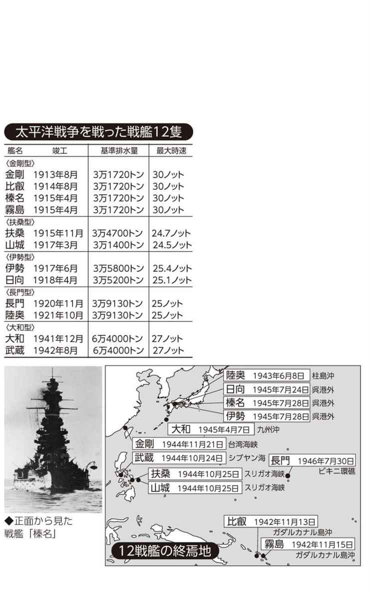
戦艦２
世界初の四〇センチ砲を搭載した戦艦「長門」
一万トン以上の国産化から一五年目に完成させた世界最大最強の軍艦
造船工業は一種の総合工業力だといえる。一隻の戦艦を建造するためには、相当な工業力の裏づけが必要になり、それによってその国の工業レベルが計れるほどだ。つまり鉄鋼、機械、電気などの主要工業力の集約されたものが造船技術なのである。
黎明期の日本は外国建造の艦艇に頼っていたが、日露戦争中の一九〇五年（明治三十八）、初めて一万トンを超える国産戦艦「筑波」を起工した（竣工は明治四十年）。そして大正に入り「金剛」をイギリスに発注したのを最後に、以後、すべての艦艇を国産化するようになる。とはいえ、当初は設計的には外国の戦艦の模倣がほとんどであり、日本独自の艦が登場するのはもう少し待たなければならない。
一九二〇年（大正八）十一月二十五日、日本が世界に誇る戦艦「長門」が竣工した。「長門」は世界で初めて四〇センチ（正確には四一センチ）砲を搭載した戦艦である。世界のどこにも、まだ四〇センチ砲という巨大な大砲を積んだ戦艦はなかった。この砲は最大射程三万二〇〇メートルで、四〇秒に一発の割合で発砲可能だった。
従来の戦艦に搭載されていた三六センチ砲は、基本的な設計がイギリスのものだったのに対し、「長門」の四〇センチ砲は、日本人の手によって設計・製作されたオリジナルだった。
速力も既成の戦艦を大きく上回る二六・五ノットを発揮する高速戦艦であった。このスピードは米軍の戦艦よりも五ノット近く速かったが、この事実は厳密に秘匿され、「長門」の速力は二三ノットと公表されていた。
国産初の一万トン超の戦艦「筑波」の竣工から一五年、日本は世界最大、世界最強の戦艦を建造したのだった。
戦艦３
「航空戦艦」に改造された戦艦「伊勢」「日向」
戦艦の砲力と小型空母の能力を合わせもつ類を見ない艦だったが...
「伊勢」「日向」は、世界でも例のない航空戦艦に改造された戦艦である。
「伊勢」は一九一七年（大正六）竣工、姉妹艦の「日向」は翌一六年の竣工だったが、初陣は一九四二年（昭和十七）六月五日のミッドウェー海戦だった。
この海戦では両艦を含め戦艦の出番はなく、日本軍は虎の子の空母四隻を一挙に失う大敗北を喫した。そこで海軍は失った空母の穴を埋めるべく、「伊勢」と「日向」を空母に改造することに決めたのだ。
しかし、完全な空母に改造するには膨大な時間がかかる。戦況は緊迫しており、悠長に工事の完了を待っている暇はなかった。
そこで、後甲板の五番・六番砲塔を撤去し、そこに水上機の射出甲板を設けて航空戦艦に改造することになったのだ。空母より能力は劣ってしまうが、改造工事にかかる時間は圧倒的に短縮できる。空母不足を補う苦肉の策だった。
改造は一九四三年（昭和十八）二月から始まり、当初の計画どおり後部の二基の砲塔を撤去し、その跡に長さ七〇メートル、幅二九メートルの射出甲板を新設した。そして甲板前部両舷にカタパルトを設置し、甲板の下に格納庫を置いた。格納庫に九機、射出甲板に十二機、合計二一機の飛行機を搭載することができた。同時に、対空兵装も大増強し、戦艦の砲力と小型空母の性能を合わせもった、航空戦艦という無類の艦が誕生した。
改造が終わったのは「伊勢」が一九四三年八月、「日向」が同年十一月である。しかし、すでにその頃の日本は、飛行機の生産もパイロットの養成も、必要最低ラインを維持することができないほど凋落していたのである。
戦艦４
使い道がなかった戦艦・重巡総出撃のレイテ海戦
戦艦九隻、重巡一三隻の決戦艦隊は死に場所を求めて出撃した
日本海軍は戦艦一二隻、重巡洋艦一八隻、空母六隻、航空機一三五〇機を中心とした艦隊で太平洋戦争に突入した。航空機は空母搭載機と基地航空艦隊保有機の合計である。
考え方としては、戦艦・重巡洋艦部隊が主役であり、空母部隊や基地航空艦隊は脇役であった。
アメリカの空母部隊や基地航空部隊に打ちのめされて完敗した結果を知っている現在からみると、「空母部隊や基地航空部隊が脇役」という考え方は信じられないかもしれないが、開戦当時は日本海軍もアメリカ海軍も大艦巨砲主義だったのだ。
しかし、太平洋という広大な海域を戦場とする戦争は、空母部隊と基地航空部隊が主役となり、戦艦や重巡洋艦の出番はほとんどなかったのである。
日本海軍の空母航空部隊や基地航空部隊が壊滅したのは一九四四年（昭和十九）六月のマリアナ沖海戦だった。残った海軍兵力はそれまで使い道がなかった戦艦や重巡洋艦であり、戦艦は九隻、重巡洋艦は一三隻も残っていた。ほとんど開戦時と変わらない隻数である。重巡洋艦は戦艦に次いで大きな軍艦で、概ね一万トン前後である。
そして、アメリカ軍のレイテ島（フィリピン）上陸の際（一九四四年十月二十日）、航空機で反撃するすべはまったくなかったから、日本軍は残存戦艦・重巡洋艦を総動員してレイテ湾へ殴り込むことになった。その途中で生起した四つの海戦を総称してレイテ（沖）海戦とかフィリピン（比島）沖海戦などと呼んでいる。結果は日本の完敗だった。
参加した戦艦は、大和・武蔵・長門・金剛・榛名・伊勢・日向・扶桑・山城の九隻、重巡洋艦は愛宕・高雄・摩耶・鳥海・妙高・羽黒・熊野・鈴谷・利根・筑摩・最上・那智・足柄の一三隻である。
戦艦５
最も悲劇的な最期を遂げた戦艦「山城」「扶桑」
両艦乗員二七五〇名のうち生存者二〇名、そのナゾとは？
戦艦や重巡洋艦など水上艦は、沈みそうになったら総員退去命令が出る。付近に駆逐艦の一隻でもいれば、退艦した将兵は救助される。総員退去命令がない潜水艦と違う。
しかし、レイテ海戦で沈没した戦艦「山城」「扶桑」の場合、戦死者はほとんど潜水艦並であった。「山城」乗員約一四〇〇名中、生存者は一〇名、「扶桑」は乗員約一三五〇名、生存者は同じく一〇名だった（江崎寿人「戦艦・山城の生存者わずか十名なり」『文藝春秋臨時増刊』「太平洋戦争 日本軍艦戦記」所収 昭和四十五年十一月発行）。
「山城」「扶桑」は同型艦で、明治末年の起工、大正四年の竣工である。当時としては日本初の超弩級戦艦として最新鋭戦艦だったが、四半世紀以上たった太平洋戦争では旧型戦艦になっていた。
レイテ湾殴り込み作戦部隊は、ボルネオ島ブルネイ湾を出港したが、足の遅い「山城」「扶桑」中心の艦隊は「大和」「武蔵」を擁する主力艦隊にはついていけず、あえてスリガオ海峡（太平洋とミンダナオ海を結ぶ一四四キロ）を突破してレイテ湾に向かう近道（それでも一四四〇キロある）を選んだ。
スリガオ海峡には、かつて真珠湾で奇襲攻撃されて破壊され、修理を終え戦線復帰していた米戦艦六隻を中心とした艦隊が待ちかまえていた。
海峡突破は一九四四年十月二十五日午前二時頃である。アメリカ海軍の艦船はレーダー照準（日本海軍にはなかった）で「山城」「扶桑」に魚雷と砲弾を相次いで命中させ、沈没させた。
前出の江崎氏は「その数多い死については隠された事実もあるが、それを記す気にはならない」と書いている。真珠湾の報復で、艦から脱出した漂流者の大部分は、銃撃されたのではなかろうか。
航空母艦１
民間の商船に補助金を出して空母への変更を予定
軍縮条約下の苦肉の策の商船建造助成政策
開戦前、ワシントン、ロンドン両軍縮条約によって、戦艦・空母の保有量をトン数で対米六割と制限されていた日本海軍は、米海軍との決戦に強い危機感をもつ者が多かった。
そこで海軍は、条約の制限を受けない商船に注目した。民間の優秀な商船に対して、戦時には海軍が徴用し空母に改造することを前提に、建造費用の六割を政府が負担するという建造助成政策を実施したのである。
同じ頃、東京オリンピック（昭和十五年＝一九四〇年開催予定）に備えて、日本郵船は太平洋航路に就航させる総トン数二万四〇〇〇トンの大型客船「出雲丸」「橿原丸」の建造を計画した。当時、太平洋上のどの外国船よりも高性能・豪華設備を目指したこの客船の建設計画に海軍は着目した。先の建造助成政策に沿って建造費二四〇〇万円のうち六割を政府が負担することになったのだ。
一九三九年（昭和十四）、相次いで起工した二隻の大型客船だったが、日米間の緊張感が高まったため、二隻とも建造の途中で空母へ転換することとなった。二隻の客船は空母「隼鷹」と「飛鷹」となった。もともと空母改造を念頭に設計されていたため、欠点も速力が少し劣る程度で、両艦とも準正規空母といえる能力が備わっていた。
以後、助成を受けていない民間の大型客船も次々と空母に改造されていった。艦名に「鷹」の文字がつけられるている空母は、すべて商船改造の空母であり、終戦までに七隻が改造された。
しかし、実戦に耐えられる性能を有していたのは、あらかじめ空母転換を念頭に設計された「隼鷹」と「飛鷹」だけで、他の改造空母は実戦に参加することなく、飛行機輸送や船団護衛が主な任務だった。
航空母艦２
空母を機動艦隊に仕立てた山本五十六の戦術眼
アメリカ太平洋艦隊を沈めるための真珠湾奇襲と魚雷への信頼
連合艦隊の真珠湾奇襲作戦は、その意外性、作戦内容とも世界の海戦史上まれにみる画期的なものだった。画期的だった理由は、米太平洋艦隊の中核である大艦巨砲の象徴である戦艦群を、豆粒のような飛行機が葬り去ったことにある。
それまでの海戦といえば、戦艦と戦艦が大砲を撃ち合うものだった。そんな時代に空母主体の航空艦隊を編成し、艦上の戦闘機、急降下爆撃機、雷撃機兼水平爆撃機の三機種が、一人の現場指揮官のもとに連携して敵に襲いかかるという作戦は、海戦の革命であったともいえる。その斬新な戦術を発案したのが、連合艦隊司令長官の山本五十六大将であった。
山本は「海軍航空隊の育ての親」といわれており、開戦前から、これからの海戦は航空機が主役になると信じていた。しかし山本が立てた真珠湾奇襲作戦に、海軍首脳部のほとんどは反対した。
最終的には、作戦が認められなければ連合艦隊長官を辞める、という山本の恫喝で決まったのだが、山本には作戦成功を確信する要件がいくつかあった。その一つが魚雷攻撃への信頼である。
真珠湾の水深は一二メートルと非常に浅かった。航空魚雷の欠陥は、着水したときにいったん海中深く潜ってしまうところにある。海軍の雷撃部隊は不可能なはずの航空魚雷をなんとか使えるようにするため、海面スレスレのところに魚雷をそっと置くように落とす訓練を行ない、身に付けてしまった。
同時に、愛甲文雄大佐によって、海中に潜らない魚雷の開発も進められ、真珠湾攻撃の直前に完成している。ぶっつけ本番で真珠湾攻撃に臨んだが、九〇パーセントの命中率をあげた。
山本はこの魚雷攻撃に絶大な信頼を置いていたからこそ、真珠湾奇襲の成功を確信していたのだ。
航空母艦３
不沈空母「大鳳」が一発の魚雷で沈んだ理由
ミッドウェーの教訓を生かして装甲を入念に行なったのだが...
空母「大鳳」は、艦載機が米艦隊の上空でより長時間攻撃できるよう、敵に接近して戦うことを念頭に設計された。しかし、敵に接近すれば、それだけ攻撃を受ける可能性も高くなる。ただでさえ、海上戦闘では空母の広く大きい飛行甲板は絶好の爆撃目標となる。一発でも甲板に命中すれば、空母としての機能を失いかねない。
そこで「大鳳」は、敵機の攻撃を受けても発着艦能力を失うことがないよう、日本の空母で初めて飛行甲板の主要部に甲鈑を張った。それも、ミッドウ ェー海戦の戦訓を取り入れ、五〇〇キロ爆弾の急降下爆撃にも耐えられるように、七五ミリの甲鈑が使用されたのである。
「大鳳」は一九四四年（昭和十九）三月七日に竣工し、第一機動艦隊に編入、小沢治三郎中将の総旗艦となった。米軍のサイパン上陸に際し「あ」号作戦が発動されると、第一機動艦隊はフィリピン中部のギラマス泊地を出撃した。「大鳳」の初陣である。
同年六月十九日、マリアナ沖海戦が始まった。ところが、米空母機からアウトレンジしていたはずの「大鳳」は、米潜水艦「アルバコア」に雷撃され、魚雷一本が命中し、あっけなく沈没してしまう。不沈艦として期待された重防御空母が、竣工後わずか三カ月で沈んでしまったのだ。
実際、「大鳳」は魚雷一発で沈むような華奢な船ではなかった。事実、魚雷を受けてもしばらくは戦闘航海にはまったく支障がなかったのだ。
応急処置をして艦内を閉鎖したのだが、雷撃のショックでガソリンタンクから気化ガスが漏れているのに気づかなかった。このガスが艦内に充満し、数時間後になんらかのショックで引火し、大爆発を起こし沈没してしまったのだった。
航空母艦４
対照的な運命をたどった姉妹艦「瑞鶴」「翔鶴」
ミッドウェー以外のすべての海戦を全うした「幸運艦・瑞鶴」
太平洋戦争に参加した日本の空母は全部で二五隻。そのなかでミッドウェー海戦を除くすべての機動部隊の作戦に参加した空母が「瑞鶴」である。
「瑞鶴」は姉妹艦の「翔鶴」と設計も要目もすべて同じで、異なるのは竣工が約一カ月遅かったのと、戦時中に搭載兵器が増強されたことくらいである。
「瑞鶴」は「翔鶴」とともに第五航空戦隊を編成し、竣工後わずか二カ月で真珠湾攻撃に出撃した。その後もこの二艦は共に海原を駆け巡ったが、「翔鶴」が米軍の攻撃によって再三被害を受けたのに対して、「瑞鶴」は被害が少なく、いつしか〝幸運艦〟と呼ばれるようになった。
「瑞鶴」の幸運ぶりは姉妹艦の「翔鶴」と比較するとよくわかる。世界初の空母対空母の対決となった一九四二年（昭和十七）五月七日の珊瑚海海戦では、「翔鶴」は三発の命中弾を受けて飛行甲板が破損。一方の「瑞鶴」は幸運にもスコールにまぎれて攻撃を受けなかった。「翔鶴」の損傷でミッドウェー海戦には参加しなかったが、同じ年の南太平洋海戦でも「翔鶴」が爆弾四発を浴びる損傷を負ったのに対し、「瑞鶴」はまたしても無傷だった。
さらに「瑞鶴」の強運は続く。一九四四年（昭和十九）六月、小沢治三郎中将率いる機動艦隊の一員としてマリアナ沖海戦に参加。この海戦では「翔鶴」、旗艦の「大鳳」が米潜水艦の雷撃を受けて沈没するが、「瑞鶴」は「大鳳」に代わって旗艦となって戦い、爆弾一発を受けるものの航海に支障はなく、本土に帰還することができたのである。
しかし幸運艦「瑞鶴」にも運が尽きるときがくる。同年十月二十五日のレイテ沖海戦で、「瑞鶴」は魚雷七本、爆弾七発を浴びてフィリピンのエンガノ岬沖に沈没したのである。
航空母艦５
日本の正規空母保有は開戦時がピークで一方のアメリカは...
アメリカを上回る大型空母六隻で開戦したが建造計画の読みの甘さが災いする
太平洋戦争開戦時、日本海軍には空母機動部隊の主力となる大型空母が六隻あった。一方のアメリカは七隻保有していたが、アメリカは艦隊を太平洋と大西洋に振り分けていたので、日本のほうが戦力的には上回っていたことになる。
しかし、アメリカは開戦後の一九四二年（昭和十七）後半から大小の空母を次々と竣工させた。大型空母の「エセックス」級は終戦までに一七隻、戦後さらに七隻建造している。
日本の空母建造はというと、実は開戦時がピークだった。海軍では開戦前から対米同等の空母を揃えるという方針で、正規の大型空母以外にも、いざというときに空母に改造できる水上機母艦や、商船の空母改造を計画していた。しかし、開戦時に建造に着手していた大型空母は「大鳳」一隻だけだった。大型空母は建造に時間がかかるため、中型や小型艦の建造を優先させたのである。
もちろん、海軍は大型空母の建造を計画していた。しかし、太平洋戦争の開戦で計画がすべて白紙になってしまったのである。そしてこの読みの甘さが、空母四隻を失うことになった一九四二年六月五日のミッドウェー海戦で一挙に露呈してしまうのだった。海軍はあわてて空母の大建造計画を立て、大型艦四隻、小型艦四隻の建造に着手した。
開戦後に起工して終戦までに竣工した大型艦は「雲龍」「天城」「葛城」の三隻だけであった。しかも、この三隻はいずれも日本機動部隊が事実上壊滅した一九四四年六月のマリアナ沖海戦以降の完成だった。
空母はあっても、搭載する飛行機も、それを操縦するパイロットもすでになかった。さらに戦う海域まで船を動かす油すらなく、この三隻はまったく戦力にはならなかったのである。
航空母艦６
一〇日間の命しかなかった幻の巨大空母「信濃」
空母に改造された大和型三番艦の悲劇的な最期
もともと「信濃」は「大和」「武蔵」に次ぐ大和型戦艦三番艦として建造が始められた。しかし、建造を始めて一年半がたった頃に太平洋戦争が始まり、造船所は大型艦よりも、中型の戦闘艦の建造を優先し、さらに既存艦の改造・修理に追われることとなった。そのため「信濃」の建造は中止となる。ところが日本海軍は一九四二年（昭和十七）六月のミッドウェー海戦で、空母四隻を失うという大敗北を喫してしまう。そこで海軍は急遽、「信濃」の建造を再開し、空母に改造して復活させることにした。
空母「信濃」の設計の基本は浮かぶ航空基地である。前線や後方から発進した航空機は、いったん「信濃」に降りて燃料や爆弾を積み込み再発進するという考えである。本来が戦艦であるから、船体の防御も堅固であり、八〇〇キロ爆弾にも耐えられるよう、甲板に装甲が施されていた。
「信濃」は一九四四年（昭和十九）十一月十九日に竣工したが、その一〇日後の十一月二十八日午後六時、「信濃」は呉工廠に回航するために横須賀を出港した。下田沖を無事通過し、二十九日午前三時すぎには浜名湖の南方を航行していた。そのとき、米潜水艦「アーチャーフィッシュ」の放った四本の魚雷が「信濃」の右舷に突き刺さった。その後も「信濃」は必死に航行を続けたが、雷撃を受けて八時間後の午前一〇時五六分、和歌山の潮岬南方四八キロの地点で転覆、沈没した。巨大空母「信濃」は、ついに一機も飛ばすことなく一〇日間の命を終えたのである。
巡洋艦１
古鷹型巡洋艦四隻は八〇〇〇トン級軍艦の傑作
軽量化で二〇センチ砲を搭載した重巡洋艦は造船技術の最高峰
巡洋艦は戦艦より小型だが、スピードがあり、そこそこに砲撃力にも優れている軍艦である。といっても、厳密な定義があるわけではなかった。
世界各国は、競争相手の国がどんな軍艦をもっているかをにらみながら、それに対抗できる最も有効な軍艦を揃えようとしていたにすぎない。
重巡洋艦について定義らしいものが生まれたのはワシントン海軍軍縮会議（一九二二年＝大正十一年）がきっかけだった。巡洋艦は一万トン以下とすることが合意されたからである。
翌年アメリカは七〇五〇トン、三四ノット（時速約六一キロ）、一五・二センチ砲一二門の重巡「オマハ」を完成させた。それに対抗して建造されたのが古鷹型二隻（他は「加古」）である。一九二六年（大正十五年）に完成した二艦は、七〇〇〇トン、三四・五ノットまでは「オマハ」とほぼ同じだが、二〇センチ砲六門を装備した点が「オマハ」を大きく引き離していた。
ところが、七〇〇〇トンの軍艦に二〇センチ砲は構造上、積めないはずだ、条約違反の一万トン以上はあるのではないかと、英米は疑った。
しかし、実際は艦自体を軽量化することで二〇センチ砲を搭載したのだった。船首楼（船首に設けられた櫓で、船室や船橋に利用）をなくして船首を高くする、甲板をなだらかな曲線で傾斜させて鋼材を節約する、艦幅を短くして一番煙突と二番煙突を上部で結合させるなど、設計者・平賀譲造船大佐（当時、のち中将）の苦心の傑作だったのだ。
古鷹型は当初四隻が企画されたが、あとの二艦は青葉型（他の一隻は「衣笠」）に分類されることが多い。いずれも軍縮条約廃止後は八七〇〇トンから九〇〇〇トンに改造され、太平洋戦争に参加、活躍する。
巡洋艦２
妙高型巡洋艦四隻は一万トンに抑え、魚雷装備を重視
海軍軍縮条約下で目一杯のトン数と重装備を追求した重巡洋艦
ワシントン軍縮条約（一九二二年＝大正十一年）は巡洋艦のトン数を一万トン以下と定めたが、同時に搭載砲を口径八インチ（約二〇・三センチ）以下と定めた。妙高型重巡洋艦はこの条約を受けて、制限目一杯のトン数と主砲（二〇センチ砲）を備えた軍艦である。軍縮条約から六年目の完成で、かなり設計に手間取ったことがわかる。
とにかく日本海軍の大方は、ワシントン軍縮条約を「アメリカやイギリスにむりやり軍備を制限させられた」という思いしかなく、いかにしたら条約違反にならずに軍備を強化できるか、その一点にしかアタマが働かなかった。
ほんとうは日本が当時進めていた八・八・八艦隊という、とても国家財政に耐えられない艦隊建造計画を中止できたので好都合だったのだが、「アメリカ憎し」「イギリス憎し」の風潮のみが昂揚した。
妙高型重巡洋艦にもそれが表われている。八インチに限りなく近い二〇センチ砲を一〇門装備し、六一センチ魚雷発射管を八門も取りつけた。当時世界的には、巡洋艦は魚雷装備を廃止する方向にあり、いかに日本海軍が「焦って」いたかがわかる。
日本の六一センチ魚雷は英米をしのぐ強力なものだった。英米の魚雷はだいたい口径五三センチどまりだったから、魚雷では負けない、との気概をこの妙高型にぶつけたのだろう。しかも世界に向けては五三センチ魚雷と公表していたのである。
六一センチ魚雷はのちに九三式魚雷（皇紀二五九三年＝昭和八年採用）という酸素を動力源とする強力なものに替えられたので、太平洋戦争の緒戦では大いに活躍した。妙高型には「妙高」「那智」「足柄」「羽黒」があるが、「那智」「羽黒」が参加したスラバヤ沖海戦はその典型的な戦例である。
巡洋艦３
高雄型巡洋艦は正八インチ砲の対空射撃を追求
妙高型より〇・三センチ口径を広げ、砲身仰角を最大にした貪欲艦
高雄型重巡洋艦は「高雄」「愛宕」「摩耶」「鳥海」の四隻。一九二七年（昭和二）に起工して三二年に相次いで完成した。その特徴は「条約型一万トン巡洋艦」の最後のものである。最後というのは、完成した時点ですでに軍縮条約の脱退というレールが敷かれてしまったということだ。
すなわち、高雄型巡洋艦が完成したとき、前年（一九三一年＝昭和六年）九月に勃発した満州事変は満州建国まで進み、侵略された当の中国自身の外交努力も大きく影響して、国際連盟やアメリカの対日批判が高まっていた。日本は中国問題に関して欧米との協調路線を採るか、欧米と対立しても独自路線を進むか、大きな岐路に立たされた。
日本は、満州国を建設した段階で、協調路線を捨てる覚悟をしたのだろう。国際連盟を脱退したのは高雄型巡洋艦が完成して一年ほどあとのことである。
さて、高雄型はトン数では制限に一五〇トン少ない九八五〇トン、主砲は三艦は二〇センチ砲だったが、「高雄」だけはズバリの口径八インチ（二〇・三センチ）砲八門を備えた。六一センチ魚雷発射管八門装備も妙高型と同じである。さらに注目すべきは三艦は主砲が対空火器としても使えるように仰角を七〇度まで上げたことである（「摩耶」は五五度）。これまでは四〇度が限界だった。とにかく主砲で敵機も撃ち落とそうという意気込みである。
それにともなって指揮所となる艦橋も大きく広くなった。見た目は威風堂々としているが、実際は頭でっかちで重心が上がったことが懸念された。
そうした欠陥は条約脱退（一九三六年＝昭和十一年十二月三十一日失効）後の改造で一万三〇〇〇トン級の超大型巡洋艦となって是正された（ただし「摩耶」改造は開戦後、「鳥海」は改造なし）。
巡洋艦４
最上型巡洋艦は「図体は大きく砲は小さく」
海軍軍縮条約の期限切れを前提に造られた重巡洋艦
太平洋戦争を戦った巡洋艦は、ワシントン海軍軍縮条約（一九二二年＝大正十一年）が規定する巡洋艦の制限に則り建造されてきたが、やがてもうひとつ基準がつくられた。ワシントン条約から八年後（一九三〇年＝昭和五年）に調印されたロンドン海軍軍縮条約がそれである。
ワシントン条約では巡洋艦は一万トン以下、火砲は八インチ（二〇・三センチ）以下と決めただけだったが、ロンドン条約では口径六・一インチ（一五・五センチ）以上、八インチ以下の火砲を装備する甲巡洋艦（重巡洋艦）と、六・一インチ未満の火砲を搭載する乙巡洋艦（軽巡洋艦）に分け、それぞれ保有できるトン数を決めたのである。
日本海軍はこのときすでに重巡洋艦の建造枠を使い切っていたので、新たに建造できる巡洋艦は軽巡洋艦しかなかった。そこで、大きさだけは重巡洋艦並にし（八五〇〇トン）、搭載火砲を軽巡洋艦並の六・一インチ未満にして建造することにした。それが最上型巡洋艦で、「最上」「三隈」「鈴谷」「熊野」の四隻である。
各艦の起工は一九三一年（昭和六）だが、すでにそのとき、いずれは軍縮条約を脱退するつもりだったわけだ。四艦の完成は一九三五年。前年暮れにはワシントン条約からの脱退を通告しており、四艦が完成した翌年にはロンドン条約からも脱退した。
四艦すべての主砲が二〇センチ砲に替えられたのは一九三九年であり、太平洋戦争の二年前だった。トン数も一万二〇〇〇トンとなった。
こうして苦心惨憺して建造された最上型だったが、「三隈」はミッドウェー海戦で、「最上」「鈴谷」はレイテ沖海戦で沈没、レイテ沖海戦で大破した「熊野」も一カ月後に米艦載機に撃沈された。
巡洋艦５
利根型巡洋艦は偵察機六機を搭載、空母の目となる
つねに空母部隊とともにあり、偵察能力を発揮した
利根型巡洋艦には「利根」と「筑摩」がある。当初の予定では最上型として〝トン数は重巡洋艦、大砲は軽巡洋艦〟というロンドン海軍軍縮条約に則して計画された。しかし、完成予定を計算してみると、完成は軍縮条約終了後になることがはっきりしたので、最初から二〇センチ砲を搭載するように設計され、建造が進められた。
完成は「利根」が一九三八年（昭和十三）十一月、「筑摩」が三九年五月。この時期は、日本はすでに中国本土の主要部分を大半占領し、それに対してアメリカやイギリスが中国支援の方針を明確にしていた。だから日本は、いずれはアメリカやイギリスと戦端を開いて日中戦争（当時は支那事変と呼称）を解決するしかないのかという漠然とした不安が、軍部、とくに海軍首脳部をおおっていた。
そういう不安が「利根」「筑摩」の装備に形となって現われたのだ。すなわち、両艦とも後甲板には大砲を積まず、水上偵察機の運用スペースとした。重巡はそれまで水上偵察機を三機搭載するのが慣例だったが、「利根」「筑摩」には倍の六機を搭載したのである。こうして哨戒と偵察の機能を高めた重巡洋艦が誕生した。
太平洋戦争は日本が独自に発案した空母機動部隊を運用することで、それまでとまったく異なった航空機中心の戦争となった。そしてこの空母機動部隊に必ず随伴したのが「利根」「筑摩」だった。六隻の水上偵察機は敵空母部隊の発見に大きく貢献した。
巡洋艦６
三〇〇〇トン軽巡洋艦「夕張」の高性能性と経済性
五〇〇〇トンの敵艦と互角に戦える創意工夫とは？
軽巡洋艦は三〇〇〇トンから六〇〇〇トン程度までの軍艦で、口径一五センチ前後の大砲を装備していた。軽巡は水雷部隊（駆逐艦で編成）や潜水戦隊（潜水艦で編成）の旗艦となることが多かった。ただ、軽巡が二、三隻集まって一つの戦隊や艦隊を編成することもあった。戦争初期の第一艦隊所属第九戦隊は軽巡「北上」「大井」の二隻編成、第五艦隊は軽巡「多摩」「木曽」を中心とした小ぶりの艦隊だった。第五艦隊は千島、アリューシャン方面の警備が主任務であり、敵の侵攻はほとんど予想されない海域だったので、軽巡中心でもよかったのである。
太平洋戦争が始まったとき、日本海軍は一七隻の軽巡をもっていた。すべて一九一九年（大正八）から二五年にかけての建造である。戦争に入ってから新たに五隻が完成した。
大正時代の一七隻のうち、最初に完成した二隻（「天龍」「龍田」）が三〇〇〇トン級であるほかは五〇〇〇トン級だが、例外が「夕張」である。
一九二三年（大正十二）完成の「夕張」は、前年に成立したワシントン海軍軍縮条約を受けて、当時は五〇〇〇トン級軽巡だったのをわざと三〇〇〇トンに抑え（実際は三四一〇トン）、砲だけは五〇〇〇トン級に搭載する一四センチ砲（一門少ない六門）を装備した、一種の実験艦だった。軽巡はだいたい三本の煙突をもっており、「夕張」は本来二本は必要だったが、それを一本にまとめるなど、軽量化の工夫がなされている。この発想はのちに古鷹型重巡洋艦の設計にも生かされた。小兵でも五〇〇〇トン並の「夕張」は、第一次ソロモン海戦で米重巡「ヴィンセンス」を魚雷で撃沈するなど活躍したが、最後は米潜水艦に沈められた。
駆逐艦１
陽炎型と夕雲型は太平洋戦争の主力駆逐艦
陽炎型一八隻、夕雲型二〇隻、「雪風」のほかはすべて沈没
駆逐艦は長さは一〇〇メートル以上もあるのに、幅はせいぜい一〇メートルぐらいと細長い。速力は三五ノットから四〇ノット近く出せ、小型で小回りがきく艦だ。
主要兵器は魚雷で、駆逐艦編成の部隊を水雷戦隊（水雷は水中魚雷の略）と呼んでいた。約半年続いたガダルカナル島攻防戦で、ソロモン海を最もよく駆け回ったのが、この水雷戦隊だった。
駆逐艦はタイプも数も多いが、太平洋戦争で中心となったのは陽炎型一八隻と夕雲型二〇隻だった。有名な「雪風」は陽炎型であり、陽炎・夕雲の両タイプで生き残った唯一の駆逐艦である。
陽炎型は初めての二〇〇〇トン大型駆逐艦で、軍縮条約が終了した直後に計画され、一九三九年（昭和十四）から四一年にかけて次々に一八隻完成した。しかし、予定の三五ノットが出ない艦もあったため、全長を五〇センチ延ばし、スクリューを改造したものを途中から建造した。これが夕雲型となった。
夕雲型は二隻が太平洋戦争前に完成し、残り一八隻は戦争中に完成したが、最後の「清霜」が竣工したのは一九四四年（昭和十九）五月、すでに日本の敗勢ははっきりしていた。それでも対空火砲を増やすなどの精一杯の努力を重ねていた。
真珠湾奇襲には第一水雷戦隊の九隻の駆逐艦が従ったが、六隻までは陽炎型、一隻が夕雲型。ミッドウェー海戦の空母部隊についた第一〇戦隊の一二隻の駆逐艦のうち陽炎型が八隻、夕雲型が四隻、同じくミッドウェー島攻略部隊についた第二水雷戦隊の一〇隻のうち陽炎型が八隻を占めていた。
ソロモン海域の最後の空母対空母の戦い、南太平洋海戦には、二四隻の駆逐艦が動員されたが、一三隻は陽炎型、七隻は夕雲型だったのである。
駆逐艦２
雷主砲従から砲主雷従へ転換された防空駆逐艦
夕雲型、秋月型にみる対空戦闘重視の駆逐艦の登場
本来、駆逐艦の主装備は魚雷だった。しかし太平洋戦争は、その劈頭に空母航空隊が真珠湾を奇襲してアメリカ海軍に大損害を与えたことで、砲撃による艦隊決戦は昔物語となった。
それによって駆逐艦の活躍場所が減ったということはなかったが、駆逐艦自体が敵の航空攻撃から身を守る必要性が生じてきた。魚雷を抱えていても、攻撃目標とはめったに遭遇せず、襲ってくるのは飛行機ばかり、という状況になったからだ。
このことあるを見込んで、夕雲型駆逐艦は陽炎型駆逐艦より対空射撃を重視して兵装された。備えている砲は口径一二・七センチ砲だが、仰角を従来の五五度から七五度まで操作できるようにした。
夕雲型は開戦後に次々に完成していったが、あとになるにつれて主砲の仰角を上げるだけでなく、対空機銃を数多く装備するようになった、最後の「清霜」などは二五ミリ機銃を一三挺装備した。二五ミリ機銃は零戦が装備した機銃より五ミリ大きいから、敵機撃墜には威力を発揮する。
こうした対空兵装を極端に進めたのが秋月型駆逐艦だ。空母護衛駆逐艦として建造され、最初の「秋月」が完成したのが奇しくもミッドウェー海戦敗戦の六日後だった。当初は魚雷発射管を全廃しようとしたが、四門（四連装発射管一基）だけ残した。主装備は六五口径一〇センチ高角砲（砲身長が六メートル五〇センチと異常に長い）八門である。
一九四五年四月までに一二隻完成したが、一二隻そろったときには空母艦隊は消滅していた。飛行機は九州などの基地から出撃して、体当たり特攻作戦の真っ最中であった。一二隻のうち、完成が遅くて戦場に出ることもなかった四隻は、終戦後、米・英・中国・ソ連に各一隻ずつ引き渡された。
駆逐艦３
四〇・九ノット＝時速七五キロを出した駆逐艦「島風」
一度に一五発の魚雷発射ができたのに一隻で建造打ち切りの理由
「島風」は、スピードと魚雷装備の究極を追求した駆逐艦だった。一九三九年に計画されたその背景には、アメリカの駆逐艦が三七ノット（時速約六六・六キロ）クラスに到達していたということがあった。
当時のことだからスピードに加え、駆逐艦本来の魚雷装備を最重要視し、日本初の五連装発射管（発射管五門）を五基装備した。一五発の魚雷を同時に発射できる空前絶後の駆逐艦だった。このため、二五六七トンと、軽巡洋艦並の大きさとなった。
完成は一九四三年五月、公試運転では四〇・九ノットを達成した。平時ならこれでアメリカの最新鋭駆逐艦を上回ると自慢できるところだったが、開戦一年半後の戦況は、日本海軍は半年にわたるソロモン海域におけるガダルカナル島攻防戦に敗退し、空母部隊も再建中だった。
かといって、すでに大がかりな魚雷戦を戦う戦場は予想できず、魚雷装備を極限まで追求した駆逐艦は不要となった。大きな軍艦をいくら造っても、役立たないことが判明したのだ。
さらに、全幅一一・二メートルしかない「島風」に搭載する七万五〇〇〇馬力ものエンジンには、高温高圧ボイラーが不可欠で、これを製造するのが存外難しかったという。
これら、さまざまな理由で、同型艦一六隻の建造計画は途中で放棄された。島風型駆逐艦は「島風」一隻だけに終わったのである。
「島風」の初陣は濃霧を選んで強行されたキスカ撤収作戦（一九四三年八月）で、これは他の艦にない強力な電波探知器を備えていたからだ。
その後もさまざまな作戦に参加したが、最後はフィリピン・ルソン島からレイテ島への兵員輸送護衛中、オルモック湾において米艦載機に撃沈された。
駆逐艦４
松型駆逐艦は、戦争末期に登場した速成の小型駆逐艦
起工から完成まで八カ月、万能駆逐艦として八面六臂の大活躍
松型駆逐艦は最初の「松」が一九四四（昭和十九）年四月（開戦二年五カ月後）、最後の三二隻目「初梅」が一九四五年六月（終戦二カ月前）の完成である。
一二六二トンで全長一〇〇メートル、全幅九・三五メートルだから、従来の駆逐艦に比べるとかなり小ぶりである。装備も魚雷発射管が四門あるものの魚雷は四本しか積まなかった。そのかわり一二・二センチの高角砲（高射砲）三門のほか、二五ミリ機銃を二〇挺も備え、潜水艦を攻撃するための爆雷投射機二基を備えていた。
最も注目すべきは、一艦を完成させるまでにわずか八カ月しかかけなかったという点である。一五〇〇トン級の駆逐艦建造期間は、およそ二年前後だったから、驚くべきスピードだった。
溶接の多用、ブロック工法の採用、あれこれと欲張らず目的を絞り込むことで工期を短縮したが、またその必要に迫られていたともいえる。
すなわち松型駆逐艦の目的は、戦闘ではなく護衛だった。そのための小型化であり、対空火砲の充実であり、工期のスピードアップだったのだ。
護衛の中心は船団護衛である。兵員輸送や物資輸送の際に随伴して、敵の潜水艦と航空機から船団を守ること、さらに海峡や湾、沿岸の警備である。海峡の警備は、そこを通過しようとする潜水艦の発見や攻撃が任務となる。
とにかく、速成で三二艦を完成させた。最初に完成した松・竹・梅などかなりの隻数が戦場に投入されたが、しだいに戦局が傾き、派遣する戦場がなくなってきた。アメリカの空母艦載機は直接日本本土の港湾を爆撃するようになり、回航中や訓練中に爆撃されることが多くなった。三二隻中一四隻は一度も戦場を経験せずに終戦を迎えたのである。

駆逐艦５
一一二隻＋六三隻の駆逐艦で生き残りは四〇隻
水雷戦隊の雄・駆逐艦はどこにでもでかけ、戦い、そして敗れた
日本海軍が駆逐艦に期待した最大の任務は、アメリカ艦隊との決戦が行なわれるとき、前面に出て魚雷攻撃をかけ、敵艦にダメージを与えることだった。
そのあと戦艦同士の決戦になるが、さらに駆逐艦には残存艦に魚雷で止めを刺す残敵掃討の役割が期待されていた。
しかし、太平洋戦争ではこうした絵に描いたような艦隊決戦は一度も起こらなかった。とはいえ、駆逐艦が遊んでいたわけではない。真珠湾奇襲とか、ミッドウェー海戦、マリアナ沖海戦など空母航空隊が主役の作戦に多くの駆逐艦が参戦したが、こういう大海戦では駆逐艦の働き場所はあまりなかった。
駆逐艦の主戦場は船団護衛や補給、あるいは撤退作戦などだった。日本陸軍のマレー半島上陸作戦で、兵員と武器弾薬を乗せた輸送船一七隻を護衛したのは第三、第五水雷戦隊の駆逐艦群だったし、フィリピン攻略部隊の輸送船団を護衛したのは第二、第四水雷戦隊の駆逐艦群だった。
ガダルカナル島攻防戦における補給を担当したのは第二水雷戦隊で、補給船団を護衛することもあったが、駆逐艦そのものに米や弾薬を満載して自らガ島に運ぶことのほうが多かった。途中で敵航空部隊に攻撃され、ときには米艦隊そのものと遭遇して戦闘に突入することも少なくなかった。
また、ガ島からの撤退作戦では二二隻、キスカ島（アリューシャン列島）からの撤退作戦では一一隻の駆逐艦が出動して、見事に大任を果たした。
駆逐艦のいない戦場はなく、それだけに消耗も激しかった。開戦時、大小新旧合わせて一一二隻の駆逐艦があり、戦争中に六三隻が建造されたが、一三一隻が戦没、事故その他で四隻喪失、生き残ったのは四〇隻しかなかったのが、それを物語っている。
潜水艦デビュー
六三隻でスタート、戦時中に一一九隻建造
ホロ苦い初陣となった潜水艦隊の真珠湾攻撃
太平洋戦争開戦時、連合艦隊には八個の艦隊があった。このうち第六艦隊が潜水艦中心の艦隊だった。開戦時、六三隻あった潜水艦を第六艦隊だけに二九隻集中していたのである。ちなみに艦船別に特徴ある艦隊をあげると、第一艦隊は戦艦中心、第二艦隊は重巡洋艦中心、第一航空艦隊は空母六隻が中心、第一一航空艦隊が基地航空隊であった。
第六艦隊は伊号潜水艦（基準排水量一〇〇〇トン以上）だけに限ると、その七割が集中していた。そうして第一、第二、第三潜水戦隊に別れ、二七隻というほぼ全兵力がハワイ周辺に出撃した。アメリカ太平洋艦隊の基地があったオアフ島をぐるりと取り囲んだ潜水艦は、なんと二〇隻である。
周知のように太平洋戦争は、日本海軍の第一航空艦隊が中心となって行なった真珠湾奇襲で始まったが、奇襲を受けて必ずや真珠湾から逃げ出してくる戦艦や空母があるに違いない、それらアメリカ艦艇を潜水艦で迎え撃とうとしていたのである。
現実にはアメリカの戦艦群は真珠湾から逃げ出すいとまもなく、湾内で撃沈され破壊されてしまった。空母は湾内におらず、ウェーク島から真珠湾への帰途にあった。
したがって真珠湾作戦における第六艦隊の戦果はゼロに等しく、逆に「伊七〇」がアメリカの空母機により撃沈された（ハワイ時間一九四一年＝昭和十六年十二月十日、開戦四日目）。
喪失が一隻だけだったのは幸運で、どの潜水艦も対潜水艦艇、哨戒飛行機、空母機に猛反撃されたのだった。もともと日本海軍の潜水艦は日米艦隊決戦が起こったとき、最前線に出て一隻でも二隻でも米軍艦を撃破する役割を担わされていたが、現実にはそれが不可能だと、開戦初日に判明したのである。
特殊潜航艇
開戦時すでに〝特攻兵器〟を使用していた日本海軍
「甲標的」と呼ばれた二人乗り小型潜水艦は真珠湾奇襲で五隻突入
真珠湾奇襲作戦では「伊七〇」のほかに五隻の潜水艦を喪失した。ただし、ふつうの潜水艦ではない。正式には「甲標的」と呼ばれた特殊潜航艇、いわゆる特潜だった。二人乗りの特潜は五隻の潜水艦（伊一六、伊一八、伊二〇、伊二二、伊二四）に積み込まれて真珠湾に接近、発進した。
特潜は三隻が真珠湾内侵入に成功したといわれる。湾内に入った特潜のなかには、目的どおりに魚雷を発射して軍艦に命中させた艇があるともいわれるが、詳細は不明だ。特潜は五隻とも米軍に引き揚げられたが、戦果のほどは現在もよくわからない。
本来なら沖合で待機している母潜水艦に救助されるはずだったが、それはいわば机上のプランであった。特潜五隻の一〇人も、それを送り出した潜水艦も、「帰っては来ない」「帰れまい」という覚悟のうえだったからだ。いわば、戦争末期に行なわれた特攻と同じであり、彼らを戦死と認定した海軍は特潜部隊のことを「特別攻撃隊」と呼んで国民に公表し、軍神という尊称まで与えたのだ。アメリカ側の放送を傍受して一人は捕虜となったことがわかったが、それには触れずに〝九軍神〟としたのである。
特潜部隊は、空母航空隊によるハワイ作戦とはまったく無関係に「日米開戦となったら真珠湾に突っ込む」ことを目標に訓練してきた。もちろん当時は救出方法は考えられていなかった。山本五十六連合艦隊司令長官は、特潜による〝必死攻撃〟を認めなかったので、とにかく大急ぎで形ばかりの救出案を作成し、ついに認めさせた。このとき初めて、航空部隊による奇襲を行なうことが明かされ、航空機の第一撃後に作戦開始という前提で、参加したのだ。
特潜部隊はその後、シドニー港やマダガスカル島ディエゴスワレス港などに突入し、戦果をあげた。

伊号・呂号・波号
「イ・ロ・ハ」の違いは基準排水量の違い
軽巡洋艦並の三五三〇トンの潜水艦も造ってはみたが......
日本海軍の潜水艦は一等潜水艦と二等潜水艦に大きく分けられていた。一等潜水艦はすべて伊号第一二号というように、伊号がついた。これに対して二等潜水艦には呂号と波号がついている。伊、呂、波の代わりに「い」や「イ」、「ろ」や「ロ」、「は」や「ハ」などと書く場合も少なくない。愛称のついた潜水艦は一隻もなかった。
この区別は潜っていない状態の基準排水量が、
●伊号潜水艦は一〇〇〇トン以上
●呂号潜水艦は五〇〇トン以上一〇〇〇トン未満
●波号潜水艦が五〇〇トン未満
となっていた。潜水艦は明治の末（一九一二年が明治四十五年＝大正元年）から建造され、当時のものは小さかったので、当然ながら波号潜水艦だったが、太平洋戦争にはさすがに参加しなかった。
しかし、太平洋戦争に入ってからも小型の波号潜水艦は三四隻も建造された。四隻を除きすべて一九四五年（昭和二十、終戦の年）に完成している。本土決戦用に小回りのきく潜水艦を大量に造ったのだ。
一方では一四四〇トンの「伊号第三六一潜水艦」型（一二隻）や一六〇〇トンの「伊号第三七三潜水艦」型（一隻）のように兵員・物資輸送用の潜水艦を造った。これらは潜水艦の主要武装である魚雷発射管がなかった。トラック島など中部太平洋の多くの島々で日本軍が孤立したので、いくらかでも補給品を届けるために開発された潜水艦だった。
また、三五三〇トンの「伊号第四〇〇潜水艦」型（三隻）も造った。これは魚雷発射管を八門も装備していた。特殊水偵攻撃機「晴嵐」三機を積んだので「海底空母」などといわれたが、西カロリン諸島ウルシー環礁のアメリカ艦隊泊地へ向かったものの、戦場に到達する前に日本の無条件降伏となった。
巡潜型潜水艦
宝の持ち腐れに終わった潜水艦本来の戦略的用兵
伝統の戦略に縛られて、輸送船攻撃ができなった日本海軍
「古今の戦争史において、主要な武器がその真の潜在力を少しも把握理解されずに使用されたという希有の例を求めるとすれば、それこそまさに第二次大戦における日本潜水艦の場合である」
この手厳しすぎる批評は、アメリカ太平洋艦隊の司令長官だったチェスター・Ｗ・ニミッツ元帥の『ニミッツの太平洋海戦史』の一節だ。
ニミッツはその理由の一半を「その強力な潜水艦部隊を、連合軍の商船隊攻撃という正統作戦にけっして振り向けたことがなかった」という点をあげた。
日本潜水艦には巡潜型と、その系統の巡洋潜水艦が合計五二隻あった。巡洋は〝遠くまで走り回る〟という意味で、通常の伊号型潜水艦が水上八ノットで一万浬（約一万八五〇キロ）の航続力だとすると、巡潜型は水上一〇ノットで二万浬（約三万七〇〇〇キロ）の航続力をもっていた。巡潜型は通商線破壊を得意としたドイツ海軍のＵボートをコピーしたものだけに、そういう目的のために使用されれば、ニミッツの酷評もなかっただろう。
しかし日本海軍は、潜水艦にかぎらず艦艇や航空機をアメリカ軍の艦艇や航空機を攻撃する以外に使用するのをためらった。それに対してアメリカの潜水艦はインドネシアやシンガポール、ビルマ（現ミャンマー）からのいわゆる南方物資の輸送船をさかんに攻撃して、日本本土を物資不足に陥らせた。
巡潜型潜水艦もその航続力の長さから、そのように使用すればできたのに、やはり艦船を中心に攻撃をしかけた。日本海軍の伝統的戦略だった漸減邀撃作戦（日米艦隊決戦が必ず起きるだろうから、潜水艦はその尖兵となって最前線に進出、敵情を探るとともに一隻でも多くの敵艦を沈め、損傷させる作戦）の考え方から抜けられなかったのだ。
海大型潜水艦
日米艦隊決戦用に準備した高速潜水艦だったが...
主力艦隊に随伴できる速力を備えた「海軍式大型潜水艦」
「海大型潜水艦」とは海軍式大型潜水艦の意味だが、とりたてて他の伊号潜水艦より、とくに大型というわけではなかった。むしろ、「大型潜水艦ではあるが水上での速度が速い潜水艦」という意味である。通常の潜水艦は水上で一〇ノットも出れば上出来だが、海大型は二〇ノット前後出た。そのすべてが伊号型潜水艦のどれかにあてはまる。
日本海軍には伊号型潜水艦が一二〇隻あったが、海大型潜水艦はそのうち三五隻だった。二隻は開戦前に除籍・沈没しているから実質三三隻である。
この三三隻が日米艦隊決戦が起こったとき（それは必ず起こるものと考えられていた）、主力艦隊（戦艦や重巡洋艦）と行動をともにしてアメリカ艦隊を攻撃する役割を担う潜水艦だった。
水上艦艇は潜水艦より速度がある。だから、それらの水上艦艇とうまく連携が保てるように、速度のある潜水艦を用意したわけだった。
しかし、日米艦隊決戦は起こらなかった。終始、航空戦となり、海大型が予想したような戦場で活躍する機会は訪れなかったのである。

潜水艦魚雷
アメリカを圧倒した潜水艦の主要武器・魚雷
小型酸素魚雷「九五式魚雷」は世界最高水準の性能を誇った
潜水艦の主な武器は魚雷である。日本海軍の魚雷は「九五式魚雷」が最も強力なもので、多くの潜水艦が搭載していた。
魚雷は、機関室に高圧の空気を送り、石油燃料を噴射させて点火・爆発させ、同時に水を噴射してできた混合気をシリンダーに送って往復運動を行なった。この一連の運動で、高圧空気ではなく高圧酸素を送り込むことができれば、燃料効果もよく、航続距離が伸び、しかも気泡の出が少ないので魚雷の航跡が目立たなくなるという利点があった。
各国ともこのような酸素魚雷の開発に全力を注いだが、太平洋戦争までに成功したのは日本だけだった。それが「九三式魚雷」（口径六一センチ）であり、もっぱら駆逐艦や巡洋艦が搭載した。
九三式魚雷は潜水艦には大きすぎるので、少し小型化して九五式魚雷をつくった。口径五三センチで、その大きさはほとんど米英海軍の魚雷と変わらなかったが、酸素を使用しているかどうかで大きな差が生まれたのである。
魚雷が海中を走ることを駛走（本来は馬を速く走らせるという意味である）と表現したが、その能力をみると次のようだった。
●九五式一型魚雷
四九ノット（時速約九一キロ）で九〇〇〇㍍
四五ノット（時速約八三キロ）で一万二〇〇〇㍍
●九五式二型魚雷
四八ノット（時速約八九キロ）で五〇〇〇㍍
四〇ノット（時速約七四キロ）で九〇〇〇㍍
もっとも魚雷一本は一・七トンもある。潜水艦は六本〜九本を積んで出撃したが、微妙なバランスで潜航しているので、発射のたびに数多くあるタンク内の海水をあちこちに移動させて、艦が急に浮上したり傾いたりするのを防がなければならなかった。
空母をしとめた潜水艦
米正規空母「ワスプ」をつけ狙い葬った「伊一九潜」
日本の潜水艦はアメリカの空母を何隻撃沈したのか
太平洋戦争でアメリカの潜水艦は空母「大鳳」「翔鶴」「信濃」の三隻を撃沈した。それに対して日本の潜水艦は、アメリカの正規空母を一隻しか単独で撃沈できなかった。それは「伊号第一九潜水艦」による「ワスプ」撃沈だ（一九四二年九月十五日、ソロモン海、サンクリストバル島約二六〇キロ南東沖合）。
「ワスプ」は、日本の「飛龍」「蒼龍」クラスの一万四七〇〇トンながら、八四機搭載できる正規空母だった。伊一九潜は小型水上偵察機を飛ばして敵情を把握し、二週間以上つけ狙い、最後は約九〇〇メートルまで接近して魚雷九本を発射した。
水上飛行機を搭載していた潜水艦は伊号型で三一隻あったが、伊一九潜はそのなかで二〇隻と最も多い「伊号第一五潜水艦型」（二一九八トン、水上で三三・六ノット、水中で八ノット）に属していた。
潜水艦は位置が相手に知られたら最後だ。伊一九潜も魚雷発射後にただちに潜航し、限界いっぱいの深度八〇メートルで息をひそめた。六分後にアメリカ駆逐艦に取り囲まれ、爆雷攻撃を受けること八五発。それでも無傷だった伊一九潜は、五時間半ぶりに浮上して思い切り新鮮な空気を吸った。
アメリカの正規空母を撃沈した例に、ミッドウェー海戦のおり、伊一六八潜がしとめた「ヨークタウン」がある。これは空母「飛龍」航空隊で爆撃され、航行不能になっていたところを忍び寄って魚雷三発で葬ったのである。
そして、伊一七五潜が護衛空母「リスカムベイ」（商船改造の小型空母、二八機搭載）をギルバート諸島マキン島沖合で雷撃（魚雷攻撃）して二三分後に沈没させた（一九四三年十一月二十四日）。その日は、一年前に撃沈した「ワスプ」の名を襲名した二代目ワスプが就役した日でもあった。
潜水艦勤務
水上艦とこんなに違う過酷な潜水艦勤務
「ないない尽くし」の上、「退艦命令」もない運命共同体
潜水艦は小さい。そのうえ潜航するのだから、素人が想像しても、その勤務はとても窮屈で過酷そうだ。実際にそうだったのだ。
作戦の第一線に中心となって出撃したのは伊号型二〇〇〇トンを少し超える程度の規模だったが、潜水艦長以下、約一〇〇名前後しか乗り組んでいなかった。二〇〇〇トンクラスの駆逐艦なら二〇〇人以上（たとえば駆逐艦「陽炎」の定員は二一六名）に比べると約半数だった。
したがって駆逐艦など水上艦は四直体制（一日一回六時間勤務）がふつうだったが、潜水艦は三直（一日八時間勤務）である。
狭いので余計なものはいっさい積まなかった。そのしわ寄せは食糧にきた。野菜や獣魚肉は出航のとき新鮮なものも積み込むが、かさばるし冷蔵設備が狭いから四、五日分しかなかった。ほとんどが缶詰である。赤飯、いなり寿司、ウナギの蒲焼きなども缶詰だった。
水上艦では艦長以下将校は毎食特別食だった。戦艦などは西洋料理のフルコースとか、酒も日本酒、ビール、ワインはもちろんシャンパンまで用意してあった。潜水艦ではそうはいかない。潜水艦長以下兵隊に至るまで全員が、兵食（兵隊用の食事）である。これは極端な階級社会である軍隊では珍しいことだった。
水上艦には必ずあるシャワー室や風呂もなかった。
潜水艦は敵艦を攻撃したあとは潜航してひたすら敵艦が去っていくまで耐えるしかない。水上艦なら、沈没の危険が迫ると「総員退艦」命令が下される。しかし、潜水艦には退去命令はない。海中で攻撃され破壊されると、そのことをどこにも告げる手段もなく、全員が戦死したのである。
潜水艦の特攻
人間魚雷「回天」を戦場に運んだ潜水艦も八隻が沈没
潜水艦乗組員は回天特攻隊員の一〇倍が犠牲となった
「回天」というのは前述（参照）でふれた「九三式酸素魚雷」に操縦席をつけた〝人間魚雷〟だった。人間が魚雷を操縦しながら海中を走り、敵艦に体当たりする特攻兵器だ。
せっかく優秀な魚雷をもちながら、なぜ潜水艦から直接発射しなかったのかといえば、太平洋戦争も三年目に入る頃には、アメリカ軍の航空機による哨戒が厳しくなり、レーダーも発達して魚雷発射の地点まで近づけなくなったからである。
回天そのものを敵艦の近くまで運んでいく役目は、潜水艦であった。
回天は全部で四二〇基製造された。最初の回天出撃は一九四四年（昭和十九）年十一月、西カロリン諸島のウルシー環礁においてである。そこはアメリカ海軍の艦隊泊地（約一〇〇〇隻の大小艦船が停泊できた）で、潜水艦の甲板に固定された回天は十数キロの地点まで運んでもらい、発進したのだ。一隻の潜水艦が運べる回天は三基から五基である。
発進した回天は、たとえ体当たりに成功しなくても生還は不可能だった。さらに、運ぶ潜水艦とて安全ではない。最初の回天特攻の際も伊号三七潜水艦が撃沈された。
潜水艦で出撃し、実際に回天特攻して戦死した特攻隊員は八〇名だが、彼らを運んだ潜水艦は三二隻。このうち八隻の潜水艦が撃沈されて生還できなかった。すなわち、
伊三七潜 一一六名 伊四八潜 一二二名
伊三六八潜 八五名 伊三七〇潜 八四名
伊四四潜 一二九名 伊五六潜 一二二名
伊一六五潜 一〇六名 伊三六一潜 八一名
が戦死した。合計八四五名である。回天特攻そのものによる戦死者の一〇倍以上の犠牲だった。
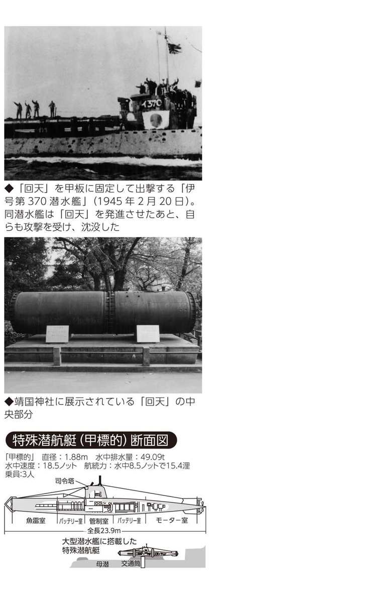
零戦デビュー１
零戦の初陣は日中戦争における中国・重慶爆撃だった
艦上戦闘機・零戦は空母からではなく最初は陸上基地から出撃した
太平洋戦争時の日本軍の飛行機で最も有名な戦闘機は、海軍航空隊の「零戦」（ゼロ戦とも）だろう。正式名称は「零式艦上戦闘機」。皇紀二六〇〇年（昭和十五）に制式採用したので、末尾の〇をとって「零式」、空母から発着艦できるので「艦上」だ。しかし、艦上戦闘機として活躍した零戦の最初の出撃は、空母からではなく中国漢口の陸上基地だった。
一九四〇年（昭和十五）、海軍は中国政府の移転先・重慶へ大がかりな爆撃を繰り返していた。しかし、漢口から重慶までの距離九〇〇キロを往復できる戦闘機がなく、護衛なしの爆撃行を強いられていた。そのため味方の爆撃機の被害も大きく、航続力の長い戦闘機が待ち望まれた。そこで海軍は、長い航続力をもつ一二試艦上戦闘機を、試作機のまま漢口に送り込んだのである。一二試艦上戦闘機は、初陣直前に零式艦上戦闘機として制式採用されたが、試作機の前線配置は異例の措置だった。
八月十九日、零戦は初めて重慶に飛び立ったが、上空に敵機は見つからなかった。中国側も新鋭戦闘機の情報をつかんでいるようで姿を隠している。
三度目の出撃で、零戦隊が重慶を去って二〇分ほどしてから中国軍機が重慶に戻ってくることを偵察機が確認した。四回目の出撃となる九月十三日、一三機の零戦隊は重慶爆撃を終えいったん帰途につき、約五〇キロほど戻ってから、重慶へ再突入した。案の定、安心して舞い上がっていた敵戦闘機を発見し、初めての交戦となった。
敵機は旧式のソ連製イ15、イ16計二七機で、約三〇分の戦闘で全機撃墜、しかも味方に損傷機なしというパーフェクトの戦果をあげたのである。
航続距離だけでなく空戦能力の高さも証明した零戦は、以後大空の覇者として中国に君臨する。

零戦デビュー２
零戦は前主力戦闘機九六艦戦よりどこが優れていたのか
毎時八三キロも速く、二二〇〇キロも航続距離が長かった
零戦は、太平洋戦争が始まるまでに中国戦線で敵機約二七〇機を撃墜、被害は地上砲火による二機のみという圧倒的な強さを誇った。なぜ零戦は、それほどの成果をあげることができたのだろうか。
中国大陸では零戦以前に、一九三六年（昭和十一）に制式採用された「九六式艦上戦闘機」が活躍していた。九六艦戦は日本が初めて世界水準に並んだ戦闘機だったが、戦時では二年で旧式となってしまう。海軍は、九六艦戦の後続機として、零戦に九六艦戦を大きく上回る性能を求めた。
その要求は、高度四〇〇〇メートルで五〇〇キロ以上の最高速度、増加タンクをつけた過重状態では巡航速度で六時間以上の航続力などで、これは各国のどの戦闘機にもまさるものだった。二〇ミリ機銃二挺を備え、しかも空戦性能でも九六艦戦に劣ることは許されない。
しかし、航続力を伸ばすためには燃料を多く積む必要があり、空戦性能を高めるには身軽でなければならないなど矛盾を含むこの要求は、当時の常識では実現の可能性は限りなく低かった。実際、海軍から試作を命じられた二社のうち、中島飛行機が開発を辞退したことからも要求の厳しさがうかがえる。
試作を請け負ったのは、九六艦戦の製作も担当した三菱重工業だった。三菱は、九六艦戦の主任設計者である堀越二郎技師を中心に開発を進めた。試作途中ではライバル会社である中島飛行機のエンジンに変更するという非情なまでの措置もとられたが、なんとか海軍の要求をクリアする機体を完成した。
その結果、零戦は最高速度で九六艦戦を八三キロ上回る時速五〇九キロ、経済速度による航続距離では二二〇〇キロも長い三四〇〇キロ以上という、世界に類を見ない戦闘機となったのである。
零戦デビュー３
アメリカ軍は絶対に信用しなかった零戦の優秀性
猿マネの日本人にそんな優秀な戦闘機がつくれるはずがない！
中国大陸で九六艦戦や零戦に暴れ回られた中国軍だが、決して手をこまねいていたわけではなかった。中国空軍機は、アメリカをはじめ、ソ連、イギリスなどから購入したもので、各国から顧問団を招き、戦力の充実をはかっていた。
なかでも、アメリカの元陸軍少将クレア・Ｌ・シェンノートは、日中戦争が始まった当初には、大陸奥地に退いて日本側の爆撃機を迎撃するという独自の航空戦理論によって中国空軍を一時建て直し、蔣介石から厚い信頼を得ていた。
それだけに、シェンノートは零戦が驚異的な航続力で、はるか重慶にまで飛来してきたことに驚き、ただちにアメリカやイギリスに零戦について詳細な報告書を送った。零戦の優秀な能力を客観的に分析し、もし米英の戦闘機と戦った場合、どんな悲惨な結果をもたらすかを本国に警告したのである。
しかし、米英はこの警告にまったく耳を貸さなかった。米英は日本がそんな高性能の戦闘機を開発できるはずがないと固く信じ込んでいたのである。実際に、数年前まで日本は外国機を購入して模倣するしかないのが実状で、日本の技術力が急激に高まっているとは夢にも思わなかったのだろう。
したがってシェンノートの報告は、錯覚あるいは中国軍パイロットの技術の未熟さをごまかすためのねつ造だと結論づけられた。
また中国在住の米陸軍武官補も、日本軍航空機の性能をかなり正確にとらえた機密文書を日米開戦前に本国に送っているが、やはり黙殺されている。
日本を「航空後進国」とみなす米英の根強い先入観が、太平洋戦争劈頭の真珠湾やフィリピン・クラーク基地奇襲で甚大な被害をもたらした一因といえよう。
零戦の秘密１
削って削って徹底的に機体を軽くしろ！
防護なんか二の次、三の次の零戦設計思想は日本人好みだった
より速く、より強く、より遠くへという性能を追求した零戦は、徹底的に機体を軽くする必要があった。そのため、防弾鋼板や防弾ガラスなど、重量の重くなるような防備は省かれ、完全に攻撃重視の戦闘機として製作された。防御の弱さはパイロットの技術で補えばよい、という考えだったのだ。
しかし、防御装置を省くだけでは、重量軽減は十分ではない。三菱の主任設計者である堀越技師は、機体全重量（二三〇〇キロ）の百万分の一、つまり二グラム単位で重量を管理し、軽量化をはかった。
航空機では「肉落とし」といって強度に関係のない部分をくりぬいて孔をあけたり、薄くしたりするが、堀越の肉落としは執拗だった。そして堀越は、それまでの慣例や規格に盲従せず、世界的に通用していた安全率の見直しも試みた。
安全率とは飛行機の強度を規定したものだが、機種や部材の性質にかかわらず一律に定められていた。彼は、部材が形状などによって強度が異なることに目をつけ、各構造部分ごとに入念な強度計算を行ない、構造上の強度に影響が出ない範囲で、規定以下に部材を削っていったのである。
こだわりは素材そのものにも及んだ。主翼の桁に試験生産段階だった住友金属の超々ジュラルミンという新素材を使用した。また従来、胴体に近い中央翼と外翼の二つに分けていた主翼を、左右各一枚とし、中央翼と外翼を結合する金具をなくした。
こうした軽量化の工夫と努力によって生み出された傑作機として、零戦は太平洋戦争開戦後約一年間は優位を保った。しかし、次第に敵戦闘機の性能が上がり、撃墜されることが増え、戦争後半には防御にも目を向けざるを得なくなり、防弾や消火装置が取り付けられることとなった。
零戦の秘密２
二〇ミリ機銃に隠された「大和魂」の精神
攻撃優先思想の極致は、死をも恐れぬ日本人パイロット好みだった
現在でも「大和魂」は日本人が好む資質の一つであろう。勇猛さと潔さ。戦時中、何にもまして尊ばれたこの精神は、日本軍の戦略から戦術、兵器の性能にまで反映し、零戦もまた「攻撃こそ最大の防御」を体現する日本人好みの戦闘機となった。
世界に先駆けて零戦が採用した二〇ミリ機銃は、攻撃優先の思想を代表するものである。当時、海軍の戦闘機は七・七ミリ機銃を主に使用していた。
その威力を比較してみると、七・七ミリ機銃が距離五〇〇メートルで約一〇ミリの鋼鈑を貫通し、二〇ミリ機銃（一号銃）は同じ距離で倍近い厚さの約一八ミリの鋼鈑を貫通することができた（のちに使用された銃身の長い二号銃は、鋼鈑約二四ミリの貫通力をもっていた）。
また有効射程距離も、七・七ミリ機銃で約五八〇メートル、二〇ミリ機銃一号銃が約七三〇メートル、二号銃が約九一〇メートルと段違いだった。
しかし、零戦の試作段階では大陸で戦っていた前線部隊から海軍航空本部に、二〇ミリ機銃に関して、口径が大きくなると弾丸の初速が遅くなり、命中率が落ちることが嫌われ、「百害あって一利なし」とする意見書が出されたことがあった。
結局、航空本部員が二〇ミリ機銃採用を積極的に支持したため、計画の変更はなかったが、その判断の是非は、実戦での零戦の圧倒的な活躍によって自ずと明らかとなった。
機銃の口径の大型化は、当時の世界の趨勢ではあったが、七・七ミリからいきなり二〇ミリ機銃を採用した大胆さには、先見の明があったといえる。それは、戦後アメリカのジェット戦闘機などで、二〇ミリ機銃が最も効率の高い口径として、定着していることからも証明されている。
零戦の秘密３
空中戦の旋回能力は戦闘機の命として最優先
たちまち宙返りして敵機の後ろに回り込む一対一の戦闘力は世界一
零戦の優秀な性能のなかでも、戦闘機の命ともいえる旋回能力は、敵戦闘機を凌駕していた。
空中戦には、敵機の後ろから急降下しながら攻撃し、その勢いで上昇する急降下攻撃、敵機の真正面から急上昇して、後ろにまわって攻撃する正面攻撃、左右に大きく蛇行して敵の攻撃を避けるジグザグ攻撃などさまざまな戦法があるが、零戦が得意としたのは、敵機の弱点である後方へ旋回して回り込み攻撃する巴戦だった。たちまち宙返りして、相手の後方へ回り込む小回りのよさは、一対一の空中戦で零戦を絶対的に有利な立場に導いた。
旋回能力や操縦性といった性能は、速度や上昇力と違い数字で表わすことが難しい。この目には見えないが戦闘機として非常に大切な能力の開発にも、堀越技師はさまざまな創意工夫をこらした。
なかでも、パイロットに違和感がないような〝操縦応答性〟の安定には苦心した。というのは、零戦は最高速度が高いため、高速時に舵に加わる空気抵抗が強く、操縦桿をわずかに動かすだけで、舵が効きすぎてしまうという新しい問題が浮かびあがったからだ。堀越は舵につながるケーブルに弾力をもたせるという当時の常識に反する方法によって、高速時の舵の動きを少なくし、この問題を解決した。
空中戦の強さの秘密には、視界のよさも見逃せない。空気抵抗によるスピードダウンをいとわず、操縦席をできるだけ高くしたのである。また、機の安定性を増すため、主翼の端をちょっと見ではわからない程度ねじり下げるということも、九六艦戦から導入していた。こうした格闘性能により、零戦はアメリカ軍のパイロットから「逃げてもよいのは零戦と積乱雲だけ」と言われるほどの戦闘機となったのである。
零戦と真珠湾攻撃
ハワイ真珠湾基地に殺到した零戦は合計七八機
飛び立てなかったアメリカ戦闘機、零戦は飛行場を機銃掃射
真珠湾攻撃は、従来の海軍の戦い方を一新する画期的なものだった。空母が攻撃目標地点の近くまで進出し、空母に積まれた航空機が敵の戦艦や空母を攻撃するというその戦術は、一九三九年に連合艦隊司令長官となった山本五十六大将が、軍令部の反対を押し切って決行した作戦だった。
それ以前は、戦艦や空母を沈めるのは戦艦に搭載した大砲であるという考えが世界的に浸透していた。そのため、空母から発艦した航空機の攻撃によって、真珠湾に停泊する戦艦を沈められたアメリカの衝撃は大きかったのである。
真珠湾攻撃は二波に分かれて行なわれた。オアフ島北方約四三〇キロ地点の機動部隊から一八三機の第一次攻撃隊（うち零戦は四三機）が出撃、その後、オアフ島三七〇キロの地点まで接近した地点で一七〇機（零戦三五機）の第二次攻撃隊が発艦した。
零戦の役割は、爆撃機や雷撃機の上方に位置し、制空隊として真珠湾や航空基地の上空で米戦闘機の反撃に備えることだった。しかし、第一次攻撃隊に対して迎撃にきた米戦闘機は四機だけで、零戦は一瞬にして全機撃墜した。その後、零戦隊は攻撃目標を飛行場へと移した。
第一次攻撃隊と入れ違いに飛来した第二次攻撃隊は、艦船や飛行場から立ち昇る黒煙に視界を遮られ、対空砲火も激しさを増していたが、反撃にくる若干の敵機を撃墜し、各飛行場への攻撃を重ねた。
この日、アメリカは戦艦四隻が沈没したのをはじめ甚大な被害を出した。零戦の集中的な銃撃を受けた飛行場には三一一機の軍用機があったが、被害を免れたのは七九機にすぎなかった。対して日本軍攻撃隊の損害は、第一次攻撃隊九機（うち零戦三機）、第二次攻撃隊二〇機（零戦六機）のみだった。
台湾基地からフィリピンへ
フィリピン・クラーク基地を奇襲した零戦は九〇機
空母がいるぞ！と米軍を慌てさせた片道八三〇キロの大飛翔
真珠湾奇襲に続いて、マレー半島やフィリピンなど南西方面に進出することが、日本軍の重要な戦略だった。フィリピンにはアメリカの航空兵力が集結するクラーク・フィールド、イバ飛行場があり、台湾南部の高雄と台南基地の航空隊が、それらの飛行場に対する先制攻撃を担当することとなった。
台湾からクラーク基地までは八三〇キロあり、零戦は航続距離の長さが懸念されていた。したがって、フィリピン近海まで零戦を載せた空母を送り、空母から発艦させることが考えられていた。
しかしこの案には、利用できる空母が小型のため多くの零戦を搭載できないなどいくつかの問題があった。そこで台湾の零戦隊は、エンジンの回転数を下げ、燃料消費量を抑える飛行法を訓練し、台湾からフィリピンへの飛行を可能にしたのだ。
フィリピン初空襲は、米軍に防空態勢を整える時間を与えないよう、真珠湾奇襲後すみやかに実行する必要があった。しかし台湾上空に濃霧が立ちこめ、出撃が真珠湾攻撃から五時間以上遅れてしまった。
クラーク飛行場へは零戦三六機と陸上攻撃機五四機が、イバ飛行場へは零戦と一式陸上攻撃機が各五四機飛び立った。クラーク基地ではこの時間のロスが幸いした。上空で待ち構えていた米軍機が燃料補給のため、ちょうど着陸していたときに攻撃隊が到着したからだ。イバ飛行場では、零戦は追いすがる五機のＰ40を全機撃墜し、地上機の銃撃を行なったあと、さらにクラーク基地の応援に向かった。
米軍は航空兵力の過半数を一日で失ったが、それでもまだ零戦の真価を十分に理解しなかった。それから数日間、米軍は海上に多数の哨戒機を出して空母を探し回っていたのだ。まさか零戦が遠く台湾から飛来したとは、思いもよらなかったのである。
零戦とミッドウェー海戦
大敗のミッドウェー海戦も零戦隊は大勝利を収めた
襲い来るアメリカ雷撃機を一機残らず撃墜した零戦隊だったが...
太平洋戦争の転機となったのが、一九四二年（昭和十七）六月五日のミッドウェー海戦の敗北である。この海戦で、海軍は出動した主力空母「赤城」「加賀」「飛龍」「蒼龍」の四隻すべてを失うという致命的な損害を被った。以後、日本は戦力を立て直せず、主導権を取り戻すことはできなかった。
しかし、零戦に限っていえば、この海戦でも一方的な大勝利を収めている。ミッドウェー島攻略の制空隊として参加した三六機の零戦は、ミッドウェー島上空で待ち構えていた約四〇機の米戦闘機を圧倒した。一方、空母上空の護衛を担当していた零戦は、先にミッドウェー島の基地から発進していた米の攻撃機を迎え撃った。
その後ミッドウェー島を攻撃した零戦隊も戻り、空母上空の護衛に加わった。米空母からは、ダグラスＳＢＤドーントレス急降下爆撃機やＴＢＤデバステーター雷撃機、ＳＢ２Ｕビンディケーター爆撃機などが断続的に飛来したが、零戦は群がる米機を一機も取りこぼさない勢いで、ことごとく撃墜していった。しかも、日本の空母には魚雷も爆弾も一発とて命中させない完璧な護衛だった。
しかし、雷撃機の攻撃により零戦がすべて低空に降り、艦隊上空ががら空きになってしまった一瞬、ＳＢＤ急降下爆撃機が空母に襲いかかり、空母三隻がたちまち炎上した。わずかに離れていたため難を逃れた空母「飛龍」が、米艦隊に反撃を試みるも、まもなく急降下爆撃を受けて沈没した。
この海戦で零戦が撃墜した米航空機は、資料によって異なるが、一二〇機ともいわれている。しかし、日本軍も二八五機の航空機を喪失し、何よりも真珠湾以来の多くのベテランパイロットを失ったことが、航空隊にとって大きな痛手となったのである。
ガ島攻防戦
往復二〇〇〇キロ、ガダルカナルに飛ぶ零戦の苦闘
ラバウルから一〇〇〇キロ飛んで、戦闘わずか一五分の過酷な日々
「餓島」と呼ばれたガダルカナル島（以下ガ島）をめぐる戦いは、太平洋戦争で最も過酷な戦線のひとつだった。ガ島はソロモン諸島のほぼ東端に位置する島で、日本軍が南方作戦の最南端の拠点としていたニューブリテン島ラバウルからでも約一〇〇〇キロ南東にあった。
一九四二年八月七日早朝、アメリカ軍がガ島に上陸した。ラバウルには、連日ニューギニアのポートモレスビーなどで米機と激戦を展開し、「撃墜王」として名をはせた坂井三郎も活躍していたラバウル航空隊があった。知らせを受けたラバウルでは、さっそくラバウル航空隊をガダルカナルへ飛ばした。
ラバウルからガ島まで片道一〇〇〇キロ、往復二〇〇〇キロの戦闘が始まる。零戦の航続距離ぎりぎりで、約三時間かけてガ島上空に到着し、空戦はたった一五分以内に限られた。
八月七日以降、ガ島を含むソロモン海域は「パイロットの墓場」と呼ばれるほど、過酷で果てしない空中戦が繰り広げられた。ガ島へ上陸した米軍への攻撃、日本陸軍のガ島上陸隊への支援、ソロモン海での艦隊の護衛など、零戦隊はフル稼働した。
零戦はそれぞれの戦いでは、決して引けを取らなかったが、物心両面ともに消耗は激しかった。零戦の喪失は補充を大きく上回り、加えてガ島の米機群はいくら撃墜しても数が減らなかった。次第に、日米の生産力・補給力の差が明らかになってきたのである。
十月二十六日の南太平洋海戦で勝利するなど、一時的に盛り返すことはあった。しかし、最終的には力尽き、陸軍上陸部隊への補給もままならず、半年にわたるガ島の戦いは終止符が打たれた。ガ島は放棄され、一九四三年二月初めには撤退が終了した。
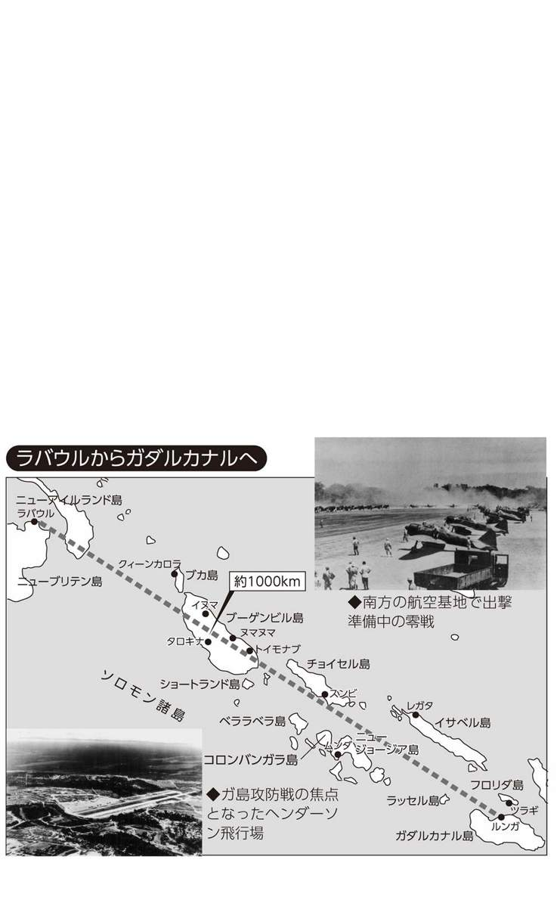
山本長官機を守れ！
山本長官を守りきれなかった六機の護衛零戦隊
帰還後の相次ぐ懲罰的な出撃命令で六人中五人が大空に散った
ガダルカナルを失った日本軍は、一九四三年四月、ソロモン、ニューギニア方面の連合軍を、ラバウルから航空攻撃で撃破する「い」号作戦を実施した。連合艦隊司令長官・山本五十六大将じきじきの陣頭指揮のもと「い」号作戦は〝大戦果〟をおさめた。
作戦終了後、ラバウルの山本長官は、ブーゲンビル島など前線基地への視察を決めた。周囲からは、長官自らが赴くことに反対の声があがり、また護衛はわずか零戦六機だけとなっていたので、多くの護衛機をつけるようにとの進言もなされた。
しかし山本長官はとりあわず、四月十八日、長官以下六人の幕僚が二機の一式陸上攻撃機に分乗し、六機の零戦をともなってラバウルを出発することとなった。分刻みに立てられた視察スケジュールは、視察先にも無線で連絡された。
しかし、長官の行動を詳しく知らせるこの無線は四桁数字の暗号で打たれていたが、米軍にあっさりと解読されていた。ガダルカナル基地の米軍は、山本長官襲撃隊を組織し、襲撃隊長には陸軍少佐ジョン・ｗ・ミッチェルが指名された。襲撃機は「双頭の悪魔」と恐れられるロッキードＰ38ライトニング戦闘機が選ばれた。
視察当日、ブーゲンビル島ブイン上空で待ち構えた一六機のＰ38は、視察隊の二機の一式陸攻をあっという間に撃ち落とし、去っていった。六機の零戦では山本長官を守りきれなかったのである。
零戦は全機ラバウルに帰還したが、その後六名のパイロットには、連日懲罰的とも思える出撃命令が相次いだ。そして山本長官のあとを追うかのように四名がソロモン上空に散り、一人が鹿屋基地上空での空中戦で戦死した。生き残ったのは、空戦で右手首を失い日本本土に後送された一人だけだった。
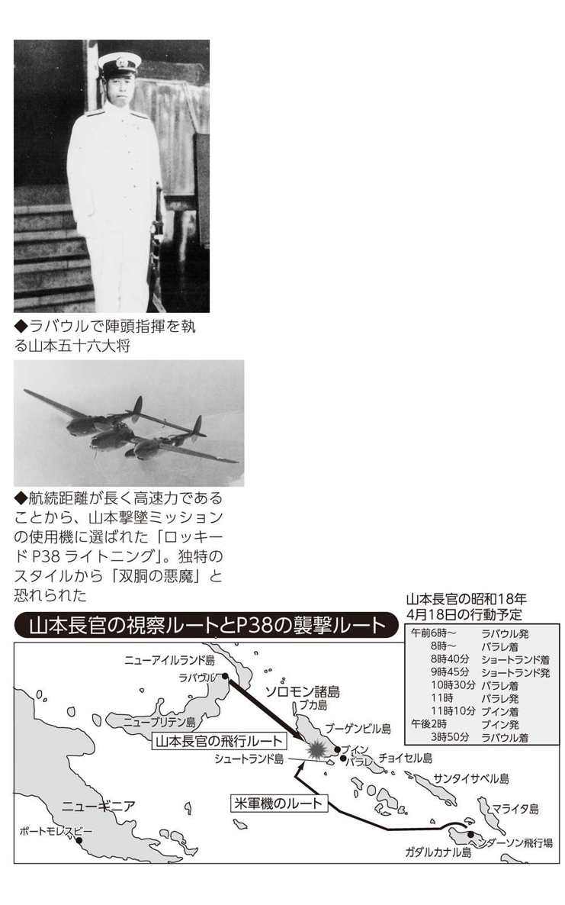
主役交代
無敵・零戦に凋落のかげり。ブーゲンビル航空戦の惨敗
アメリカの株価も下げた〝大戦果〟の裏で何が起こっていたか
太平洋戦争も中頃にさしかかる一九四三年には、さすがの零戦も苦戦を強いられていた。米軍が零戦を徹底的に研究し、零戦の弱点をつく「ヒット・エンド・ラン戦法」を取り入れたことが大きかった。
一九四二年七月にアリューシャン列島のアクタン島で零戦を捕獲した米軍が、零戦の性能を入念に研究した末に開発した戦法だった。
零戦に対し一対一では勝ち目がないので二機一組になり、零戦の上空から急降下し一撃を加え、たちまち高空へ逃げるという、ある意味では消極的な戦法だったが、高空での戦闘や急降下性能に弱点のある零戦にとっては、やっかいなものだった。
さらに米新型機の出現もある。一九四三年後半には零戦に対抗すべく開発されたグラマンＦ６Ｆヘルキャットが登場し、零戦は空の主役の座を明け渡すこととなった。
アメリカ軍のタロキナ上陸にあわせて、一九四三年十一月から十二月にかけて行なわれたブーゲンビル島沖航空戦も厳しい戦いとなった。六次にわたる航空戦は惨敗といっていいものだった。
しかし、大本営は多大な戦果を発表し続ける。まったく戦果がなくても、撃沈五隻、大破八隻などと発表され、実際には参戦していない米空母までが撃沈とされた。「大本営発表」といえば、現在では虚報の代名詞となっているが、当時の国民はこの発表に勇気づけられていたのである。
大本営発表は欧米でも聴取されていた。皮肉なことに、この戦果発表を真に受けて、アメリカの株価が下落したということもあった。
米海軍長官ノックスが、「日本の発表は絶対に真相ではない」と、わざわざ声明を出す必要があったほどだったという。
惨敗の海
「マリアナの七面鳥撃ち」とまで嘲けられた零戦
二三四機参戦して残った零戦はわずか一七機...何がそうさせたのか
一九四四年（昭和十九）六月十九日のマリアナ沖海戦は、マリアナ諸島のアメリカ機動部隊（スプルーアンス大将指揮）を壊滅させるため、空母九隻と艦載機四三九機からなる第一機動艦隊（小沢治三郎中将指揮）が挑んだ一大決戦だった。
零戦は、二〇ミリ機銃弾の装弾数を増やし防弾も強化した五二型が一五一機、一五〇キロ爆弾の爆弾架を取りつけ戦闘爆撃機に改造された二一型が八三機、合わせて二三四機が参戦した。
日本軍は、艦載機の長い航続距離を生かして、米軍機の攻撃圏外から攻撃隊を発進させ米空母部隊に先制攻撃をしかける「アウトレンジ戦法」をとった。作戦どおり攻撃隊を発進させることができた小沢機動部隊の司令部では、勝利を確信した。
しかし米機動部隊は、迎撃の準備を十分に整えて待ち構えていたのだ。米司令部は、四月にフィリピンで抗日ゲリラが奪った連合艦隊の作戦計画書類を入手し、小沢機動部隊の空母や艦載機の数、アウトレンジ戦法を事前に知っていたのである。
零戦をはじめとした攻撃隊は、米軍の想定どおり空母に向かい、待ち伏せていたＦ６Ｆヘルキャットに次々と撃ち落とされた。かろうじて空母に近づいた機も、ＶＴ信管つきの対空砲弾を浴びた。ＶＴ信管とは信管が電波を発し、命中しなくても機体の近くで爆発する新兵器だった。
また米軍は高性能のレーダーを備え、艦隊から戦闘機を誘導し、有利な高度を保って日本軍機を追いかけ回した。それに対し技量の未熟な日本軍機は、よたよたと逃げまどう姿を七面鳥にたとえられ、米軍から「マリアナの七面鳥撃ち」と嘲られた。二日間の決戦を終え、残った零戦はわずかに一七機という惨敗だった。
零戦と特攻１
零戦の神風特別攻撃隊は、やむにやまれぬ窮余の一策か？
レイテ沖海戦でアメリカ護衛空母に体当たりした零戦五機
日本軍が「神風」、正しくは「神風特別攻撃隊」による体当たり攻撃を最初に行なったのは、一九四四年十月二十五日、フィリピン沖でのことだった。
フィリピンでは、残存するほぼすべての艦船で編成した栗田艦隊がレイテ湾に突入するまで、なんとかわずかな手持ちの飛行機で、米空母機の妨害を阻止する必要があった。逼迫した戦況のなかで採用されたのが、爆弾を積んだまま飛行機ごと体当たりするという攻撃法だったのだ。
だがレイテの特攻より先に、すでに本土には体当たりの部隊があった。爆撃機から切り離されて軍艦に体当たりするという人間爆弾兵器「桜花」の部隊が、十月一日に編成されていたのである。
結局、特攻はフィリピンでやむにやまれず行なわれた窮余の一策という性質のものではなく、遅かれ早かれ実行されようとしていたものといえるだろう。日本軍の、私利・私欲を捨て、お国のために命を捧げることを最高の美徳とするメンタリティが生んだ攻撃だった。
最初の特別攻撃が行なわれた十月二十五日、七隊の攻撃隊が出撃し、関行男大尉率いる敷島隊が最も大きな戦果をあげた。敷島隊の零戦五機のうち一機が空母に体当たりして沈没させ、そのほかに空母三隻にも損害を与えた。空母撃沈という思いがけない戦果をあげた特攻作戦は、その後も引き続き行なわれることとなった。
零戦と特攻２
海軍航空特攻の主力となった零戦の受難
六四三機が体当たり特攻で散華したフィリピン・沖縄特攻
無類の航続力と空戦性能をもつ戦闘機として、中国戦線に参加してから四年余り。一九四四年（昭和十九）後半には零戦の栄光はすでに過去のものとなっていた。爆弾を積んで敵艦に突撃するという苦い役割を最初に担わされた零戦は、これ以後、海軍航空特攻に次々と投入されていく。
特攻の創始者といわれる大西瀧治郎中将は、「特攻は作戦の外道」と自嘲していた。だが、特攻はフィリピンや沖縄で盛んに行なわれ、米軍を恐怖に陥れた。なんといっても、死を恐れずに突撃してくるその精神がアメリカ人には理解できず、体当たり攻撃を防ぐ術などなかったからだ。
フィリピンでは、一九四四年十月から翌年一月に航空部隊が去るまで特攻は行なわれ、陸海軍合わせて五五〇機以上が失われた。四五年三月からの沖縄戦でも続行され、一八〇〇機以上が投入されている。
航空特攻は、体当たりを果たせず海中に没するものがほとんどだったが、各戦場で少なくとも二五〇〇機以上が突入し、四〇〇〇人以上が戦死した。
海軍では、特攻に出撃したのは艦戦、艦爆、艦攻、水上機など一五種類にもおよび、総数一三九二機にものぼる。そのうち半数以上の六四三機が零戦だった。零戦に始まった特攻は、最後まで零戦が主力だったといえる。
航空機の特攻によって米軍が受けた被害は、出撃者が生きて帰らないという攻撃の性格上、資料によって誤差があるが、護衛空母三隻、駆逐艦・護衛駆逐艦一五隻を撃沈、損傷は正規空母一六隻、軽空母・護衛空母二〇隻、戦艦一四隻など、合わせて二七〇隻あまりとなっている。自らの命と引き替えに敵機に損害を与える攻撃の結果を、大きいと見るか、小さいと見るかは、意見の分かれるところだろう。
大量生産の理由
一万機以上も生産された戦闘機は零戦だけだった
零戦に始まり零戦に終わった日本海軍の対米航空戦
五年間にわたって日本海軍戦闘機の主力として戦った零戦は、生産機数も飛び抜けていた。終戦直前まで生産され続け、総生産数約一万四三〇機（このうち三二七機は浮舟をつけた二式水上戦闘機）は、日本の陸海軍だけでなく民間を通じても最多記録だった。国内の生産能力が激しく衰えていた一九四四年（昭和十九）にも、実に三八三〇機が生産されている。
零戦に次いで多く生産されたのは、陸軍を代表する一式戦闘機「隼」で五七〇〇機、その次がやはり陸軍の四式戦闘機「疾風」で三四七〇機だった。海軍の戦闘機では、「雷電」五〇〇機弱、「紫電」一〇〇〇余機、「紫電改」四〇〇余機、「月光」約四八〇機と著しい差があり、零戦がいかに海軍の対米航空戦を支えていたかがわかる。
これだけ多く零戦が生産された理由として、第一にその優秀な性能があげられるが、もちろんそれだけではない。海軍の戦闘機は、三年を基準として新規に設計・試作されるのが慣例となっていたが、零戦の後継戦闘機がなかなか完成しなかったこともその理由の一つである。そのため零戦は機銃を増やしたり、防御を強化したりと、幾度ものバージョンアップをしながら、その時どきの敵機への対応をはかっていた。
零戦が苦戦を強いられるようになったのは、一九四二年後半あたりからだったが、これは、敵機の性能アップや日本軍のパイロットの技量の低下もさることながら、一九四二年にアリューシャン列島で回収した零戦を米軍が徹底研究し「ヒット・エンド・ラン」戦法を開発したことが大きかった。
一九四一年の零戦と中国軍機との勝率は六対一だったが、太平洋戦争終盤に登場したＦ６Ｆの日本軍機への勝率は、一九対一と完全に逆転されていた。
零戦各型の特徴
代表的な二一型、三二型、五二型の性能比較
第一世代、第二世代、第三世代...戦況につれ零戦は手が加えられていった
零戦は、試作機である一二試艦上戦闘機から五四型丙まで、一二種類生産された。緒戦を飾った一一型と、空母上で扱いやすいよう翼端を五〇センチ折り畳めるようにした二一型が第一世代といえる。
第二世代は、エンジンを「栄」二一型に換装し翼端の折り畳み部を角型に整形した三二型と、三二型が期待どおりの性能を発揮しないため再び主翼を二一型に戻した二二型である。さらなる性能向上を目指してつくられた最終世代の五二型は、翼端を折り畳まず五〇センチ短くして丸形に整形した。
その後、二五〇キロ爆弾の投下装置を施した特攻専用機ともいえる六二型（六三型）や、エンジンを換装した五四型丙（六四型）などが製作されたが、量産前に終戦を迎えた。
代表的な機体である二一型、三二型、五二型の性能を比較してみよう。太平洋戦争開戦直後に活躍した二一型は、最も格闘性能に優れていたと評価され、新型機が登場したあとも使用され続けた。
第二世代の三二型は、スピードがわずかに上がっただけで、運動性能、航続力ともに低下した。主翼の形を戻した二二型は、ガ島まで一〇〇〇キロを飛ぶラバウルからの「航続力を回復せよ」との要望に応えたが、ガ島戦には間に合わなかった。
五二型は、それまで集合式だった排気管を単排気管（ロケット排気管）に換え、最高速度五四四キロ（高度六〇〇〇メートル）を記録した。五二型は武装の違いによって三種類の姉妹型がつくられている。
五二型乙は七・七ミリ機銃が一三ミリ機銃に換えられた。両翼に一三ミリ機銃二挺が追加され、主翼の下にロケット爆弾の吊り下げ装置がつけられたのが五二型丙。また、零戦の苦戦と比例するように、五二型では各型ごとに防弾装備が強化されていった。
零戦のライバル
零戦もさすがに参ったアメリカ海軍のＦ６Ｆヘルキャット
零戦の二倍の強力エンジン、スピードで零戦を圧倒
零戦から空の主役の座を奪ったのが、グラマンＦ６Ｆヘルキャットだった。Ｆ４Ｆワイルドキャットの後継機として登場したＦ６Ｆヘルキャットは、零戦の二倍の二〇〇〇馬力という強大なエンジンを装備し、最高速度、上昇力、高高度性能に優れていた。
機体は零戦より一回り大きく、重量は日本の艦上爆撃機並の五トンだった。防弾装備や機体の強度も重視されていた。アメリカが「Ｆ６Ｆは旋回性能と航続力のほかは、すべての点において零戦に勝っている」と発表したとおり、実戦ではその優秀な性能を存分に発揮していった。
Ｆ６Ｆの初陣は、一九四三年九月一日のマーカス島（南鳥島）への空襲だった。同年十月六日、ウェーク島空襲で零戦と初めて対決した。Ｆ６Ｆは六機が空中で撃墜され、一二機が対空砲火によって撃ち落とされた。一方、零戦は二三機が迎撃に出たが、一四機が未帰還、一機自爆、六機が滑走路で破壊されるという損害を被った。
米軍のそれまでの戦闘機と同様、Ｆ６Ｆも一撃離脱の戦法をとり、ブーゲンビル島沖航空戦、マリアナ沖海戦、台湾沖航空戦などで、ことごとく零戦を撃墜し、圧倒的な力を見せつけた。
Ｆ６Ｆは、斬新な設計のＦ４Ｕコルセアの実用化が失敗したときの保険として、一九四〇年春から開発が始まった機体だった。
Ｆ４Ｆを一回り大きくしたようなスタイルで、とくに革新的なアイデアを盛り込むことなく「堅実第一」としたＦ６Ｆは、革新的ゆえにトラブルが発生し、空母への搭載が不適当と判断されたＦ４Ｕに替わり、米海軍の主力機となったのである。
量産性にも配慮されたＦ６Ｆは、終戦後の一九四五年十一月までに一万二二七五機が生産された。

零戦の後継機
戦局の挽回も可能とされた高性能機「烈風」
開発の遅れがひびき、試作八機で終戦を迎えた幻の名機
海軍が主力機を代替わりさせるサイクルは、約三年である。「烈風」もそれに従って、零戦が制式採用された一九四〇年（昭和十五）に、海軍から三菱に開発が内示された。しかし、このとき三菱では零戦の量産や改良、局地戦闘機「雷電」の開発などに追われていた。さらに高出力エンジンの目途もつかなかったため、「烈風」の開発は一時見送られた。
開発に着手したのは一九四二年（昭和十七）四月だった。一七試艦上戦闘機として三菱の一社特命で行なわれ、零戦と同じく堀越二郎技師が設計主任を担当した。
海軍の要求は、最高速度、航続力、旋回性能、さらに重武装、防弾装備など多方面に高水準を求めるものだった。
開発で最も問題となったのがエンジンだった。三菱は高馬力の自社製ＭＫ９Ａ（二二〇〇馬力）を望んだが、海軍の強く主張する中島の「誉」エンジン（一八〇〇馬力）が採用されることとなった。しかし、「誉」を搭載した試作一号機は一九四四年四月に完成したが、テストでは馬力不足のため最高速度（五六〇キロ以下）や上昇力（六〇〇メートルまで一〇分）が要求された性能に大きく及ばなかった。
海軍は開発に見切りをつけて製作中止としたが、三菱の設計陣は、エンジンをＭＫ９Ａに換装し開発を続けた。その結果、同一機種とは思えないほど飛躍的に性能を向上させ、ほぼ要求をクリアする機体が完成したのである。
そうなると海軍は態度を一変させて、一九四五年六月制式採用となった。しかし、開発の遅れは致命的で、試作機八機が完成したところで終戦を迎えた。
烈風は、試験パイロットが「終戦時に本機二〇〇機があらば、戦局の挽回も可能なり」と語ったほど高レベルだったが、幻の戦闘機で終わったのだ。
陸上攻撃機１
「戦闘機不要論」まで登場した優秀な陸攻だったが...
「九六式陸攻」の活躍と、その後継機「一式陸攻」の期待された誕生
日中戦争が勃発した前年、一九三六年（昭和十一）六月に制式採用された陸上攻撃機が「九六式陸攻」である。魚雷に似たスマートな機体で、当時の戦闘機よりも速い時速三四八キロのスピードを誇った。だから、戦闘機などいらないとする「戦闘機不要論」まで登場した。
航続力も抜群で、日中戦争勃発直後には台湾や九州の大村基地から出撃、南京、杭州などを攻撃した世界初の渡洋爆撃を行なった。台北からは約五〇〇キロ、大村からは約八〇〇キロの距離で、しかも悪天候を押しての爆撃を見事に成功させた。
この渡洋爆撃の直後、海軍は「九六式陸攻」の後継機開発に着手、九六式陸攻をさらに上回るスピードと航続力をもった「一式陸攻」が一九四一年（昭和十六）四月に制式採用された。九六式陸攻では魚雷は機体の外に吊り下げていたが、一式陸攻では胴体内に格納し（日本の陸攻では初）、空気抵抗を少なくするために葉巻型のボディーとした。
また、四八〇〇キロ程度の航続力を得るために、主翼内の一部を燃料タンクとした「インテグラル・タンク」を採用、燃料搭載量を増大させた。試作機は時速四四四・五キロ、航続距離五五五六キロと、海軍の要求を上回る性能を発揮した。
しかし、開発に着手したのが日中戦争の初期であり、その後、一九四一年五月からの中国奥地爆撃で見られた、被弾に弱い機体、脆弱な自衛火器といった欠点が、一式陸攻で十分改善されたとはいえなかった。とくにインテグラル・タンクの採用は、被弾即炎上という致命的な欠陥をもたらした。それでも一式陸攻は、九六式陸攻の総生産機数一〇四八機の二倍以上の二四一六機が造られた。日本陸海軍の双発機では最大の生産数である。
陸上攻撃機２
世界に大きな衝撃を与えたマレー沖海戦
陸攻の雷撃で英戦艦「プリンス・オブ・ウェールス」と「レパルス」を撃沈
太平洋戦争開戦直後、マレー半島攻略作戦の支援には、一隻の空母も当てられなかった。そのため、陸攻隊が仏印（現在のベトナム）南部に進出して、陸軍部隊を支援することになった。また、マレー攻略支援には二隻の高速戦艦が派遣されているだけだったので、輸送船団や上陸部隊を守る重責も陸攻部隊には課せられていたのである。
一九四一年（昭和十六）十二月十日正午前、英戦艦「プリンス・オブ・ウェールス」と「レパルス」を、偵察機が発見、南部仏印の基地から出撃した第二二航空戦隊の元山航空隊と美幌航空隊の「九六式陸攻」五九機、第二一航空戦隊の鹿屋航空隊所属の「一式陸攻」二六機が、正午すぎから襲いかかった。
陸攻は五〇〇キロ爆弾一発を搭載したものが二八機、二五〇キロ爆弾二発装備のものが八機で、他の陸攻五一機は雷装だった。爆弾は本来なら八〇〇キロ爆弾を搭載するのだが、大型爆弾はまだ飛行場に届いていなかったのだ。戦艦の分厚い装甲を打ち破るのには威力不足だった。
代わって威力を発揮したのが魚雷である。戦艦の左右から襲いかかって魚雷を投下し、次々と命中させていった。
「レパルス」は爆弾一発、魚雷一三本（英側資料では魚雷五本）、「プリンス・オブ・ウェールス」は爆弾二発、魚雷七本（同爆弾二発、魚雷六本）を浴びて沈没した。陸攻隊の損害は、二機が撃墜され一機が不時着時に大破、二七機が被弾した。
「マレー沖海戦」と呼ばれるこの戦いは、戦闘行動中の戦艦が航空機だけで撃沈された最初の海戦で、しかも、航空基地から約八三〇キロ離れた海上での戦闘であったことから、世界の海軍関係者に大きな衝撃を与えたのである。
陸上攻撃機３
蘭印制圧に大きく貢献した基地陸攻部隊
艦をもたない第一一航空艦隊は基地を順次前進させ、露払い役をはたした
第一一航空艦隊（基地航空部隊）は日本海軍で初の艦をもたない艦隊で、零戦と陸攻を中心に編成された部隊だ。開戦時、陸攻隊は台中に鹿屋空（一部）の一式陸攻三〇機、台南に第一航空隊の九六式陸攻四二機、高雄に高雄空の一式陸攻六二機がそれぞれ展開していた。
基地航空部隊は開戦直後にフィリピンの米比空軍を撃滅したのち、一九四一年（昭和十六）十二月二十三日、ミンダナオ島のダバオへ、二十六日にはミンダナオ島西方のホロ島へ一部が進出した。
そして在比米軍撃滅のめどが立ったことから、基地航空部隊は蘭印（現インドネシア）作戦への転換を命じられ、以後、基地航空部隊は地上部隊の進攻と歩調を合わせて航空基地を前進させていった。
翌年一月十一日に海軍落下傘部隊がセレベス島メナドを占領すると、二十一日には鹿屋航空隊の陸攻が進出した。その後の陸攻隊の動きを追うと、鹿屋空はセレベス島ケンダリー占領の三日後、一月二十七日に陸攻二〇機が進出。高雄航空隊は二月一日に三三機がケンダリーに進出後、三日にバリクパパン（一月二十四日占領）、二十二日にバリ島（二月十九日占領）、二十五日にバンジェルマシン（二月十日占領）へと進出した。第一航空隊は一月三十一日からメナドよりケンダリーへの展開を始め、二月七日にアンボン（一月三十一日占領）に進出した。
蘭印の連合軍航空部隊は、オーストラリアからの増援を得て反撃しようとしたが、二月三日からバリクパパン、ケンダリーより出撃した陸攻隊に飛行場を破壊されるなど先手を打たれて航空部隊は壊滅した。さらにバリ島とチモール島クーパン（二月二十日占領）を確保したことにより、日本軍は豪州と蘭印の連絡路の分断に成功したのである。
陸上攻撃機４
世界一周飛行と落下傘部隊の活躍
「九六式陸攻」の優秀性を示した「ニッポン号」と空挺作戦
日中戦争から太平洋戦争初期にかけて活躍した「九六式陸攻」のうちの一機は、一九三八年（昭和十三）に大毎東日新聞社（現在の毎日新聞）が企画した世界一周飛行のために払い下げられて、「ニッポン号」と命名され、同年八月から十月にかけて羽田から北米〜南米〜欧州〜インドを経由しての世界一周飛行を成し遂げ、優秀な長距離飛行性能を証明した。
この成功をみて、海軍は陸攻の武装を全廃して燃料タンクを増設した輸送機を一三機造った。正式には「九六式陸上輸送機一一型」というが、一般には〝ニッポン号型輸送機〟と呼ばれていた。
さらに、一部の機体は落下傘部隊で使用できるように改造され（九六式陸上輸送機二一型）、太平洋戦争開戦直後、蘭印（インドネシア）で空挺作戦に使用されている。
横須賀第一特別陸戦隊の三二四名（第一次降下隊員）は、九六式陸上輸送機二七機に乗り込み、一九四二年一月十一日にセレベス島北東端のメナドに降下して飛行場を占領した。この日の出撃の際、一機の九六式陸上輸送機が味方水偵から誤射されて自爆、空挺隊員二一名と搭乗員五名が犠牲となった。
さらに二月二十日には、横須賀第三特別陸戦隊の約四五〇名（第一次降下隊員）が、二八機の輸送機を用いてチモール島西部のクーパンに空挺降下した。海軍の空挺部隊降下の任務に当たったのは、一〇〇一部隊と呼ばれる、九六式陸上輸送機を装備した専門部隊であった。
メナドへの降下は日本で最初の落下傘部隊による作戦だった。しかし、陸軍の要請により、公表されたのは、陸軍の空挺部隊がスマトラ島パレンバンに落下傘降下（二月十四日）したあとになった。
陸上攻撃機５
陸攻隊の墓場となったソロモンの大航空戦
ガダルカナル島進出を夢見た陸攻隊の苦戦はなぜ起こったのか
日本海軍は一九四二年（昭和十七）一月に、南洋群島のトラック環礁の南約二七八〇キロに位置するニューブリテン島ラバウルを攻略した。トラックは当時、連合艦隊の南方最大の根拠地であり、米艦隊との決戦の際には出撃基地となる予定だったから、ラバウルを占領して安全を期したのである。
さらに海軍は、ラバウル防衛のために周辺のニューアイルランド島カビエンやブーゲンビル島を攻略するが、五月にはラバウルから約一〇〇〇キロ離れたソロモン諸島南部の小島、ツラギ、ガブツを占領、七月になるとツラギの対岸にあるガダルカナル島に上陸し、ルンガ岬に飛行場建設を始めた。
ガ島に飛行場を建設するプランは、第二五航空戦隊より上級部隊の第一一航空艦隊に出されたものだが、飛行場を建設すれば、①珊瑚海方面への長距離偵察が可能となる、②陸攻隊を進出させれば、連合軍の根拠地となっているニューヘブリデス諸島（ソロモン諸島南東約七四〇キロ）への攻撃が可能となる、などの理由をあげている。
ところが、飛行場完成直後の八月七日、米軍はガ島に上陸し飛行場を占拠した。
当時、ラバウルには陸攻三二機、零戦三九機他があったが、陸攻二七機と零戦一七機がただちに出撃、米船団を攻撃した。
以後、陸攻隊はガ島の米軍攻撃に向かうが、米軍の戦力が次第に整い、日本軍の損害は増大した。最初の出撃で海軍は陸攻五機、零戦二機を失っているが、このときから防弾が不十分で被弾すると炎上しやすい陸攻の欠陥が露呈されていた。
ラバウルには各地から陸攻機が集められたが、絶対的な兵力が少なかったので、攻撃を強化すれば搭乗員の出撃が頻繁となり、疲労が増大してさらに損害を増していったのである。
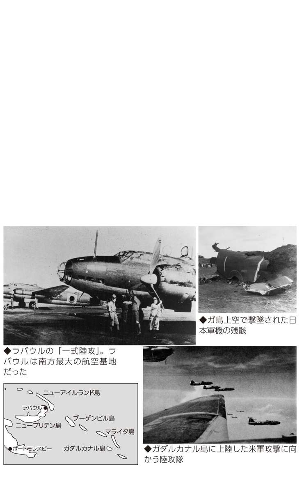
陸上攻撃機６
レンネル島沖航空戦であげた陸攻隊最後の凱歌
ガ島撤退作戦を可能にした陸攻の米艦隊攻撃
ガダルカナル島攻防戦当初は、ラバウルしかなかった陸攻の基地も、一九四二年（昭和十七）末までにはブーゲンビル島のブインと、その南方のブカ、バラレ基地が使用可能となり、さらに小型機はガ島から約三〇〇キロのニュージョージア島ムンダ飛行場も使用できた。しかし、同年十二月三十一日、大本営は御前会議でガ島からの撤退を決定した。
一月二十九日、ラバウル、バラレなどから発進した陸攻機がガ島付近を哨戒中、レンネル島東方沖で、輸送船四隻と重巡「シカゴ」「ウイチタ」「ルイスビル」などからなる米艦隊を発見した。
午後三時半すぎにラバウルから、夜間攻撃に熟練した第七〇五航空隊（旧三沢空）の一式陸攻一六機と、続いて第七〇一航空隊（旧美幌空）の九六式陸攻一六機がいずれも雷装で出撃した。まず七〇五空が夕暮れどきに攻撃したが、米艦隊の対空砲火により一機を失い、雷撃もすべて回避された。
日没後に七〇一空の一五機（故障で一機引き返す）が、吊光弾の明かりに導かれて米艦隊に殺到した。陸攻隊は二機を失ったが、「ルイスビル」「ウイチタ」に一本ずつ魚雷を命中させた。しかし、いずれも不発だった。だが、直後に「シカゴ」に二本が命中し、「シカゴ」は航行不能に陥った。
翌日には第七五一航空隊（旧鹿屋空）の一式陸攻一一機が、曳航される「シカゴ」に殺到して、四本の魚雷を命中させて沈めたが、対空砲火と、直衛の米空母機によって七機を失った。
このレンネル島沖海戦で、ガ島周辺の米艦隊は一時的に一掃され、翌月からの撤退作戦の成功につながった。しかし、陸攻隊はその後の戦いで消耗を続けたため熟練搭乗員の多くを失い、この海戦のような勝利は二度と得ることができなかった。
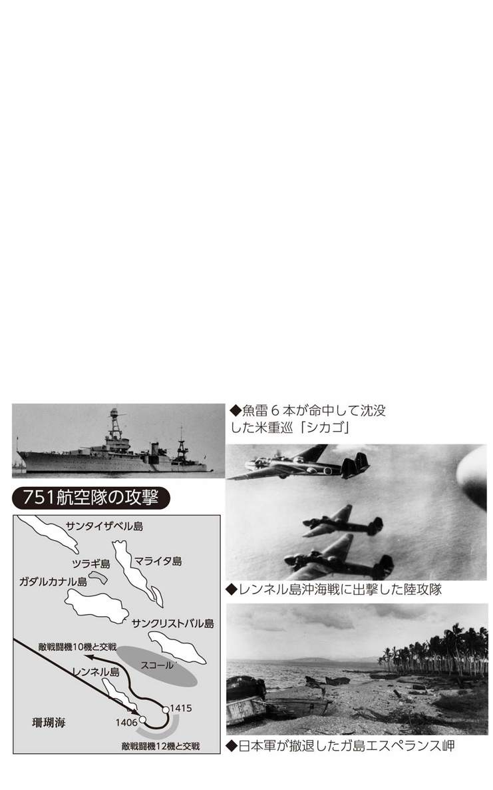
陸上攻撃機７
戦闘機掩護なし...中部太平洋での陸攻隊火だるま攻撃
ギルバート諸島沖航空戦、マーシャル諸島沖航空戦の敢闘もむなしく...
一九四三年（昭和十八）十一月にギルバート諸島、マーシャル諸島は米軍の激しい空襲にさらされた。当時、マーシャル諸島方面には第七五五航空隊の陸攻四〇機、第二五二航空隊の零戦四六機、第八〇二航空隊の飛行艇五機が展開していたが、北東方面（北海道、樺太、千島列島など）から第二四航空戦隊の七五二空（陸攻）、五三一空（艦爆）、二八一空（飛行艇）を進出させた。
十一月二十一日、米軍がギルバート諸島のタラワ島、マキン島に上陸を開始すると、マーシャル諸島から七五五空の一式陸攻一四機が出撃、さらに二十六日、二十七日、二十九日と、のべ五三機の一式陸攻が米機動部隊攻撃を実施して、空母八隻を撃沈などと報告された。しかし、実際に沈没した艦船はなく、軽空母一隻が損傷しただけだった。
陸攻隊は四次にわたるギルバート諸島沖航空戦で一五機を失うが、そのなかには被弾後に米艦艇に突入を試みるものもあった。しかし、猛烈な対空砲火に遮られて体当たりはできなかった。攻撃の主力となった七五五空は激しく消耗し、マリアナ諸島に後退して回復を図らねばならなかった。
十二月五日には米機動部隊に対して、五三一空の「天山」艦攻六機と、七五二空の一式陸攻一七機が出撃（マーシャル諸島沖海戦）したが、「天山」隊は全滅、陸攻二機を失って、米空母を損傷しただけにとどまった（空母一隻、巡洋艦二隻撃沈と報告）。
翌年一月末に米機動部隊はマーシャル諸島を空襲し、トラックに退避した陸攻九機を除いてほぼ全滅した。
二月一日には米軍がクェゼリン、ルオットに上陸を開始、連合艦隊は搭乗員だけでも救出しようとしたが果たせず、搭乗員、整備員などの多くは地上で米軍と戦って戦死した。
陸上攻撃機８
奮戦するもほとんど戦果をあげられなくなった陸攻隊
「あ」号作戦、ビアク島攻撃、台湾沖航空戦、比島決戦...
太平洋戦争緒戦で活躍した陸攻隊も、ガダルカナル島攻防戦以降は損害が目立ってきた。陸攻そのものが防弾を無視した設計であったため、被弾即炎上して墜落するケースが多かったが、ベテラン搭乗員の活躍により損害以上の戦果をあげていた。しかし、激戦が続きベテラン搭乗員の喪失も多く、また、陸攻隊の長距離攻撃や夜間攻撃では護衛戦闘機が随伴できなかったのに対して、米軍の戦闘機、対空火器による迎撃システムが整えられてくると、損害が大きくなった。
日本軍は米軍の進攻に備えてマリアナ諸島、パラオ諸島、フィリピンなどに航空隊を集めていた。一九四四年（昭和十九）五月二十七日、米軍が西部ニューギニアのビアク島に上陸した際、六月五日にミンダナオ島から七三二空と七五三空の陸攻三機が、西部ニューギニアおよびビアク島を夜間攻撃し、奇襲により多数の米軍機を破壊している。
六月十五日の米軍のサイパン上陸と前後して行なわれた米機動部隊の空襲により、中部太平洋各地の日本軍機は地上で撃破され、あるいは米艦隊の対空砲火で撃ち落とされて、ほとんど戦果をあげられなかった。
十月十二日〜十六日にかけての台湾沖航空戦では、台湾、フィリピンから「一式陸攻」や「銀河」、陸軍の爆撃機などのべ八〇九機が出撃、未帰還三一二機を出したものの、空母一一隻、戦艦二隻、巡洋艦三隻他を轟撃沈したと発表した。しかし、実際には空母二隻を含む七隻の艦艇を損傷させただけだった。その後、フィリピン決戦ではレイテ島への艦船攻撃、飛行場爆撃などに陸攻隊が出撃したが、フィリピンの戦い以降、海軍の航空作戦の中心は特攻＝体当たりへと移っていったのである。
陸上攻撃機９
人間ロケット「桜花」を吊るして出撃した一式陸攻
その名も神雷部隊、特攻機と運命を共にした壮絶な陸攻の最期
日本初のロケット推進による航空機が、特攻＝体当たり兵器として開発された「桜花」である。組織的な特攻が行なわれる以前の一九四四年（昭和十九）八月から開発が進められた。ロケット推進機といっても、火薬ロケットの燃焼時間は約九秒で、自力で離陸する能力もなかった。そのため、敵前まで「桜花」を運ぶ母機が必要となり、「一式陸攻」が改造され「桜花」を搭載できる二四型丁と呼ばれる機体が造られた。さらに、十月一日には「桜花」特攻の専門部隊として第七二一航空隊が創設された。
「桜花」隊は神雷部隊と呼ばれ、指揮官には陸攻隊で華々しい実績を残していた野中五郎少佐が選ばれた。しかし、野中少佐は「おれはもともと特攻など好きではない。おれでなければ隊長が務まらないというから、迷惑千万だったが、受けたまでだ」と部下には語っていたという。
野中少佐に率いられた神雷部隊は、連日、熱のこもった訓練に明け暮れたが、指揮官として野中少佐は、「この槍（「桜花」）、つかい難し」と冷静に分析していた。理由は「一回二トンもの桜花を搭載すれば、一式陸攻のスピードは落ちるし、運動も不自由になり、投下点に到達する前に、敵戦闘機に撃墜される公算が大だ」というものであった。そして「われわれがいままでどおり、夜間雷撃をやるほうが戦果があがる」と、成算の少ない特攻出撃に疑問を呈していたのである。
一九四五年（昭和二十）三月二十一日、鹿児島の鹿屋基地から野中少佐率いる神雷部隊の一式陸攻一八機が、沖縄沖の米艦隊に向かって出撃したが、午後二時二〇分頃、目標の手前約九〇キロで米戦闘機の迎撃を受けて全滅した。戦死した野中少佐は二階級特進して大佐となっている。
陸上攻撃機10
沖縄戦でも休みなく飛び続けた陸攻の涙ぐましい敢闘
敵艦雷撃、基地爆撃、友軍への物資投下など多彩な作戦を終戦まで展開
航空機による体当たり攻撃＝特攻がピークとなったのは、米軍の沖縄進攻が開始された一九四五年（昭和二十）三月から六月にかけてであった。
南九州鹿屋（海軍）や知覧（陸軍）、台湾の陸海軍飛行場からは、連日のように特攻機が出撃していった。しかし、沖縄に上陸した米軍や周辺海域の米艦隊に対する攻撃は、特攻だけではなく、通常の攻撃も連日行なわれた。
陸攻の特攻出撃は、第七二一航空隊の神雷部隊による「桜花」特攻だけだが、他に沖縄本島周辺海域の米艦隊に対する夜間または薄暮攻撃などによく使用された。また、四月五日には北飛行場沖、十一日には中城湾への機雷投下にも出撃した。
沖縄本島に米軍が上陸した四月一日以降は、飛行場に対する、主に夜間爆撃を実施したが、五月二日には陸攻九機が、夜間戦闘機八機、水上偵察機「瑞雲」四機とともに米軍の物資集積場に対する夜間爆撃を行ない、「北飛行場炎上」との戦果を報告している。
また、喜界島の日本軍に対する物資投下も陸攻により実施されている。まず五月五日、陸攻二機と陸軍重爆一機により投下が実施され、その後、六月九日にも行なわれた。さらに五月十六日深夜には九六式陸攻一機が喜界島に強行着陸して、不時着した海軍搭乗員二名、陸軍搭乗員一二名を収容する作戦を実施した（ただし離陸後自爆した）。
六月十八日、沖縄の日本軍守備隊首脳が自決して地上戦での組織的な抵抗は終わったが、九州、台湾からの航空攻撃は続けられた。陸攻隊も飛行場への夜間攻撃を実施したが、他に長大な航続力を生かして米艦隊の哨戒、索敵などを終戦に至るまで行なっていたのだ。
陸上攻撃機11
なんでもできる夢の軍用機？「銀河」
戦闘機の速度、陸攻の航続距離、雷撃も急降下爆撃も...
日本海軍の中型爆撃機「銀河」は、太平洋戦争が始まる前に、〝夢の軍用機〟という理想のもとに開発が開始され、太平洋戦争がほとんど敗勢になった頃、量産化に入った爆撃機兼雷撃機だった。
その夢とは、「将来の洋上戦のために、一トンの爆撃を搭載し、航続距離が三〇〇〇浬（約五五五六キロ）、爆撃や雷撃に加えて急降下爆撃もできる飛行機」であったという。
一九四〇年（昭和十五）末、まず日本海軍航空技術廠（空技廠）で開発を開始したのは、空技廠がすぐにつかえる飛行機だけでなく、将来に備えた高性能機の研究にも携わっていたからである。
アメリカはすでに航続距離五〇〇〇キロの重爆撃機の開発に着手していたから、世界水準からみて驚くほどの〝夢〟というわけではなかった。しかし、Ｂ29が爆撃という単純な目標を追求したのに対して、銀河は一機でなんでもやれる、という気の多い飛行機開発となった。
夢の飛行機追求は、ついには戦闘機タイプの「銀河二一型」開発となり（銀河二一型）、さらにエンジンを「誉」（中島飛行機製作）から「火星」（三菱重工業）に替えた「極光」の完成に至る。「極光」はＢ29迎撃機として大きな期待が寄せられたが、結局は成功しなかった。スピード、上昇力とも不十分であることが試作段階からはっきりしたからだ。結局「極光」は最初の発想に戻って、爆撃機型「銀河一六型」として改装されたのだった。
実際には銀河は一〇〇〇機も生産されたのだから、失敗作ではなかった。しかし、開発のスタートから互いに反する性能を実現しようとしたツケは、完成を遅らせ、現実の生産ラインの能力を無視した製造法となり、不良品が多く出る結果ともなった。
陸上攻撃機12
特攻時代に生まれた「銀河」の不運
初陣の台湾沖航空戦後、残された用途は特攻作戦しか見当たらなかった
「銀河」の初陣は台湾沖航空戦（一九四四年＝昭和十九年十月十二日〜十六日）である。空母一七隻を含むアメリカ海軍の高速空母機動部隊が台湾沖に現われ、沖縄県那覇市や台湾の主要都市に大空襲をかけたのに反発した日本陸海軍合同の大がかりな航空攻撃だった。銀河は採用直後で、整備員教育も始まっていなかったので、メーカー（主として中島飛行機）の技術者が基地に出張し、つきっきりで整備した。
台湾沖航空戦は、大本営発表とはまったく逆の戦果ゼロ、味方機の喪失三一二機という完敗だった。しかし大本営は、空母一九隻（現実に存在した隻数より二隻多い）を撃沈破、要するにアメリカ空母艦隊を全滅させたと発表していた。
続くレイテ海戦（全体の一連の作戦名は捷号作戦）では、戦艦や重巡洋艦など一〇隻以上も撃沈され、海軍航空隊は体当たり特攻を開始した。アメリカの空母機は一〇〇〇機前後もあり、日本軍はゼロに等しかったからだ。
こうなっては銀河だけが特攻出撃を回避できるわけがない。一九四五年三月十一日、鹿児島県鹿屋基地を出撃した銀河二四機はアメリカ艦隊泊地の西カロリン諸島ウルシーへ向かい、到達した一六機が体当たりなど特攻攻撃を実施した。さらに五月七日、銀河一九機（予定では二四機、故障で五機離陸できず）がウルシーへ特攻出撃した。しかし、途中で全機が引き返したが三機が行方不明となった。
鹿屋〜ウルシー間は一三六〇浬（約二五一八キロ）もあり、性能的には限界ギリギリの距離だった。
その後に始まった沖縄特攻でも、八七機が体当たりして果てたと推定されている。
艦上攻撃機・艦上爆撃機１
空母部隊の攻撃機「九七艦攻」と「九九艦爆」の実力
それまでの複葉機から一気にスマートな単葉高性
太平洋戦争開戦時、日本海軍の空母に搭載されていた主力雷撃機が「九七式艦上攻撃機」（中島製）、急降下爆撃機が「九九式艦上爆撃機」である。
雷撃や急降下爆撃以外の用途もこなせるため、それぞれ艦攻や艦爆と呼ばれた。制式採用となったのは九七艦攻が一九三七年（昭和十二）十一月、九九艦爆が一九三九年十二月である。
それまで海軍が使用していた艦攻や艦爆は、主翼が二枚ある複葉機だったが、九七艦攻も九九艦爆も、同種の制式機としては初めての単葉機だった。とくに九七艦攻は、国産単発機では初めての引込脚を採用していた。
性能も優れており、九九艦爆はそれまでの九六艦爆に比べて時速約八〇キロ、九七艦攻は九六艦攻に比べて時速約一〇〇キロもスピードが出た。
一九四一年（昭和十六）十二月の真珠湾攻撃では六隻の空母から三五〇機が出撃しているが、そのうち九七艦攻が一四三機、九九艦爆が一二九機だった。
艦攻は八〇〇キロ爆弾一発および二五〇キロ爆弾二発（または二五〇キロ爆弾一発、六〇キロ爆弾六発）を搭載した水平爆撃隊一〇三機と、九一式航空魚雷を装備した雷撃隊四〇機に分けられた。九九艦爆はすべて二五〇キロ爆弾である。
戦場に真っ先に飛び込んだのは雷撃隊で、戦艦四隻を含む六隻の艦艇を雷撃し、魚雷三六本を命中させた（米側資料では二三本程度）。なお、艦艇攻撃の命中率は水平爆撃隊が二六・五パーセント、急降下爆撃隊が四七・七パーセント（いずれも日本側の戦果判定）だった。雷撃隊の数字が際立っているが、一九四二年四月のインド洋作戦では、空母部隊の九九艦爆は英艦艇を攻撃、八二〜八八パーセントという驚異的な命中率を叩き出している。
艦上攻撃機・艦上爆撃機２
九七・九九に代わる「天山」「彗星」の遅すぎた登場
「天山」は航続距離が伸び、「彗星」は戦闘機なみのスピードを誇ったが...
真珠湾奇襲（一九四一年＝昭和十六年十二月八日）から南太平洋海戦（一九四二年十月二十六日）までの空母機で、艦攻（艦上攻撃機。航空魚雷を発射する雷撃と三〇〇〇メートル前後から爆弾を投下する水平爆撃を行なう）は「九七艦攻」、艦爆（急降下爆撃を行なう）は「九九艦爆」であった。
南太平洋海戦から一年八カ月後に行なわれた久しぶりの日米空母対決、マリアナ沖海戦（一九四四年六月十九〜二十日）には、合計四三九機のなかに「天山」が六八機、「彗星」が八一機参加した。九七艦攻一八機や九九艦爆三八機も参加したが、艦攻・艦爆は完全に新旧交替していたことがよくわかる。
天山の特徴は九七艦攻よりも航続距離が七〇〇キロ以上も伸びて、一七四七キロになっていたことである。これはエンジンを一八五〇馬力の「火星」に替えた（九七艦攻は一〇〇〇馬力）からだ。
彗星の特徴は九九艦爆に比べて最高速度が一五二キロも速く五八〇キロになったことである。エンジンの出力は一〇〇馬力アップの一四〇〇馬力だったが、それでいて航続距離も四一三キロアップの一四六三キロとなっていた。
天山や彗星がともに大きくスピードと航続距離を伸ばしたので、第一機動艦隊を率いた小沢治三郎中将は、安心してアメリカ空母艦隊に対して十分にアウトレンジし、攻撃機を出撃させることができた。
もちろん、「日本の完敗」という結果が示しているように、日本空母部隊はどんなに脚が長い飛行機をもっていようが、相手をどんなにアウトレンジしようが、総合力でまったく勝てなくなっていたのだが、それがよくわかったのは戦後になってからだ。天山も彗星も、この海戦のあとは陸上基地から発進して特攻機として出撃した。
水上偵察機
「水偵」という名の〝なんでも屋〟を一七〇〇機も生産
哨戒、偵察、連絡、観測......なんでもこなし、潜水艦も撃沈した
「水偵」は「海軍水上偵察機」の略である。水上というのは海面から飛び立ち、海面に着水するという意味である。だから写真で見るようにフロート（浮舟）をつけていたが、海軍内では〝下駄履き〟と呼んだ。
太平洋戦争に参加した水偵では「零式水上偵察機」と「瑞雲」が代表的なものだった。零式水偵は一四二三機生産され、「瑞雲」は二五六機生産された。
水偵の任務はその名のとおり敵情偵察であるが、そのほか哨戒、観測、基地間の連絡などさまざまな任務もこなしていたのである。ソロモン海域やシンガポール、マニラなど、広範囲に及んだ占領地に設けられた水上基地に派遣されたほか、国内の主要な軍港にも必ず水上基地が設けられ、敵艦の動向の監視にあたっていた。
本土近辺の敵艦のうち、最も警戒しなければならないのは潜水艦だった。一九四三年（昭和十八）にもなると東京湾口はもちろん、主要な軍港や港湾の入口まで侵入して、湾を出てくる日本の艦艇や輸送船を待ち伏せしたからである。
一九四三年九月二十日、下関〜釜山の連絡船「崑崙丸」など五隻が撃沈され六九六名が死亡したが、これは日本海に侵入した米潜水艦の仕業だった。それから二〇日ほどたった十月十一日、大湊航空隊稚内派遣隊の零式水偵が宗谷海峡を潜航通過中の潜水艦を発見、ただちに攻撃した。攻撃は約四時間続き、潜水艦の撃沈を確認した。戦後の調査で「ワフー」というガトー級潜水艦だった。
この攻撃で、ある水偵は現場と水上基地を五回往復して、爆雷を積み替えては攻撃した。宗谷岬には「ワフー」戦死者八〇名と「ワフー」による犠牲者を慰霊する、日米合同の「平和の碑」が建っている。
飛行艇
真珠湾も爆撃した世界最高の性能を誇った飛行艇
四発飛行艇の最高傑作「二式大艇」は爆撃、哨戒、偵察、輸送に大活躍
兵庫県鳴尾に本工場がある川西航空機は、優秀な練習機や水上偵察機、飛行艇のメーカとして知られていたが、なかでも局地戦闘機「紫電改」と並んで傑作機として名高いのが、一九四二年（昭和十七）二月に制式採用された「二式大艇」である。正しくは「二式飛行艇」というが、開発時の（十三試）大型飛行艇＝大艇という名称が採用後も使われた。
時速四五〇キロを超えるスピード、七〇〇〇キロ近い航続力、魚雷二本または最大二トンの爆弾を搭載でき、二〇ミリ機銃を含む強力な武装など、群を抜く性能を有した。戦後、アメリカ軍による詳細なテストが行なわれたが、その結果、同種の米飛行艇よりも優れていると絶賛された。
飛行艇は主に長距離哨戒や偵察を任務とするが、二式大艇は哨戒や偵察以外にも連絡、輸送などに使用され、大艇を改造した二式輸送飛行艇「晴空」も造られている。また、爆撃にも使用されて、一九四二年三月四日には横浜空の二式大艇二機が真珠湾を空襲している。さらに、強力な武装で、零戦でも撃墜することが難しかったＢ17爆撃機を撃ち落としたこともある。
一九四四年春以降、制海権・制空権を奪われて孤立した離島からの航空基地要員の撤収作業にもつかわれ、ラバウルほかから約六〇〇名のパイロットらを救出したという。また、同年三月三十一日、古賀峯一連合艦隊司令長官一行がパラオからダバオに退避する際に使用したのも二式大艇だった。ただし、長官機は荒天下で消息を絶っている。
二式大艇は試作機も含めて一六七機製造されているが、長距離の作戦などでは常に先頭に立って偵察、誘導などに当たっていたため消耗も激しく、終戦までにほとんどの機体が失われた。
幻の決戦航空機１
日本初のロケット戦闘機「秋水」とジェット戦闘機「橘花」
ドイツからの供与技術をベースに完成させたが...
日本海軍は敗戦直前に、ジェット戦闘機を完成寸前まで開発していた。それが「秋水」である。とはいえ、日本独自の技術ではなく、ドイツから供与された技術だった。太平洋戦争中、日本はヒトラーのナチス・ドイツと軍事同盟を結んでおり、共同作戦こそとれなかったものの、わずかばかりの技術交流があった。
ジェット戦闘機やロケット戦闘機の技術資料は「伊号第29潜水艦」がもたらしたが、それからわずか半年足らずの一九四四年（昭和十九）十二月、ジェットエンジン、ロケットエンジン共用の戦闘機「秋水」を完成させた（といっても機体だけ）。
肝心のロケットエンジンが完成したのは翌四五年六月だった。過酸化水素と水化ヒドラジン＋エタノールの二種類の液体を混合した際の化学反応を用いる方式だったから、日本科学技術陣も初体験だったのである。
ともかく、完成したエンジンを搭載して試験飛行が行なわれたのが七月七日。離陸には成功したが、飛行中にエンジンが停止して墜落、テストパイロット（犬塚豊彦大尉）は殉職した。二回目のテスト飛行が行なわれる前に終戦となった。
また、ドイツのジェット戦闘機「Ｍｅ ２６２」の技術資料がもたらされる前に、日本海軍は「ジェットエンジンＴＲ10」を開発していた。とはいえ、試作品で実用化の段階ではなかった。そういうところへＭｅ ２６２の技術資料が到来したのである。
一九四四年七月、試作が改めて始められた。戦局はすでに絶対国防圏内のサイパンが陥落するなど前途に希望を見出せない事態になっていた。完成した「橘花」は、最大時速六九六キロ、高度一万メートルまで二六分で上昇、実用上昇限度一万二〇〇〇メートル、八〇〇キロ爆弾搭載...などの性能を備えたとされる。
テスト飛行は一九四五年八月七日、ちょうど広島に原爆が投下された翌日だった。約一五分間の飛行に成功。八月十一日に正式飛行テストが行なわれた。残念ながら離陸に失敗、滑走路をオーバーランして機体は破損した。
幻の決戦航空機２
超大型爆撃機「富嶽」、攻撃機「晴嵐」の挫折
アメリカに一撃を与えるために開発されたが...
「富嶽」は富士山の意味である。その名を冠した超大型爆撃機の開発が進行していたのは、一九四二年（昭和十八）九月から四四年七月にかけてであった。中島飛行機社長の中島知久平が計画し、陸海軍首脳を説得して共同計画としてスタートさせたもの。結論からいえば設計段階で開発中止となったが、実現していれば日本を焦土と化した「ボーイングＢ29」よりも「最大爆弾搭載量は二・二倍以上、最大速度は約一・二〜一・三五倍、航続距離は約三倍」も上回る爆撃機になるはずだった。
中島が陸海軍首脳に「富嶽」開発構想を打診したとき、海軍側は高度一万五〇〇〇メートルで軽装備を要望し、陸軍側は高度一万メートルで重装備を要求したという。いくら航続距離を増やしても、日本列島から飛び立ってアメリカ本土を爆撃することはできない。いったい、なんのためにこのような大型爆撃機を開発しようとしたのか不明だ。
「富嶽」開発は一九四四年七月に中止されたが、この時期にはマリアナ沖海戦に完敗し、絶対国防圏の東の鎖ともいうべきサイパンが陥落したのである。
また、太平洋戦争の開戦直後、日本海軍はある大きな攻撃目標を定めた。パナマ運河の破壊である。アメリカ海軍はパナマ運河を通れなければ、太平洋と大西洋との往復がきわめて不自由となり、戦力ががた落ちになると考えたのだ。そのための特殊な攻撃機と、それを積み込んでパナマ運河の近くまで運ぶ巨大な潜水艦を造ろうと計画した。潜水艦一隻に攻撃機三機を積むとして、潜水艦を一八隻造れば、空母一隻分の五四機の攻撃機を運ぶことができる。潜水艦だから敵に発見されず、いわば海底空母艦隊の創設だった。
攻撃機の「晴嵐」は一九四三年（昭和十八）十一月に試作機ができ、四四年から四五年にかけて約二〇機が完成した。一九四四年十二月、四五年一月に相次いで排水量三五三〇トンという巨大潜水艦「伊号第４００潜水艦」、同「４０１潜水艦」が完成した。しかし、ときはすでに破れかぶれの特攻に移っていた。二隻は「晴嵐」を積んで、米艦隊泊地ウルシー攻撃に向かったが、たどり着く前に終戦の報が届いた。

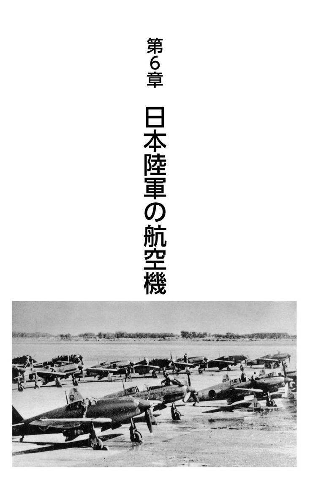
隼の光と陰
開戦にやっと間に合った「隼」戦闘機の実力と評判
最終的には五七〇〇機を生産した陸軍航空の主力戦闘機
太平洋戦争の代表的戦闘機としては、海軍航空隊が「零戦」（ゼロ戦とも）なら、陸軍航空隊は「隼」だった。零戦が一万機以上生産され、隼は五七〇〇機以上生産された。同一機種で一位と二位を占める生産機数だった。
隼は正式には「一式戦闘機」と呼ばれたように、皇紀二六〇一年（一九四一年＝昭和十六年）、すなわち太平洋戦争が始まった年に採用され、開戦時にはわずか四〇機しかなかった。
隼は中島飛行機に発注されたが、それは九七戦（九七式戦闘機）という優秀な戦闘機を造った実績があったからだ。陸軍は中島に戦闘能力は九七戦程度でよいから、スピード（最大時速五〇〇キロ以上）と航続距離（行動半径八〇〇キロ以上）を上げてくれと要求した。このため一〇〇〇馬力級のエンジンを搭載し（九七戦は七一〇馬力）、空戦時には蝶型空戦フラップ（下げ翼）をつかい、スピードも行動半径も空戦能力も九七戦を上回る戦闘機となった。
空戦能力で最も重視されるのは旋回能力である。敵機よりも素早く、宙返りや小さな円を描いての回り込みができるかどうかである。
隼はそれらをクリアした戦闘機だったが、初期には飛行中に主翼が折れる事故が相次ぎ、評判は芳しくなかった。主翼に機銃を装備できず、さらに一二・七ミリ機銃（零戦は二〇ミリ）が限度で、火力不足にも不満が残った。
イギリス軍が中心のマレー、シンガポール、ビルマ、オランダ軍が中心の蘭印（現インドネシア）攻略時は隼もずいぶん活躍したが、戦線がニューギニア、ソロモン方面に及ぶと隼には出番はなかった。隼が進出するにはどこかに飛行場が必要だったが、その建設が遅れたからである。
鍾馗と屠龍
昭和十七年採用の二種の戦闘機の主戦場
「鍾馗」は早々に本土防空部隊へ、「屠龍」も量産が遅れて本土防空戦に参加
「鍾馗」（二式単座戦闘機）も「屠龍」（二式複座戦闘機）も戦争に入った翌年（一九四二年＝昭和十七年）の早い時期に採用された。開発発注が「隼」とほとんど同じ時期で、採用までやはり四年ほどかかった。
同じ時期に三種の戦闘機開発を発注したのだから、当然、それぞれに特徴がなければおかしい。
●隼 スピードも巴戦など空中戦能力も、最高の性能。
●鍾馗 時速六〇〇キロ以上のスピードと速い上昇スピード。
●屠龍 爆撃機の長距離援護と地上攻撃。スピードは時速五四〇キロあればよいが、巡航速度三五〇キロで四時間半、時速五四〇キロで三時間半の航続距離（約一九〇〇キロ）。
鍾馗と屠龍は期待どおりの戦闘機だったのか。
鍾馗は隼より最大速度で五〇キロオーバーし、五〇〇〇メートルまで五三秒速い四分二六秒、八〇〇〇メートルまで一分二〇秒速い九分三七秒の上昇速度を示した。この性能を引っさげてビルマやマレーに配置されたが、東京へのドゥーリットル空襲（一九四二年＝昭和十七年四月十八日）を機に、本土防衛部隊に呼び戻された。以後、ほとんど内地にあり、Ｂ29重爆撃機による空襲が激しくなると、体当たりも辞さぬ果敢な攻撃をみせた。
屠龍が実戦配備についたときは、爆撃機で攻略すべきところは残っていなかった。量産が遅れたからだ。不本意ながらもラングーン（現ヤンゴン）、パレンバン、ハノイなどで防空任務についていたが、これらの部隊もやがて本土防衛部隊として新任務についた。一九四四年六月、中国奥地の成都から飛来したＢ29空襲部隊を迎撃したのは、飛行第四戦隊の屠龍部隊だった。
飛燕と疾風
昭和十八年、十九年に相次いで採用された戦闘機
ともに三〇〇〇機を超す生産で、「飛燕」は本土防空に、「疾風」は特攻に大活躍
陸軍は太平洋戦争期間中に五種類の戦闘機を採用した。「鍾馗」、「屠龍」に次いで、昭和十八年（一九四三）に三式戦闘機「飛燕」、十九年に四式戦闘機「疾風」、二十年に五式戦闘機（愛称なし）である。
飛燕の最高時速は五九〇キロ、改良を重ねて二〇ミリ機関砲を備え、日本軍では初の液冷エンジンを搭載した。ただ、制式採用となった昭和十八年八月という時期は、日本は戦局の大きな曲がり角に立たされていた頃である。とはいえ、当面の戦場はソロモン諸島や東部ニューギニアで、本土そのものは表面上は平和な時代だった。
その〝余裕〟をとらえて、エンジン故障、パーツ欠乏という難問に挑戦し、改良型を造った。時速は六一〇キロと六〇〇キロ台に乗り、大いに期待されたが、一〇〇機足らずしか量産できなかった。それでも最初のタイプが最終的には三〇〇〇機以上生産され、本土防衛に大いに活躍した。
疾風の開発は太平洋戦争が始まった直後に始められたが、鍾馗と隼を合わせたような戦闘機がねらいだった。一九四四年（昭和十九年）四月に完成し、採用された疾風は、期待に違わず最高速度六二四キロ、空戦能力も隼に匹敵し、しかも防弾にも工夫がこらしてあった。
しかし、疾風の初陣は特攻が始まったフィリピンで、戦闘機というより翼下に二五〇キロ爆弾を一個ずつ抱いて、敵艦船に体当たりすることだった。もっとも、日本からフィリピンに飛ぶまでが問題で、約半数は届かなかったという。
フィリピン特攻のあとは沖縄特攻と続き、ここでもフィリピン同様に一〇〇機以上が特攻出撃した。
飛燕も疾風も本来の戦闘機としての活躍場所は少なかったが、傾いた戦局のなかで誕生した運命だった。
飛燕と特攻
武装を外してＢ29を迎撃した「飛燕」の実力と悲惨
体当たりも辞せずと高度一万メートルへ舞い上がった飛燕の戦果
三式戦闘機「飛燕」の要目表には、実用上昇限度は一万一六〇〇メートルとなっている。これを見ると、高度一万メートルを悠々と飛来してくるＢ29に対しても、余裕ある攻撃ができたのではないかと想像できる。
しかし、実際には高度一万メートルでは戦闘は無理のようだった。経験者の体験録では「（八〇〇〇メートルの）高度になると......操縦反応もわるく、また舵のききがにぶい。まるで紺青の空にフワリと浮かんだ感じである」（竹田五郎「飛燕必殺戦法」『Ｂ29対陸軍戦闘隊』所収）というのだ。
それに、大気の温度は一〇〇〇メートル上昇するごとに約六度下がる。気圧も下がり、空気も希薄になる。Ｂ29の操縦席は完全気密室で平服でも平気だったが、飛燕の操縦席ではそうはいかなかった。
もともと一万メートルまで上昇するため、機関砲を減らし、弾数も四分の一に減らして軽くしたが、酸素ボンベを積む必要があった。それも故障がちで、六〇〇〇メートルあたりで息苦しくなった。寒さを防ぐため、電熱被服を着込んだが、それを使うと電圧が下がり、射撃ができなくなり、無線も聞こえなくなったらしい（首都防空隊の陸軍飛行第二四四戦隊長・小林昭彦「飛燕震天制空隊」『Ｂ29対陸軍戦闘隊』所収）。
東京・調布の二四四戦隊は東京防空の要だったが、武装した飛燕で体当たり特攻を一七回も敢行した。引用の小林戦隊長も体当たりして生還している（一九四五年一月二十七日）。高度九二〇〇メートル、追いすがっての胴体への体当たりだったので機体はバラバラとはならず、小林は意識を失い飛燕は錐もみして落下したが、三〇〇〇〜四〇〇〇メートルで意識回復、操縦して生還したのだった。
飛燕の後継機
五式戦闘機は「飛燕」の水冷エンジンを空冷にした改造機
陸軍最後の傑作戦闘機も四〇〇機足らずを生産して終戦を迎える
「三式戦闘機飛燕は液冷エンジンだったので、非常に故障が多かったが、製造元の川崎航空機が緊密に協力してくれたので、人員、器材、補修等の面において戦力の低下を補ってくれた」
前出の二四四戦隊長・小林昭彦は『飛燕震天制空隊』のなかでこう書いている。二四四戦隊の保有機は五〇機内外だったが、製造元の技術者がつきっきりで故障がちなエンジンを整備していたからこそ、連日のようにＢ29に対する迎撃ができたのだ。
飛燕の液冷エンジンは、ドイツのダイムラー製エンジンを国産化したものだが、日本の軍用機としては液冷式は珍しかった。
珍しくても故障がなければよかったが、結局、飛燕に空冷エンジンを積むことが企画され、五式戦闘機として完成した。
じつは五式戦闘機の前に、出力をアップした飛燕二型が造られたが、性能は上がらず、故障も多かった。機体も同時並行して生産されたが、結局、エンジンを搭載しないままの〝首なし飛燕〟が何百機もできてしまった。
やむなく〝首なし飛燕〟には空冷エンジン（ハ１１２Ⅱ）を搭載することになった。飛燕の胴体幅は八四センチしかないので、外径が一二一・八センチのハ１１２Ⅱエンジンを搭載するため、エンジンの真後ろに大きなフィレット（整形用の張り出し部分）を設け、機体も大きく改造した。
こうして〝首なし飛燕〟は空冷エンジンを搭載した五式戦に変身したが、、総生産機数三九三機のうち二七五機が飛燕二型からの改造だった。五式の五は皇紀二六〇五年の一桁台の数字であり、この年八月十五日に終戦になったので、陸軍最後の傑作戦闘機も、そこで生産打ち切りとなったのである。
疾風１
「大東亜決戦機・疾風」は中国戦線からフィリピンへ進出
最高時速六五〇キロ超、火力・防弾装置も十分と米軍も評価
現在、太平洋戦争と呼んでいる戦争は、当時は、大東亜戦争と呼ばれていた。政府が命名した正式の戦争名である。東亜は東亜細亜のことで、日本・中国本土（万里の長城から南方の中国全域）・満州国（万里の長城から北方の中国。ここに日本は満州国という植民地をつくっていた）・朝鮮（当時は日本領）を指し、「大」をつけて現在の東南アジア一帯を含める広い範囲を指すことになった。そこに日本の覇権を確立しようとして始めたのが大東亜戦争である。
四式戦闘機「疾風」は一九四四年（昭和十九）半ばの採用だが、大東亜決戦機と呼ばれ、まず中国戦線に進出した（八月二十四日。飛行第二二戦隊の四〇機）。
大東亜戦争はもちろん日中戦争（当時の呼称は支那事変）も含めてそう呼んだのであり、中国相手との戦争だけでは、中国は日本に降伏しないことがはっきりしたので、米・英との戦争（これが狭義の太平洋戦争）に踏み切ったのである。
大東亜決戦機・疾風が進出したとき、中国駐屯の日本軍・支那派遣軍は大陸打通作戦（北京からハノイまで通じている鉄道が実際に運行されるようになるための大がかりな作戦）の真っ最中だったが、中国の制空権はすでにアメリカ陸軍航空隊に握られていた。そこへ殴り込んだのが疾風だった。
わずか四〇機やそこらで、中国の制空権を取り戻せるわけはなかった。
しかし、米軍機のパイロットはその性能に目を見張り、「最高時速は六五〇キロを超え、火力・防弾装置は十分である」と評価した。実際は時速六〇〇キロを少し出る程度だったが、二〇ミリ機関砲の強力火力、一二・七ミリ銃弾に耐える防弾タンクや座席後方の九ミリ防弾鋼板は真実だった。
疾風は燃えにくく、墜ちにくい戦闘機だったのだ。
疾風２
フィリピン、沖縄特攻に投入された「疾風」の運命
フィリピンに二〇〇機進出、沖縄で一〇〇機の特攻出撃
日本の占領地フィリピンのレイテ島にアメリカ軍が上陸したのは、一九四四年（昭和十九）十月二十日である。南方の主戦場はフィリピンに移った。
アメリカ軍のレイテ島上陸直前、六個飛行戦隊約二五〇機がフィリピンに進出しようとしたが、無事に到着したのは約半数、全機到着は飛行第五二戦隊（四〇機）だけだった。ここにも洋上飛行が苦手な陸軍航空の欠陥が現われていた。ただ、今回の場合は油漏れという、「疾風」特有の欠陥によるケースも無視できなかったという。
海軍航空もそうだったが、陸軍航空も、アメリカ軍上陸前の米空母艦載機による連続不断の強襲により、徹底的に叩かれた。アメリカ軍がレイテに上陸したときはほとんど半身不随となっており、やむなく海軍航空が零戦による米艦船への神風特攻（爆弾を積んだまま体当たり）を始めた。
陸軍特攻の場合はやや遅れて開始されたが、中心となったのは戦闘機では隼、爆撃機では九九式双襲撃機で、疾風は六個中隊（一個中隊は約一二機）送り込まれたものの、通常戦闘に従事した。だが、最後には一部は特攻にも出撃した。
しかし沖縄特攻になると、疾風も特攻出撃機が多くなった。この期間の戦闘機による特攻は陸軍特攻機数の七割近くに達する。多い順から並べると、
●高等練習機（九七式戦闘機） 二一三機
●隼（一式戦闘機） 一六六機
●疾風（四式戦闘機） 一一九機
●飛燕（三式戦闘機） 一〇一機
となっている（生田惇『陸軍航空攻撃隊史』）。
時速六〇〇キロを超す陸軍機は百式司令部偵察機しかなかったが、遅くても沖縄まで達する飛行機なら特攻に行かざるを得ない戦局だったのだ。
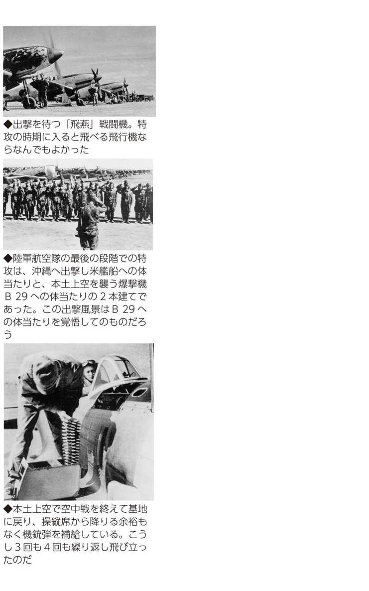
重爆撃機１
重爆撃機は「九七重」「呑龍」「飛龍」が主役
三機種合計三五〇〇機の主戦場は中国、マレー、ビルマなど
日本陸軍の重爆撃機は完成・採用された順にならべてみると、
●「九七重」（九七式重爆撃機） 皇紀二五九七年・西暦一九三七年 二〇六四機
●「呑龍」（一〇〇式重爆撃機） 皇紀二六〇〇年・西暦一九四〇年 六九六機
●「飛龍」（四式重爆撃機） 皇紀二六〇四年・西暦一九四四年 八一三機
が中心だった。合計で三五七三機製造された。
このうち最も実戦に投入されたのは九七重である。採用が日中戦争勃発の直前だったから、ある意味、この日のために開発された重爆撃機といってよく、二〇〇〇キロ（要目上は航続距離二七〇〇キロ）近い足を生かして中国各地を爆撃した。
九七重、呑龍、飛龍の順に、より大型となり、より航続距離が伸び、武装が強化されている。
日本陸軍は多年にわたり中国大陸の制覇と支配を目的としていたから、太平洋戦争が始まってからも中国はもちろんのこと、その地域と直接関係の深いマレー半島やシンガポール、ビルマ（現ミャンマー）の戦場で主導権を握って重爆撃機で制圧した。
イギリスは香港領有など中国に関する権益を最も多くもち、マレー半島やシンガポールも英植民地で、中国人が多く住んでいた。ビルマはアメリカの対中国援助物資の輸送路となっていた。
イギリスの勢力をこの一帯から駆逐することによって、英米頼みの蔣介石政権の抗日意欲が低下し、屈服するだろうと日本軍は考えたのである。その露払い役がこの三種の重爆撃機だった。
陸軍の重爆撃機は、たとえば米陸海軍航空隊との天王山ともなった、ガダルカナル島をめぐるソロモン海域での航空戦には、ほとんど参加しなかった。
重爆撃機２
機数最大の「九七式重爆撃機」は最後は特攻にも参加
自重六トン、搭載爆弾一トン、巡航二七〇〇キロの一流重爆
「九七式重爆撃機」は、名機とされている。
重爆撃機は図体も大きく、大馬力のエンジンを必要とするため、開発に時間と金がかかった。日中戦争勃発のとき（一九三七年＝昭和十二年七月七日）、陸軍航空の重爆撃機の主役はイタリアのフィアット製「イ式重爆撃機」（約一〇〇機を輸入していた）だったが、完成直後の九七重は、性能テストもそこそこに爆撃行に参加した。
戦争初期には海軍の九六陸攻（九六式陸上攻撃機）が九州から飛び立って東シナ海を飛行し、上海や南京などを直接爆撃したので、陸軍航空としては面子のうえからも負けてはいられなかったのである。
中国には日本海軍の連合艦隊に太刀打ちできるような海軍がなかったこともあって、中国との戦争はあくまでも陸軍が主役、という意識が強かった。
日中戦争では一年半で中国大陸の大半を占領下に置き、中国政府は険しい山岳に隔てられた四川省・重慶に退いたが、九七重は漢口（湖北省。現武漢市）や運城（山西省）などから山岳を越えて七、八〇〇キロ飛んで重慶やさらに奥地の蘭州、成都を爆撃した。
故障の少なかった九七重は、太平洋戦争に入ってからもマレー、シンガポール、ビルマなどの爆撃を敢行したが、ビルマ占領後はインドの各都市まで足を伸ばしている。
戦争末期、日本は追いつめられ、航空作戦も特攻しかなくなった。九七重は「義烈空挺隊」という特攻部隊を乗せ沖縄の読谷飛行場へ強行着陸した（一九四五年五月二十四日）。駐機の米軍機を破壊したあと、ゲリラ戦を戦う予定の部隊だが、一二機出撃、四機不時着、七機途中撃墜、一機着陸成功。しかし全員殺された。この特攻戦死者は一一五人だった。
重爆撃機３
紀元二六〇〇年に合わせて採用された「呑龍」
なぜかパイロットには評判が悪かった高性能機
一〇〇式重爆撃機「呑龍」は、皇紀二六〇〇年（西暦一九四〇年＝昭和十五年）の前年に完成した。陸軍が制式採用したのは二年後で、原則からいえば一式重爆撃機とすべきところだったが、おめでたい皇紀二六〇〇年の数字を冠して一〇〇式とした。海軍はこの年採用の兵器なら零式とするところだが、陸軍は一〇〇式と名づけた。
とにかく、神武天皇が即位した年を皇紀一年とした紀元暦による紀元二六〇〇年は、全国的に祝賀、祝賀の興奮状態だったのだ。
呑龍の特徴は、航続距離が長い（巡航で二四〇〇キロ）、戦闘機護衛なしを前提とした強力武装（初の二〇ミリ機関砲と尾部銃座の採用）である。
〝龍を呑む〟という勇ましいニックネームだが、実際は江戸初期、貧乏人の子弟を養育した心優しい浄土宗の僧の名前である。製造会社の中島飛行機の工場が群馬県太田市にあり、近くに〝子育て呑龍〟と呼ばれた大光院があったので、この名がつけられたようだ。気は優しくて力持ちのイメージがあったのだろう。
しかし、呑龍はパイロットからは評判がよくなかった。故障が多かったからだ。これは、エンジンをあまりにも小型化したからといわれ、要目どおりの馬力が出なかったことにもよる。
改良された二型は、故障はかなり減ったが、それでも絶対の信頼は得られなかったという。このあたりのニュアンスは、実際の操縦者でないとわかりにくいが、九七重に比べると、なんとなく使い勝手が悪かったそうだ。
そういうこともあって太平洋戦争初期でもあまり派手な戦歴は残っていない。戦争末期の特攻では、フィリピンで一〇機前後が出撃したとみられる。
重爆撃機４
「飛龍」が魚雷を抱いて出撃した台湾沖航空戦と特攻
もう爆撃する敵地がなくなった時期に量産に入った陸軍機の悲喜劇
日本海軍には「飛龍」という空母があったが、陸軍の「飛龍」は重爆撃機だった。四式重爆撃機「飛龍」の採用は一九四四年（昭和十九）初めである。
試作機の完成は一九四二年末だったが、それから一年以上たっての採用となった。当時、すでに陸軍の重爆撃機が爆撃するような要地はなく、攻撃するとすれば、既にその巨大な姿を現わし始めていたアメリカの新鋭高速空母群しかなかった。
そこで、飛龍には魚雷を積むことになった。航空魚雷による敵艦攻撃は海軍航空の専門であり、陸軍航空では予想もしなかった事態である。
飛龍の飛行第七戦隊と飛行第九八戦隊は、海軍の第五航空艦隊の指揮下に入り、服装も海軍式に改めて、第七六二海軍航空隊に編入された。
飛龍は重爆撃機とはいえ、運動性が非常によく軽爆撃機以上といわれ、時速六〇〇キロで急降下しても海軍の一式陸攻（一式陸上攻撃機。航空魚雷攻撃も水平爆撃もできる攻撃機）と遜色がないという特色を生かそうとしたのであろう。航空魚雷攻撃は急降下して低空を飛び、魚雷を発射するのである。
こうして海軍航空のなかで魚雷攻撃を学んだ飛龍部隊は、夜間の台湾沖航空戦（一九四四年十月十二〜十六日）に出撃した。そして、たとえば九八戦隊では空母二隻・戦艦一隻撃沈などと報告したが、もちろんこれは誤報である。日本側は米空母一九隻を撃沈または撃破と宣伝したが、実際には撃沈したアメリカ艦船は一隻もなかったことは有名な話である。
続く特攻作戦では、フィリピンにおける陸軍特攻最初の富嶽隊は飛龍編成であった。沖縄特攻の段階では、特攻専用機「四式重さくら弾」（強力な特殊爆弾を装着）二機出撃（一九四五年四月十七日）などの記録がある。
軽爆撃機
身軽で器用な「九九式軽爆撃機」は引っ張りだこ
五〇〇キロ爆弾を搭載し、オタマジャクシと冷やかされたが...
「九九双軽」といわれる「九九式軽爆撃機」は、陸軍航空を代表する爆撃機である。双は双発でプロペラが両翼に一個ずつついている。太平洋戦争の前年に採用となり一九七七機製造された。陸軍機としては九七式重爆撃機に次ぐ第二位の機数だった。
軽爆撃機だから搭載爆弾は五〇〇キロで、九七式重爆撃機の約半分だ。乗員も重爆の約半数、四人。
九九双軽を写真で見ると、胴体下面が主翼と尾翼のほぼ中間あたりで急に細くなっている。このため、「金魚の腹」とか「オタマジャクシ」などと冷やかし気味に呼ばれた。このスタイルになったのは、爆弾倉を広くとることと、後ろ下方の視界を広くするためだった。
九九双軽は、日中戦争から太平洋戦争の初期にかけて、さまざまな戦場で作戦に従事した。身軽で、性能が優れ、護衛戦闘機なしでも出撃し、たいして被害にあわなかった。そのうえ夜間爆撃もできるという器用さもあり、いわば引っ張りだこの爆撃機だったのである。
戦争末期、特攻の時代に入ったが、特攻用としてまっ先に改造されたのが、四式重とこの九九双軽だった。九九双軽には八〇〇キロ爆弾一個、飛龍には二発を搭載するように改造され、日本国内で飛龍の富嶽隊とともに万朶隊を編成し、フィリピンに進出した。
海軍のフィリピン特攻は、現地の零戦に二五〇キロ爆弾を積んでいきなり体当たりしたが、陸軍航空の特攻はこうした大がかりな改造から準備し、海軍特攻より早くから不気味な真剣さが漂っていた。
しかしながら、沖縄特攻では九九双軽の出撃はほとんどなかった。本土決戦用の特攻機として温存されたのであろう。
襲撃機
陸軍の必死さと技術力の限界を示した「キ１０２乙」
わずか二一五機の生産だったが、沖縄や台湾に進出した急降下爆撃機
「キ」はヒコウキのキである。１０２は、一九三二年（昭和七）以後の、陸軍航空機（機種を問わない）の開発着手番号である。乙は、キ１０２を二種類着手したので、キ102甲を戦闘機型、キ１０２乙を襲撃機型としたのである。襲撃機は海軍航空でいう急降下爆撃機に相当する。
要するに襲撃機は、飛行場の飛行機や、地上部隊を超低空で銃爆撃する飛行機である。攻撃目標が近づいたら急降下して、超低空で攻撃するわけだ。
キ１０２襲撃機は一九四四年（昭和十九）十月に登場したが、開発過程をみると、戦闘機「屠龍」を双発にしてみよう、それをさらにＢ29攻撃用に一万メートル上空でも戦える高高度戦闘機にしてみようとやっているうちに、どれも成功せず、なんとなく襲撃機に落ち着いた、という経緯が読みとれる。
たいして期待もかけられなかったのか、正式名称も与えられないまま量産に入り、それでも終戦までに二一五機も造ってしまったようだ。
一九四五年春あたりから、残された戦場の沖縄や台湾へ、一部はすでに勝負がついていたフィリピンへの進出が試みられ、勇躍出撃した。
しかし、レーダーなしでアメリカ空母艦載機の制空権内を飛んだのだから、ほとんど目的地へ到着しなかった。途中で撃墜されたのだった。
機首に五七ミリという大型機関砲を装備していても、すでに重装備というだけでは太刀打ちできない戦況に入っていたのだ。
キ１０２甲の高高度戦闘機の開発は、排気タービンの開発に失敗し実用化できなかった。
キ１０２乙襲撃機開発の歴史は、陸軍航空の必死さと、日本の技術力・工業力の限界を合わせて示している。
幻の戦闘機
間に合わなかった陸軍戦闘機の試作機群
高速、高高度、遠距離、防空など、多くの夢を追った戦闘機群
太平洋戦争は日本本土では硫黄島と沖縄しか地上戦はなかったが、「超空の要塞」Ｂ29重爆撃機による焼夷弾攻撃で、東京や大阪をはじめ主要都市が焼け野原とされてしまった。広島と長崎に原爆を投下したのもＢ29である。県庁所在地で空襲を受けなかったのは鳥取、金沢、札幌、新潟しかない。
アメリカで開発中のＢ29が一万メートル以上の高度を飛び、五〇〇〇キロの実用航続距離（爆弾も積まず、燃料を節約して飛ぶだけなら約一万キロ）をもつ恐るべき爆撃機だという情報は一九四三年（昭和十八）までにわかっていた。Ｂ29に関する情報は、断片的に欧米の新聞では報じられていたからだ。
そこで、高高度戦闘機の開発が陸軍航空の焦眉の急となった。高度一万メートル、操縦席は機密席（高度三〇〇〇メートルに相当）、最大速度五八〇キロという戦闘機を四機試作した（キ１０８試作高高度戦闘機）。実用化のためには排気タービンの改良が残されたが、工場がＢ29の爆撃を受け、試作機は三機まで破壊された。
特殊防空戦闘機も試作された。地上で使用している高射砲（八八式七五ミリ）を戦闘機に取りつけたものである。これなら三、四〇〇〇メートル離れて発射すればよく、Ｂ29そのものから発射される防御火砲を受けずにすむ。実際に二機まで試作機（キ１０９試作特殊防空戦闘機）ができたが、うまくいかなかったという。やはりここでも排気タービンの不良がネックになった。
海軍航空は終戦直前に「橘花」というジェット戦闘機を試作したが、陸軍は「火龍」というジェット戦闘機を造ろうとした。「橘花」と同様、ドイツのジェット機Ｍｅ２６２のコピー機だったが、設計段階で終戦を迎えた。
幻の特攻機
間に合わなくてよかった陸軍の恐るべき特攻機
竹槍の頭文字をとった「タ号」や離陸直後に車輪が外れる「剣」の悲しさ
陸軍航空は海軍航空よりも時期的にかなり早く、飛行機によるアメリカ艦船への体当たりを計画した。海軍航空は特殊な特攻兵器（たとえば「桜花」）をつくったが、陸軍航空は既存の飛行機を改造して特攻機に仕立てた。
たとえば「飛龍」（四式重爆撃機）や「九九双軽」（九九式軽爆撃機）は、最初は体当たりしないかぎり爆弾は投下されないように改造された。これでは途中で敵戦闘機に迎撃されても爆弾を捨てて逃避できないし、不時着してそれが体当たりに近い衝撃があれば機体もろとも爆発することになる。
とにかく陸軍航空の特攻機改造は、過激すぎる一面があった。そういう〝伝統〟を引きずっていたのか、末期には恐るべき特攻機が試作された。
日本国民はアメリカ軍が上陸してきたらこぞって竹槍を手に立ち向かうことになっていたが、その竹槍の頭文字をとった「タ号」は、エンジンを積んで飛べさえすればよいという簡単な構造をもった戦闘機で、全国のどんな軍需工場でも製造できる特殊攻撃機だった。
軍需省は、これを量産して多数の特攻機を飛ばそうとしたが、幸いにも試作機の段階で日本の降伏となった。
「剣」は飛行機としては「タ号」よりも少しましだったが、機体の大部分は木製だ。恐るべき最大の〝工夫〟は、離陸すると車輪が外れてしまうことだった。ゴムタイヤは貴重品だったからである。
だから、「剣」でいったん飛び立てば、どこにも着陸することができない。飛び立った瞬間が死そのものの特攻機だったのだ。これは一〇〇機ほど製造されたが、本土決戦の前に日本は降伏した。
偵察機
「一〇〇式司偵」と「彩雲」偵察機はどちらが上か
ビルマの通り魔「一〇〇式司偵」とグラマンをしのいだ「彩雲」
陸軍の「一〇〇式司偵」（司令部偵察機）は太平洋戦争の二年前に完成し、海軍の艦上偵察機「彩雲」は戦争に入ってから設計が始まり、開戦一年半後に完成した。
偵察機は、単機あるいは数機で敵の陣地深く進入してようすを探り、写真を撮るのが目的だから、簡単に捕まらないように、見つかったら素早く逃げられるような性能が必要だ。敵の戦闘機よりも高く飛び、よりスピードがなければならない。
一〇〇式司偵は時速六〇〇キロを超え、少しスピードは落ちても八〇〇〇メートルから一万メートルを飛ぶことができた。開戦後の約半年間は、矢継ぎ早に占領するところが多かったが、その水先案内役が一〇〇式司偵だったのだ。マレー、フィリピン、インドネシア、ビルマと防備が完全ではなかった連合国は一〇〇式司偵が現われると〝地獄の天使〟がやってきたと恐れたというが、「使者」ではなく「天使」と呼ばれたのは、機体が流麗だったからだ。
ビルマ（現ミャンマー）占領後、一〇〇式司偵は国境を越えてインド西部へも侵入したが、イギリス空軍の戦闘機とも太刀打ちできる攻撃力もあったので、「ビルマの通り魔」とも呼ばれたそうだ。
「彩雲」は空母に積むために開発した偵察機だったが、完成したときにはこれを載せる航空母艦がなかった。中部太平洋の島々を基地として偵察活動に従事したが、アメリカの高速空母機動部隊がサイパンに近寄りつつあるのを、早期に発見できなかったのだから、決定的瞬間に活躍しなかったわけである。
それでも「彩雲」は時速六〇〇キロを超え、米艦載機の決定版Ｆ６Ｆヘルキャット（最大時速は彩雲よりも少し速い）に追われて振り切ったこともある優秀機ではあった。
小銃
兵隊の銃「サンパチ」は明治三十八年採用の小銃
兵隊さんなら誰でも持っていた「三八式歩兵銃」は銃剣での戦いが期待された
歩兵部隊の兵隊が持っていた銃は俗に「サンパチ」といわれた。「三八式歩兵銃」だからだが、三八は明治三十八年（一九〇五年）採用の意味である。
太平洋戦争で使用された兵器は、ほとんどが二桁あるいは一桁の数字がかぶせられているが、明治三十二年から末年までに採用された兵器は、元号の数字をそのまま並べて表現した。
サンパチの原型は、ドイツのモーゼル銃である。銃身は約八〇センチ、重さは約四キロ、口径は六・五ミリ。三キロほどは飛んだというが、実戦では五〇メートルからせいぜい二、三〇〇メートルの間合いで撃った。銃身が長いから命中率は高かった。
しかし、六・五ミリ銃弾が命中しても、相手は即死するわけではない。採用に当たってそれでは兵器といえないではないかという議論もあったそうだ。
それでも、ものは考えようで負傷兵はもう戦力にはならないし、衛生兵が呼ばれるとか、後送の必要がでてくるとかの事態が起こるので、確実に敵陣営は戦力がそがれる、それでよいではないかということになったそうだ。
太平洋戦争に入ったとき、各国の歩兵銃はだいたい七・六ミリ以上になっていた。日本でも開戦二年前に口径七・七ミリの「九九式小銃」ができていた。その威力の差は、自動車のエンジンを撃つとサンパチなら小穴が開く程度、九九式ならパッと発火炎上するという違いがあった。
しかし、数百万人もの兵隊の銃を一挙に替えることは不可能だった。ほとんどの兵隊がサンパチを担いで戦場に出た。サンパチは銃口の先にごぼう剣（三〇式銃剣）を着けるようになっていた。白兵戦用の銃剣で、これで敵兵を突きまくる戦法が歩兵部隊に最も期待されていたのである。
機関銃
軽機（軽機関銃）と重機（重機関銃）は歩兵の守り神
軽機関銃に銃剣を装着したのは、さすがに日本軍だけ...
歩兵部隊は小銃だけで戦ったのではない。守り神は機関銃だった。
機関銃には重機（重機関銃）と軽機（軽機関銃）があった。読んで字の如く、重い機関銃と軽い機関銃だが、性能の違いをひと言でいえば、重機は途切れなく発射でき、軽機は途切れることだった。
重機の弾丸はベルト状の弾帯で給弾するが、その補助役として射撃手の左側に専門の弾丸込め手がついていた。軽機は弾倉（三〇発入り）を上からガチャンとはめて撃つ。撃ち尽くしたら取り替える。そのときに射撃が途切れた。
歩兵部隊は分隊（一三名）、小隊（五四名）、中隊（一八〇名）、大隊（八八一名）、連隊（三〇九二名）というのが戦時の標準だ。太平洋戦争で活躍した重機は「九二式重機関銃」（皇紀二五九二年＝一九三二年採用）で、一個大隊に四門ついた。重機をもっているのは機関銃中隊（四門）だから、一個大隊に一個機関銃中隊がつくという編成だ。ちなみに、九二式重機関銃はフランスのホチキス社系の兵器だ。文房具のホチキスに名をとどめている会社である。
軽機は一一年式軽機関銃（大正十一年＝一九二二年採用）と九六式機関銃（皇紀二五九六年＝一九三六年採用）、九九式機関銃（皇紀二五九九年＝一九三九年採用）が主流で、一個分隊に一挺ついた。軽機は一三名に一挺の割合だ。
重機は重かった。だから馬一頭で引いた。馬の世話役も二名必要で、重機を扱う兵隊は九人だった。それに比べると軽機は約九キロ、サンパチの二本分強の重さだから一人で持ち運びできた。
持ち運びどころか、近接戦では軽機の先にごぼう剣を着けて突撃まで行なった。軽機に銃剣を着けたのは、さすがに日本軍だけだったそうである。
軽砲
大隊砲は見るからにオモチャの大砲だが威力は十分
持ち運びに苦労したが「九二式歩兵砲」を手放さなかった歩兵部隊の執着
こちらの歩兵部隊が機関銃で武装すれば、相手も機関銃で武装するようになり、戦力は均衡する。すると、それを上回る武装でなんとか勝ちたいとなる。歩兵部隊が装備した「九二式歩兵砲」は、相手の機関銃を砲兵部隊の助けを借りずに撃ち破ろうとする計算が働いている。
写真でわかるように、大砲というには見るからにオモチャのようである。口径七〇ミリ。専門家は口径一一五ミリ以下の大砲を軽砲と呼んだが、九二式歩兵砲はまさしく軽砲である。
日本軍は、この軽砲を大隊に二門装備した。砲身も約八〇センチしかない。砲身の長さは飛距離と命中精度に関わる。砲身が長いほど遠くに飛び、命中率が高い。八〇センチの砲身ではあまり遠くには飛ばない（最大二八〇〇メートル。理論上は歩兵銃より射程が短い）。
九二式歩兵砲は、あまり大きな放物線を描くことなく飛ばす平射も、大きな放物線を描くように撃つ曲射も、どちらも可能だった。しかし、砲身が短すぎて平射では命中率が悪く、曲射で撃つ場合が多かった。曲射は敵陣地のほとんど真上から弾丸が落下する。命中しなくても広範囲に被害を与えることができたのだ。
見かけはオモチャだが、人力で運ぶには重すぎる。規定では馬一頭で引かせるか、分解して四頭の馬の背に積んで運ぶことになっていた。
中国戦線では概ねそうしたが、太平洋戦争では熱帯地方から亜寒帯地方まで戦場が無限に広がったので、いちいち馬を連れて行けなかった。結局は兵隊が引っぱるか、分解して兵隊が担いで運んだ。それを臂力搬送と難しい言葉で呼んだ。九二式歩兵砲は歩兵の主力兵器だったが、兵隊は苦労したのだ。
山砲
連隊砲「四一式山砲」は砲兵専門部隊のおさがりだった
歩兵部隊で重宝した、いざとなれば担いで運べる旧式大砲
ここでいう連隊は正しくいえば歩兵連隊のことである。太平洋戦争に入った頃、一個師団は三個か四個の歩兵連隊で編成されているのがふつうだった。師団にはそのほか専門の砲兵連隊や工兵連隊、輜重兵連隊（補給・運送の専門部隊）などがついていたが、基本は三個か四個の歩兵連隊である。規模は約二五〇〇名から三〇〇〇名。
その歩兵連隊に装備されていたのが「四一式山砲」である。山砲とは多少の高さの山なら急角度の放物線を描いて飛び越し、山の裏側の敵陣を直撃できる大砲のことである。
日露戦争時の陸軍の主戦場は、最初は中国東北地方（当時、満州と呼んでいた地方）だった。この地方はなだらかな丘陵はあるが高い山はなく、だいたいが平原である。だから、主力となった大砲は野砲だった。ゆるやかな放物線を描いてより遠くへ飛ばすことができる大砲だ。もちろん、この時期でも山砲はあったが、どちらかといえば野砲部隊が多かった。
四一式山砲は、日露戦争のあと砲兵部隊（山砲兵連隊）に装備され、実戦としては満州事変（一九三一年＝昭和六年。中国東北地方の全域を軍事占領した戦争）を戦った優秀な砲だった。しかし、この直後あたりから、新しい強力な山砲（九四式山砲）が開発され、四一式山砲は無用となった。
そこで、歩兵部隊の戦力を増加させるため、歩兵連隊に四門ずつ配給した。最大射程六キロもあるが、馬二頭で引けるし、いざとなれば六個のパーツに分解して兵隊が担いで運べる。
この、いざとなれば人力で運べるという点が、歩兵兵器としてはギリギリの大きさだったのだ。こうして連隊砲は、歩兵部隊の戦力アップにつながったのである。
野砲・山砲・榴弾砲・加農
太平洋戦争で日本軍が使用した主な大砲の種類
野戦で最も使用された大砲の特徴を見てみると...
とにかく大砲は陸軍部隊の主力である。大砲は戦場の女神とも、王様ともいわれる所以である。
日本軍は、約四億という人口を擁していた中国本土（万里の長城から南方の中国）を一九三七年（昭和十二）七月に攻め始めて、約一年半の間に面積の約半分（約一五二万平方キロ。占領地人口約一億七〇〇〇万）を占領した。それができたのも、中国軍には大砲が決定的に不足していたからである。
主としてアメリカ軍との戦争となった太平洋戦争では、立場が逆転した。南方戦線では攻略作戦でこそ、相手側の準備不足に助けられて、砲兵部隊の威力がモノを言ったが、アメリカ軍が本格的な反攻作戦に転じてからは、まったく手も足もでなかった。
アメリカは弾数が桁違いに多く、一発撃つと何十、何百発もお返しされ、「大砲はもう撃つな」と歩兵部隊からクギをさされるほどだった。
そんな戦場で日本軍が使用した主な大砲には次のようなものがあった。
口径㎜ 最大射程ｍ
九〇式野砲 七五 一万三〇〇〇
九四式山砲 七五 八三〇〇
四年式一五センチ榴弾砲 一四九 八八〇〇
三八式一五センチ榴弾砲 一四九 五八九〇
一〇五 一万八二〇〇
八九式一五センチ加農 一四九 一万八一〇〇
榴弾砲は、炸裂したら石榴のように小さな爆弾が飛び散るもの、加農は、爆発の威力で陣地や建物などを直接破壊するものである。
要塞砲
潜水艦と爆撃機相手では出番がなかった四一センチ砲
海峡ではなくソ満国境で火を噴いた〝無用の長物〟
要塞砲は、敵の艦隊が自国の海峡を無断で通過したり、湾に侵入するのを防ぐために、海峡や湾の入口が見下ろせる山の上に据えられていた。東京湾口、津軽海峡を見下ろす函館、関門海峡を守る下関などで、約二〇カ所あった。
しかし、太平洋戦争時では、いきなりアメリカ艦隊が本土海域に近づいて戦いを挑む、という事態はあり得なかった。そういう危険を犯さなくても潜水艦もあるし、爆撃機もある。
実際に米潜水艦は一九四三年（昭和十八）にも日本海に進入し、〝天皇の浴槽〟と安心しきっていた海域で、関釜連絡船（下関〜釜山）を撃沈したりした（九月二十日、「崑崙丸」撃沈、死者五五四名）。
そういうわけで、陸軍が要塞砲として四一センチ榴弾砲という巨砲を完成させ（大正末、一九二六年）、東京湾の富津に据えつけたものの、一〇年もしないうちに無用の長物と判断された。
この四一センチ榴弾砲は、太平洋戦争開戦まもなく、満州（中国東北地方、当時は満州国）東部のソ連との国境近い虎頭要塞に運ばれ、コンクリート製要塞内に設置された。
一九四五年（昭和二十）八月九日、ソ連軍は虎頭正面からも侵入を開始、四一センチ榴弾砲が唸りをあげた。しかし、コンクリート内での射撃だったため、轟音と爆風が耳をつんざき、近くの樹木はなぎ倒され、土煙で前方が見えなくなった。数発の射撃で砲手は身体がもたなくなったという。
それでもがんばって射撃を続け、ソ連軍進撃路の橋梁（ウスリー川に架かっていた）を爆破したが、怒濤の進撃を阻止することはできず、ついに虎頭守備隊は玉砕した（要塞にこもった民間人も含め約一四〇〇名）。
迫撃砲
日本軍が発明したが忘れられ、ヨーロッパ各国で発達
敵陣に真上から落下させる迫撃砲の代表は二式一二センチ迫撃砲、九七式軽迫撃砲など
太平洋戦争終結時、迫撃砲で武装した日本軍部隊は大小合わせて八〇個ほどあった。
迫撃砲は敵の陣地に、数百メートルと接近して発射する。だから、弾丸は極端に高く上がって敵陣地にほぼ垂直に落下する。弾丸の装着は、砲身の先端から落とすようにしてつめる。
もともとは日露戦争で旅順の要塞を攻めている最中に、最前線の部隊がとっさに工夫して手製で造った兵器だった。日本陸軍はその後忘れていたが、これを見ていたヨーロッパ各国で発達し、日本陸軍が逆輸入したという。
写真でもわかるように小型で、持ち運びが便利。どちらかというと歩兵部隊用の軽砲だが、歩兵部隊が用いた迫撃砲は曲射歩兵砲と呼ばれた。
太平洋戦争に参加した迫撃砲を、製造門数順に並べると、
二式一二センチ迫撃砲 約七五〇門
九七式軽迫撃砲 約六〇〇門
九四式軽迫撃砲 約四五〇門
九七式中迫撃砲 約一五〇門
九六式中迫撃砲 約九〇門
である。合計で約二〇〇〇門、これを大小八〇個の迫撃砲専門部隊に配分したわけである。
「二式一二センチ迫撃砲」は、太平洋戦中に増設された師団の砲兵隊に配分された。「九七式軽迫撃砲」は南方戦線（東南アジアの英米蘭の植民地を攻略占領）でもっぱら使用され、「九四式」は中国に派遣されていた部隊に配備された。
なかでも南方戦線でよく使用された二式一二センチ迫撃砲は、南方特有のジャングルでつかえるように間接照準とし、砲弾に翼をつけるといった工夫がこらされていた。
速射砲
戦車には戦車で対抗するのが効果的なのだが...
戦車を大量に造れない日本は速射砲でＭ４戦車に立ち向かった
速射砲は戦車を破壊するための大砲だ。大砲とはいっても四七ミリの口径だから、軽砲の一つだ。戦車には戦車が攻撃するのが戦いの基本ではあるが、戦車を大量には造れない日本陸軍としては、速射砲に頼らざるを得なかった。
太平洋戦争では、開戦後に「一式機動四七ミリ砲」という速射砲が約二〇〇〇門造られ、一三〇〇メートル離れた三・七センチ装甲板を貫徹できた。
太平洋戦争の後半、アメリカ軍が戦場に投入したＭ４型シャーマン戦車の装甲は、薄い部分で二・五センチ、厚いところで七・五センチだったから、当たり所がよければ立派に役立った。
九〇〇メートルまで接近すれば対抗できると日本軍は考えていたが、実戦ではもっと近づかなければ命中しなかったそうだ。しかし近づくと、戦車から機銃掃射される確率が高かった。
やはり戦車には戦車で対抗しなければならないが、沖縄戦（一九四五年四月〜六月）では距離三〇〇メートルでＭ４型を射撃する機会に恵まれ（首里北方、西原陣地）、三〇両のうち五両を速射砲で擱座（動かなくさせること）させた。勢いを得た他の部隊も四一式山砲や高射砲で狙い撃ちして、合計二二両をしとめたという。日本軍としては、アメリカの戦車群に完勝した珍しいケースとなった。
以上は特筆すべき成功例だが、戦車に対して三七ミリ速射砲（九四式三七ミリ砲）をもたされた部隊は、たとえばフィリピン戦線などではＭ４型に命中しても砲弾は跳ね返されたという。三七ミリ砲はもともと中国戦線用に開発された速射砲だった。
四七ミリ砲は日本軍の一式中戦車にも装備されたが、米Ｍ４は七五ミリ砲を装備したので太刀打ちできなかった。
野砲
改造三八野砲と機動九〇式野砲のこれだけの差
射程が伸び、動かしやすくなった機動九〇式野砲の優秀性
明治三十八年（一九〇五）七月、日露戦争が日本の勝利でほぼ決着がついた頃、ドイツから輸入された口径七五ミリの大砲が「三八式野砲」である。四〇〇門輸入して、さらに四〇〇門日本で製造した。
これを最大射程を約三〇〇〇メートル延ばして一万一五〇〇メートルになるように改造したのが、改造三八式野砲である（一九二六年＝大正十五年）。最終的には約四〇〇門製造された。「改造三八」は日中戦争（一九三七年＝昭和十二年七月勃発）でよく使用されたが、太平洋戦争でもつかわれた。
しかし、口径七五ミリ野砲として太平洋戦争で最もよく使用されたのは、最大射程一万三八九〇メートルまで延伸された「九〇式野砲」であり（一九三〇年＝昭和五年開発）、さらにそれにパンクレスタイヤの車輪をつけた「機動九〇式野砲」だった（一九三五年＝昭和十年開発）。九〇式が約二〇〇門、機動九〇式が約六〇〇門製造された。
機動九〇式の大半は太平洋戦争に入ったあとの一九四二年（昭和十七）から量産態勢に入った。すでに占領すべき地域はすべて占領したあとだったので、この砲が実際に活躍したのは、ごく初期のマレー・シンガポール攻略作戦、フィリピン攻略作戦など限られたものだった。これらの戦場は比較的よく整備された道路を進撃したので、パンクレスタイヤ装備の野砲を迅速に動かすことができたのである。
改造三八式野砲から機動九〇式野砲に至るまで、約一〇年かかっている。重量が六〇〇キロも重くなり、機動九〇式は一六〇〇キロにもなった。そこで途中で五〇〇キロ軽い九五式野砲も造ったが、最大射程が二〇〇〇メートル短くなったので、やはり射程が長いのがよいということになり、七五ミリ砲は機動九〇式が主流となったのである。
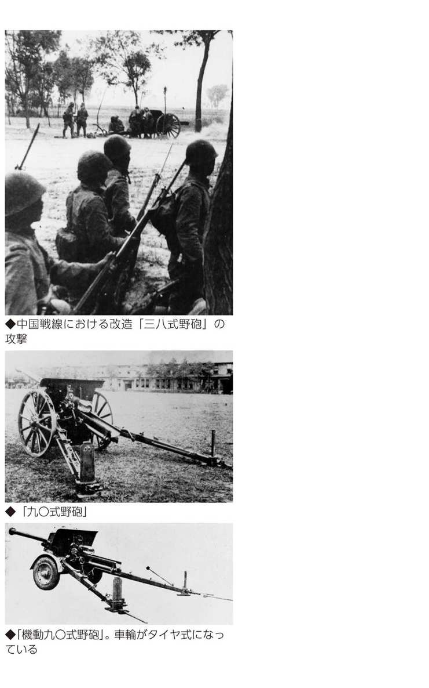
加農と榴弾砲
一〇加（一〇センチ加農）と一五榴（一五センチ榴弾砲）の働き場所は？
代表的な野戦重砲「加農」と「榴弾砲」は砲兵部隊の花形
口径一〇センチ加農（加農砲とも）は「ジッカ（一〇加）」と略称された。
明治三十八年採用の三八式 一万〇八〇〇㍍
大正十四年採用の一四年式 一万五三〇〇㍍
昭和七年採用の九二式 一万八二〇〇㍍
があるが、太平洋戦争で活躍したのはもちろん一番新しい「九二式」である（㍍は最大射程）。
口径一五センチの榴弾砲は「ジュウゴリュウ（一五榴）」と略称され、
明治四十四年採用の三八式 五八九〇㍍
大正四年採用の四年式 八八〇〇㍍
昭和十一年採用の九六式 一万一九〇〇㍍
があった。もちろん、太平洋戦争に投入されたのは「九六式」であった。
ガダルカナル島をめぐる日米の攻防戦（一九四二年八月〜四三年一月）は、最終的には完敗だったので日本が一方的に押しまくられたという印象が強い。しかし、一〇加も一五榴も何門かはガ島に揚陸され、アメリカ軍が根拠地にしていたヘンダーソン飛行場を砲撃し、アメリカ兵の度肝を抜いた。あるときは駐機しているＳＢＤ急降下爆撃機を十数機も破壊した。
しかし、日本軍には弾丸の補給が続かなかった。砲撃を始めても五分に一発という程度では、相手に陣地を発見されて、やがて何十発ものお返しを食らうようになったのである。
インドネシアのスラバヤを攻略した第四八師団は山砲しかもっていなかったので、オランダ軍要塞を破壊するために一五榴を四門、満州（中国東北地方）から急送させた。到着直後にオランダ軍が降伏したので射撃はしなかったが、一五榴がどんなときに必要か、これをみても想像できるのではなかろうか。
臼砲
陸軍の秘密兵器「九八式臼砲」のすさまじい威力
シンガポール、サイパン、硫黄島、沖縄で活躍した「空飛ぶバスケット」
臼砲の臼は餅をつくときにつかう臼である。写真でよくわかるように、弾丸を入れる発射座がずんぐりむっくりした臼にそっくりだ。
臼砲は敵の陣地や要塞に数百メートル近くまで忍び寄って発射すると、弾丸は高い放物線を描いて飛び、目標物を真上から直撃する。そこそこ堅固な要塞でも一撃のもとに破壊するという大砲だ。
日本陸軍の仮想敵国は日露戦争以後、一貫してソ連軍であり、それも黒竜江やウスリー川を越えて満州（中国東北地方）に侵攻してくるソ連軍だった。この考え方は太平洋戦争に入ってからも変わらなかった。「九八式臼砲」は、その「満ソ」国境でソ連軍の要塞陣地を破壊するために開発されたものだ。
しかし、太平洋戦争が始まると「満ソ」国境では静謐確保（ことを荒立てずに静かにしていること）が基本戦略となり、満州駐屯の日本軍・関東軍も南方作戦に引っ張り出された。兵器もまた同様だった。
九八式臼砲は、開戦直後のマレー・シンガポール作戦におけるブキテマ高地（シンガポール）で初めて使用されたほか、後期になってはサイパン防衛戦、さらには硫黄島戦などに投入された。サイパンや硫黄島にアメリカ軍の堅固な要塞があったわけではないが、歩兵陣地に唸りをあげて撃ち込まれた臼砲は、米兵を横殴りに倒すという威力を発揮した。
沖縄戦では、最大の激戦地となった嘉数の戦いでこの臼砲が使用され、一度に四〇名ものアメリカ兵を死傷させた。アメリカ兵はこのこの臼砲を「空飛ぶバスケット」と呼んで恐れたそうだ。
なにしろ口径三二センチもあった大砲であり、ソ連軍に悟られないよう、開発当初から秘密にされていただけあって、沖縄のアメリカ兵は意表を突かれたのである。
高射砲１
時限式で爆破させ破片を敵機に浴びせる新兵器
高度七〇〇〇までは有効との評判も大編隊には打つ手なし
何千メートルもの上空を時速三〇〇〜四〇〇キロ前後で飛ぶ飛行機に弾丸を当てるなどという芸当は、素人が考えても難しそうだ。
そこで、高射砲は弾丸を直接当てるのではなく、飛行機の少し手前で爆発させて多くの破片を飛ばし、飛行機がその破片のなかに突っ込むようにした。そういう考えで造られたのが「八八式七センチ（口径は七・五センチ）高射砲」である。空中で爆発すると約四〇〇個の破片となって飛散した。
この砲弾は、発射から何秒かあとに爆発するようにセットされた時限式であった。高度、発射速度、角度を入れるだけで自動的に爆発時間がセットされた。そこが昭和三年（太平洋戦争開始の実質一二年前）に採用された八八式高射砲の優れた点だった。
アメリカ軍は戦争後半、ＶＴ信管といって、電波の反射を受けて爆発させる方式を開発したが、日本はそれができなかった。
「八八式高」は太平洋戦争で使用された高射砲の八割を占めていた。最大射程は一万三八〇〇メートル、最大射高は九一〇〇メートル。ただし、「有効な射程は高度三、四千メートルで、それ以上の高度をとって、敵が大型機による精密照準の編隊爆撃をおこなうような場合には、ほとんど成果が期待できない」（斎藤睦馬「籠城〈ラバウル防空隊〉の激闘」『丸』平成十三年七月号所収）。
したがって、高度八〇〇〇メートルから一万メートルを飛びながら、日本本土に焼夷弾の雨を降らせ続けたＢ29重爆撃機には、ほとんど効果がなかったわけだ。
高射砲の射手もたいへんで、前出の斎藤氏が実習で「短時間に約四十発を発射したところ、途中から右耳の鼓膜がさけて、大量の出血をした」そうだ。
高射砲２
Ｂ29を悠々と撃墜できた高射砲の配備はわずか二門
「五式一五センチ高射砲」の威力の前にさすがのＢ29も脱帽した
アメリカ軍は硫黄島と沖縄を除いて日本本土には上陸しなかった。上陸作戦の計画はあったが、その直前に日本が無条件降伏したからだ。アメリカ軍は上陸こそしなかったが、Ｂ29重爆撃機で東京・大阪・名古屋・神戸・横浜など約七〇の都市を焼け野原とし、広島・長崎には原爆を投下した。
高高度（一万メートル以上）飛行が楽にできるＢ29に対抗できる高射砲や戦闘機がほとんどなかったから、自由自在の振る舞いを許したのだ。
しかしながら、Ｂ29に対抗できる高射砲が「まったくなかった」わけではない。少なくとも二種類あった。
一つは「三式一二センチ高射砲」（戦争二年目の皇紀二六〇三年＝一九四三年＝昭和十八年採用）。東京や北九州（日本最大の製鉄所や陸軍兵器工場があった）に配備され、さらにはインドネシアのスマトラ島パレンバン（開戦直後に占領した最大の石油基地）に配備された。いずれもそれなりに奮戦し、東京配備のものも現実に一〇機前後のＢ29を撃墜した。
しかし、悲しいかな数が一〇〇門ちょっとと少なかった。それは次の「五式一五センチ高射砲」の場合も同様だった。三式にくらべて最大射高は五〇〇〇メートル高い一万九〇〇〇メートル。一万メートルは楽な有効射高である。
五式一五センチは東京杉並区の久我山に二門配備された。その上空で落とした爆弾がちょうど銀座あたりに落下するというギリギリの距離である。
一九四五年（昭和二十）八月二日（日本降伏一三日前）、この五式一五センチ高射砲が発射され、高度一万メートルでＢ29二機が撃墜された。アメリカ軍は驚き、以後この一帯を飛行禁止としたそうだ。しかし、この五式は久我山の二門がすべてだった。
高射機関砲
開発九年、二五〇〇門が生産された意外な優れもの
二、三〇〇〇メートルという低空の敵機を退散させる簡便な高射砲
機関砲とは何か。機関銃のなかで砲の口径が一一ミリ未満のものを機関銃、一一ミリ以上のものを機関砲と呼ぶことにした。明治四十年（一九〇七）のことである。
太平洋戦争に使用された「九八式機関砲」は皇紀二五九八年（一九三八年＝昭和十三年）に完成したが、開発に丸九年もかけた。それほどの時間をかけたのは、高射砲とはいっても主として歩兵部隊とともに移動しつつ戦う高射砲を目指したからである。
たんに高く飛び、弾丸が大きいという高射砲ではなかったので、陸軍歩兵学校や砲兵学校などの意見を聞きながら開発したので時間がかかったのである。最大の問題は、砲そのものより、どうすれば戦場で運びやすくなるかという点にあった。
開発後も、さらにウイークポイントを改善したので、制式採用までさらに二年かかり一九四〇年（昭和十五）となった。これだけ手をかけた兵器だったので最終的には約二五〇〇門も製造され、各歩兵部隊に配備された。
最大射高はわずか三五〇〇メートルしかないが、もともと低空から陣地を攻撃する飛行機を追い払うという目的だから、これで十分だったのだ。戦場では馬の背に乗せて運んだり、道がよければ自動車に引かせたりした。
左の写真はニューブリテン島（現在パプアニューギニアの一部、北端にラバウルがある）南方のグロスター岬や、西部ニューギニア（現在はインドネシアの一部）最西部南のサレワ湾口にあるヌンフル島（すぐ近くのビアク島とともに日本軍玉砕地）に放置されていた九八式機関砲である。
その戦場の位置を地図で確かめるだけでも、いかにさまざまな部隊に配備されていたかがわかる。
海軍の高角砲
硫黄島や沖縄でつかわれた軽巡搭載の陸戦用高角砲
せめて大砲だけでもと、取り外して砲台に載せて戦った窮余の策
大砲のことを陸軍では火砲と称した。軍隊用語は神経質になると際限もない。たとえば馬のことを馬匹と呼んだ。海軍用語でも「軍艦」という定義にとらわれると、 駆逐艦の艦長 は間違いで、たんに〝駆逐艦長〟でなければならない。駆逐艦は軍艦ではなく艦艇であり、艦長とは軍艦の長をいうからだ。大尉という階級は、陸軍では「たいい」、海軍では「だいい」と濁らなければ正しくないそうだ。
そんなことばかりにとらわれていると、なかなか話が先に進まないが、ここで問題にしている「高角砲」は、陸軍でいうところの「高射砲」なのだ。
海軍には陸戦隊といって、地上戦専門の部隊があり、数も多かった。海軍が島を占領すると防衛のため陸戦隊を置いたのである。大きい部隊になると根拠地隊とも称し、沿岸の防備も行なった。
そうした島々の防備のために陸戦隊が高射砲代わりに据えたのが「三年式八センチ高角砲」だった。八センチとはいっても正確には七六・二ミリで、軽巡洋艦「天龍」「球磨」「長良」「川内」「夕張」などが搭載していた高角砲が中心だ。搭載時は、四〇口径四一式八センチ砲と称されていたが、仰角を上げるように改良したのである（最大俯仰角マイナス５〜プラス75）。
最大射距離や最大射高は不明だが、高度七〇〇〇メートルまでの攻撃に対しては有効だったといわれる。陸戦隊は高度一〇〇〇から三五〇〇までの敵機に対しては七・七ミリから四〇ミリまでの機銃で応戦し、それ以上になるとこの三年式八センチ高角砲で戦った。写真の一枚は、ビルマ戦線の三年式八センチ高角砲だが、ベンガル湾東部のアンダマン諸島は日本海軍が占領したのである。
砲撃戦１
太平洋では意外と少なかった集中的な大砲撃戦
シンガポール、バターン、コレヒドール攻略に動員された大砲群
日露戦争では二八センチ榴弾砲による旅順口砲撃は有名である。集結していたロシアの旅順艦隊を砲撃するための観測所として占領したのが、いわゆる二〇三高地だった。二八センチ榴弾砲はもともと要塞砲で、わざわざ外して旅順まで運んだのだ。
それから三七年後の太平洋戦争でも、いくたびかの大砲撃戦が行なわれた。マレー半島を南下してシンガポールの対岸ジョホールバルに布陣した砲兵部隊は、一四個大隊・一六〇門の大勢力だった。
山下奉文大将率いる第二五軍直轄の重砲兵部隊だけで四八門、用意した弾丸は約五万発だった。近衛師団・第五師団・第一八師団が、それぞれ三六門・八万四六〇〇発を用意した。重砲部隊は数日間にわたってシンガポールの石油基地や要塞陣地（海に向けられていた大砲群）を集中的に砲撃した。
これが太平洋戦争における大砲撃戦の最初だった。
次いでフィリピン攻略では、シンガポール攻略を数倍上回る集中砲撃を実施した。
アメリカ・フィリピン連合軍（米比軍）は、マニラを日本軍にあっさりと明け渡してマニラ湾のバターン半島やコレヒドール島に立て籠もったが（兵力約一〇万名）、それを屈服させるべく、日本軍は大小一九〇門の大砲を集中し、大砲撃を行なった。
改造三八式野砲四〇門、九六式一五センチ榴弾砲・四一式山砲が各二四門、九二式一〇センチ加農一六門、三八式野砲・九一式一〇センチ榴弾砲一二門などで、砲兵専門の将校でもこれらの砲が一斉に咆哮するさまは初めての経験だったそうである。
しかし、日本軍がこれほどの大砲を集中して攻撃したのはフィリピン戦線が最後だった。後半は兵站（補給基地）重視のアメリカ軍にかなわなかった。
砲撃戦２
不発に終わった香港攻略の大砲撃
誤報のために一発も火を噴かなかった「四五式二四センチ榴弾砲」
香港は九龍半島とともに太平洋戦争当時はまだイギリス領で、その後背地である新界は九九年間（期限は一九九七年まで）の租借地だった。アメリカとともにイギリスにも宣戦布告した日本は、香港を含む中国のイギリス領を占領した。
結果としては香港占領は、激戦もなく簡単に終わっているが、当初は悲壮な覚悟のもとに香港占領を目指したのだ。香港に至る九龍半島にはイギリス軍が一五五個のトーチカを備えた強大な要塞を築いていると信じられていたからである。
こうした情報は香港駐在の第三国外交官がもたらしたもので、「香港近傍防御施設図」なるものも添えられていたから、日本軍は完全に信用したのだ。
日本陸軍はその大トーチカ群を破壊するために、砲兵部隊を集中し、開戦のゴーサインを待っていたのである。日本軍はそれまで四年半にわたって中国を軍事侵略しており、広東一帯も占領していたから、砲兵陣地の構築には支障はなかった。
このとき最も頼りにされた大砲が「四五式二四センチ榴弾砲」である。とにかくばかでかい重砲である。砲の重さが三三トンもあるので、運ぶときは分解して一五両のトラックに積み込んだ。弾丸の重さは二〇〇キロもあった。それを一万メートルも飛ばすのがこの二四榴である。
しかし、香港攻略では陣地に着いただけで、一発も撃たなかった。強靱なトーチカはたくさんあったが、大部分がもぬけの殻だった。若林東一という若い中尉が自分の中隊を引きつれて突撃してもたいして抵抗はなく、次つぎに占領していった。
香港攻略の大砲撃で九龍要塞を破壊しようとしていた日本軍の香港攻略戦は、一人の中尉を有名人にして終わった。
火焔放射器
日本軍の火焔放射器は対戦車用兵器として開発された
実戦で戦車相手には使われることはなく威力のほどは不明
火焔放射器は、戦車とともにアメリカ軍の地上戦兵器の切り札だった。フィリピン戦もサイパン戦も硫黄島戦も、そして最後となった沖縄戦でも日本軍の多くが、この火焔放射器に焼き殺された。
日本軍も火焔放射器はもっていた。「一〇〇式火焔放射器」という。一〇〇式だから皇紀二六〇〇年（一九四〇年＝昭和十五年、日米開戦の一年前）に採用された兵器である。しかし、以前にも九三式式火焔放射器がすでにあり、それを改良したものだ。
アメリカ軍は、直接日本軍将兵に火焔を浴びせたが、日本軍のそれは戦車に浴びせるためのものだった。
太平洋戦争に入る約二年前に、満州国（万里の長城から北方に日本が建設した植民地。現在の中国東北地方）とソ連の衛星国・モンゴル人民共和国との国境紛争がもとで、日本軍はソ連軍と激しい戦闘を約四カ月断続的に戦ったが、ソ連軍戦車には歯が立たなかった（ノモンハン事件）。日本は、それに対抗できる戦車を造ることなく、火焔放射器を対戦車兵器として改良したのだ。
戦車に連続して火焔を放射すれば戦車内部の温度は摂氏四〇〇度に達する。乗員は焼き殺され、戦車は役にたたなくなる、という理屈だったという。
ほんとうにそうか、と疑いたくなるような話ではある。
そもそも火焔放射の長さはわずかに二五メートルしかない。そんな近距離に近づくまでに、敵戦車から銃撃されることを考えなかったのだろうかという疑問も残る。
やはり実戦でも戦車に対しては一度も使用されなかった。工兵隊の一部が装備して、陣地構築などの補助手段として用いたとされている。
地雷
敵を待ち伏せして殺傷する兵器は敵味方とも悩みの種
破甲式地雷は戦車に投げつけて爆発させる特殊な兵器
今日、地雷がやっかいな殺傷兵器であるという認識は世界共通のものとなっている。兵器そのものが諸刃の剣ではあるが、地雷は戦争が終わっても敷設したまま放置されることの多い兵器だからである。
地雷は大きく分けると対人間用と対戦車用がある。対人間用はわずか三、四キログラムの圧力で爆発する。対戦車用は一六〇から二二〇キロの圧力をかけないと爆発しない。地雷を人間が踏んでも即死することはあまりなく、大けがをさせるだけだ。
戦場で大けがをすれば、下手をすると落伍兵となり置いてけぼりにされる可能性もあった。そういう戦友を見ると、地雷を踏まなくても将兵の士気は大きくダウンする。そこが狙いの兵器だといわれる。
日本軍が主に使用した地雷の一つが「九三式地雷」だった。対人間、対戦車兼用である。皇紀二五九三年＝一九三三年＝昭和八年採用のものである。
もう一種類の地雷が「九九式破甲爆雷」である。破甲というのは戦車の装甲を破壊するという意味である。トラップ（罠）として地面に隠すように敷設する地雷ではない。戦車に近づき信管のピンを抜いて戦車の装甲にペタッと取りつけるか投げつけるかして、貼りつける地雷だ。爆雷にはマグネット（永久磁石）が付いていたのである。
九九式破甲爆雷は重さは一・三キロだが、六三〇グラムのＴＮＴ（トリニトロルトルエン、とくに強力な火薬）が入っていた。これで二センチの装甲を破壊できたそうだ。二個重ねれば三センチの装甲を破壊できた。
この破甲爆雷は前頁（参照）でみた火焔放射器と同様に、戦車に約一メートルまで近づかないと取りつけることはできず、ほとんど必死攻撃である。それでも日本軍の兵隊はそれをやって戦い玉砕した。
豆タンク
機銃は装備したが戦闘兵器ではなかった「豆タンク」
オープンカーばりの「九四式軽装甲車」の任務はさまざま
「豆タンク」は「九四式軽装甲車」の愛称だ。写真を見ても、ほんとうに小さくてかわいい。
この戦車の残骸が太平洋戦争のいろいろな戦場で、アメリカ従軍カメラマンに写真に撮られて残っている。フィリピンのミンダナオ島、インドネシアのスマトラ島、マーシャル諸島のクエゼリン島、沖縄......など。
クエゼリンで捕獲された豆タンクは、アメリカ軍のＭ４シャーマン型戦車の上にわざわざ載せられて、写真を撮られている。なるほど、彼らの戦車に比べれば確かに小さい。
豆タンクはもともと、戦闘用兵器ではなかった。戦場に配備して、後方から最前線へ弾薬を運ぶためのトレーラーを牽引するために開発されたものだ。小さいとはいえ、鉄の塊だから、狙撃されても耐えられる。反撃のために機銃一挺と砲塔もつけた。
太平洋戦争でも多くの戦場に派遣されたのは、やはり直接の戦闘兵器としてではなかった。弾薬運搬、電線を引くときの延線車、電信柱を立てるときの植柱車、砲兵観測班が上げる気球の気球繋留車......、さまざまな仕事が戦場にはあったのである。
そうして、中国戦線や満州では（太平洋戦争は日中戦争が始まって四年半後に始まり、日中戦争も継続したのである）毒ガス対策車ともなっていた。毒ガスを撒くときにつかい、毒ガスを撒かれたときに中和剤を撒布する、そういうときに備えたのである。
ちなみに、毒ガスや細菌は、中国戦線では使用したが、南方戦線ではつかわなかった。アメリカ軍による報復を恐れたのだ。アメリカ軍も毒ガス使用の誘惑にかられながらよく自重した。
豆タンクもそれなりに改良を重ね、「九七式軽装甲車」などに代わっていった。
装甲車
キャタピラをつけて見た目は戦車のようだが...
初めて造られた騎兵専用の「九二式重装甲車」は意外に不評だった
戦車が登場するまで、騎兵は地上では唯一、機動力を誇る部隊だった。最後は抜刀して敵陣を急襲したが、戦車が登場してからはまったく意味をなさなくなった。騎兵の重要な任務だった捜索（偵察）も飛行機にはかなわない。
そういうわけで日本陸軍も、戦車を開発しながら騎兵の削減につとめ、太平洋戦争に入った頃には騎兵部隊は、中国に展開する一個旅団となっていた。
騎兵連隊は戦車を装備したが、いわゆる豆タンクの前の「九二式重装甲車」だった。当時は戦車といえば歩兵部隊が扱う兵器だったので（歩兵の進撃を助ける兵器）、この重装甲車もキャタピラをつけた完全な戦車だったが、あえて戦車と名づけなかったのである。戦車と名づけることに歩兵部隊から異議が出たからだそうだ。
九二式重装甲車は元騎兵部隊が初めて装備した戦車だったが、意外に不評だった。
この後に開発されたいわゆる豆タンク（九四式軽装甲車）と格好もスピードなどもほとんど変わらなかったが、全体的に扱いにくい戦車だったのだろう、九四式の登場とともに一六七両の製造で打ち切られている。
豆タンクは太平洋戦争の主戦場となった南方戦線に進出したが、九二式重装甲車は関東軍（満州〈中国東北地方〉駐屯の日本軍）や朝鮮軍（朝鮮駐屯の日本軍）に配属されたままだった。
満州が戦場になるのは終戦一週間前の一九四五年（昭和二十）八月九日からであり、関東軍の精鋭部隊は戦車部隊も含めてことごとく南方戦線（たとえばフィリピンやサイパンなど）に送られていた。わずか一週間の戦闘だったから、九二式重装甲車の出番もなかったのである。
開戦と戦車
開戦直後のマレー進撃を支えた日本の戦車
マレー作戦を迅速に遂行できたのは戦車部隊の活躍のおかげ？
日本軍は開戦直後、マレー半島の付け根にあたるコタバルやシンゴラ（タイ領）あたりから五五日かけて一気に南下し、シンガポールの対岸ジョホールバルに達した。
途中では英印軍（英軍に指揮されたインド兵部隊）が数カ所に強靱な陣地を構えていたから、それほど楽ではなかったが、攻める日本軍と守る英印軍とでは気迫、意気込みがまるで違った。
日本軍はこの戦争に国運を賭けていたが、英印軍はマレー半島を死守しなければならない、せっぱ詰まった理由はない。マレー半島にはマレー人による国家はまだなかったのだ。この快進撃ができた一つの理由が、戦車部隊の活躍だった。
すなわち、進撃した日本軍三個師団のうち第五師団には戦車第一連隊が配属されていた。そのなかの戦車一個中隊が捜索第五連隊につけられた。捜索とは偵察の意味だが、一〇年ほど前までは騎兵連隊だった部隊で、当時は「九四式軽装甲車」、すなわち「豆タンク」で武装していたのである。
さて、やってきた戦車一個中隊の戦車は、「九七式中戦車」一〇両、「九五式軽戦車」二両であった。
この二種類の戦車が中心となって、最初の関門、ジットララインを突破したのだ。ジットラ高地を要として南北一〇数キロのこの陣地は軽装甲車、戦車地雷原、野砲部隊などさまざまな障害が置かれ、一万三七〇〇人が守備についていた。
そこを戦車群が一晩で突破した（一九四一年＝昭和十六年十二月十一日）。敵が、日本でいえば豆タンク（ブレン・ガン・キャリア）しか装備していなかったことが幸いしたが、戦車とともに進撃した歩兵も蛮勇の持ち主ばかりだった。
九七式中戦車１
攻撃ばかりで防御はおざなりの設計思想
日本軍の代表的戦車「九七式」の致命的弱点
太平洋戦争における代表的な中戦車「九七式」には二種類あった。俗に「チハ」と呼ばれるものと「新砲塔チハ」と称されるものだ。新砲塔チハはチハを改良して、火力をアップしたものである。
では大型の大砲を装備したのか、と思われるだろうが、さにあらず。チハ搭載の五七ミリ砲に替えて四七ミリ砲を積んだのが新砲塔チハだった。
口径が小さいのに、なぜ火力がアップしたのか。その秘密は、五七ミリ砲は砲身が短くて貫徹力が小さく、射程が短かったからである。
砲弾の貫徹力はスピードの二乗に正比例する。九七式五七ミリ砲の初速は毎秒三五〇メートル、一式四七ミリ砲の初速は毎秒八一〇メートル。貫徹力は歴然として一式四七ミリ砲が優れていた。これなら最大八〇ミリ装甲でも貫徹する。
アメリカの代表的なシャーマンＭ４型戦車は装甲が最大七五ミリだったから、理論上はこれで十分に撃破できるわけであった。新砲塔チハは太平洋戦争の開戦には間に合わなかったが、一九四二年（昭和十七）半ば頃から順次戦場に送られるようになった。
とはいえ、チハにしても新砲塔チハにしても相手を撃つことばかりに気を取られて、相手から撃たれることにはあまり深刻に考えなかったようだ。なぜなら、自身の装甲は最大でも二五ミリだったからである。
そのため、アメリカのＭ４型中戦車が放つ七六ミリ砲が命中すると、まるでアメのようにグニャリと破壊されてしまったのだ。
軍艦の場合、自艦が搭載する大砲が当たっても大きなダメージを受けない程度に装甲したが、戦車に関してはそうでなかったようだ。そういう戦車が日本軍の代表的な戦車だったのだ。
九七式中戦車２
中戦車の弾丸はなぜアメリカ戦車に跳ね飛ばされたのか
理論では貫徹破壊できても、実戦ではそうはいかなかった理由
一式四七ミリ砲を搭載した日本軍の中型戦車「新砲塔チハ」で装備された戦車第二師団は、一九四五年一月、ルソン島リンガエン湾に上陸したアメリカ軍と戦闘を重ねた。理論上はその四七ミリ砲はアメリカのＭ４型戦車を撃破してくれるはずであった。
「（戦車第七連隊は）陣前百メートルぐらいまで引きつけておいて、戦車砲の一斉射撃によって敵戦車をいっきょに潰滅しようとしたのである。ところがどうであろう。みごと初弾、二弾、三弾とも全弾が命中したにもかかわらず、ピューンという音とともに、全弾が跳ね返ってしまった。貫徹しないのである。砲手は隊長に向かって思わず叫んだ。
『隊長、命中しても貫徹しません！』
その言やじつに悲壮であった。いままで苦労に苦労を重ねてきたのが、この役立たずの有様である。反対にわが方は、たちまちにして敵戦車砲の餌食となってしまった。実光中隊長もこのとき、戦車内で戦死したが、じつに悲惨、残酷のきわみであった」（元戦車第二師団参謀・河合重雄「戦車第二師団 ルソンに潰ゆ」『丸』別冊「日米戦の天王山 フィリピン決戦記」特集号所収）。
九七式戦車搭載の一式四七ミリ砲がＭ４型装甲を貫徹するには、弾丸が直角に命中しなければならない。角度が浅いと、シャーマン型戦車の車体は丸っこいので滑ってしまうのだという。理論と現実の大きな違いを、フィリピンの戦場で戦車兵は嫌というほど味わったのだった。
こういう次第だったので、フィリピでは最後の段階で「戦車特攻」が敢行された。九五式軽戦車、九七式中戦車各一両が戦車前方に爆薬二〇キロを固定し、Ｍ４型戦車に体当たりしたのである（戦死一一名。一九四五年四月十二日、イリサン隘路）。
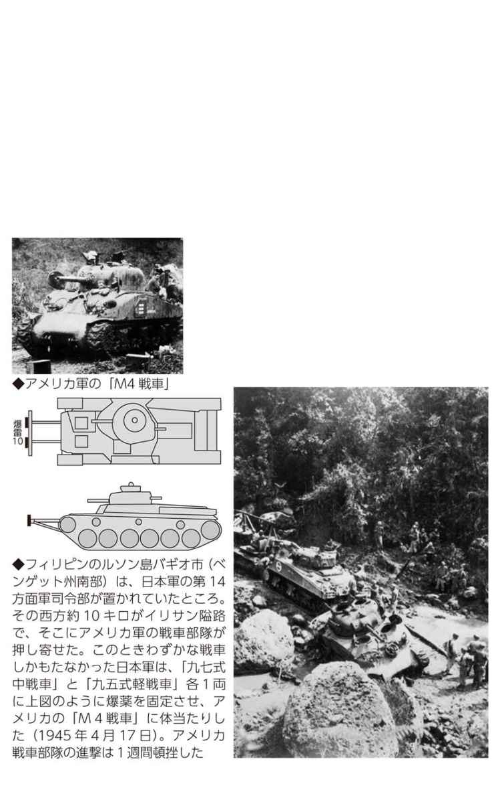
戦車の開発
一式中戦車から四式中戦車まで毎年のように開発
開発努力は怠らなかったが、モノになったのは「一式」だけ
戦車は装甲を厚くし、大きな砲を積んだほうが勝ちである。この単純な論理は、飛行機がなかった時代の軍艦造りと非常によく似ている。
日本陸軍も当然、その観点から開発を進めていた。気づかせてくれたのは、ノモンハン事件によるソ連軍戦車の優秀性だった。
対戦車用戦車ともいうべき新しい戦車は、太平洋戦争に入ってから毎年のように新兵器となって登場した。最大装甲と搭載砲を見比べてみよう。
一式中戦車 最大装甲五〇ミリ 一式四七ミリ砲
三式中戦車 最大装甲五〇ミリ 三式七五ミリ砲
四式中戦車 最大装甲七五ミリ 五式七五ミリ砲
五式中戦車 最大装甲七五ミリ 五式七五ミリ砲
一式三七ミリ砲
一式中戦車は「一式」が皇紀二六〇一年（一九四一年＝昭和十六年）を指すから、開戦前に完成したように思えるが、実際は開戦翌年の一九四二年だった。以後、毎年のように新しい戦車を開発したのである。
しかし、実戦に投入されたのは最初の一式中戦車だけである。それは製造台数を見ればはっきりしている。
一式は五八七両製造されたが、三式は六〇両、四式はわずかに六両（二両とも）、五式は試作車一両だけに終わったからである。
六〇両製造された三式は、本土決戦用として日本内地の戦車部隊に配備された。
最後に開発された五式などは重さが三七トンにも達した。それまでの戦車の約二倍である。はたして量産してもそれを動かすガソリンがあるのかどうかを心配しなければならないほどの重量型〝中戦車〟である。
戦車対戦車
ビルマの日英戦車戦を決した装甲の厚さ
軽戦車同士の対決は「命中すれども貫通せず」で日本の負け
太平洋戦争当時、ビルマ（現ミャンマー）はイギリスの植民地だった。全土が植民地となってから六〇年近くになっていた。そこで日本陸軍はビルマ独立運動家を三〇名ほど国外脱出させ、軍隊指揮官として訓練、ビルマ独立義勇軍を結成させ、彼らを引きつれてビルマに進攻した。大義としては日本軍は〝ビルマ解放軍〟だった。
日本軍に対して最も激しく抵抗したのは、もちろんイギリス軍だった。そこにはビルマ兵は入っていない。日本軍はタイから陸伝いにモールメンを経てシッタン河を渡り、ペグー山脈を越えてラングーン（現ヤンゴン）に入ったが、ペグー山脈（海抜約八〇〇メートル）があるので、戦車部隊はわずかに九五式軽戦車一二両の一個中隊だった。
待ち構える英軍は偵察用のＭ３型戦車「ハニー」で、日本軍のものと変わらない軽戦車だった。
ペグー山脈を抜けた平原で日英戦車戦が始まった（一九四二年三月五日）。日本の軽戦車はハニーに命中弾を与えたが、見事に跳ね返された。ハニーは軽戦車とはいえ、四五ミリの装甲を施してあったのだ。それに対してハニーの三七ミリ砲は、装甲一二ミリの九五式軽戦車を次つぎ貫通し、炎上させた。
第五五師団の九四式三七ミリ速射砲部隊も攻撃を始めたが、九五式軽戦車と同じ砲弾なのでまったく貫通しない。
結局、英軍の戦車部隊に凱歌があがった。
「ハニーはわが速射砲の放列に割りこんできた。背の低い対戦車砲はキャタピラに踏みつぶされてしまう。あたりは、日本兵の死体が山をなした。付近に大きな井戸があった。イギリスの戦車は日本の対戦車砲を押して、井戸の中へかたっぱしから投げこんでいる」（木俣滋郎『戦車戦入門』）。
砲戦車
各種製造された「砲戦車」という名の野砲搭載「自走砲」
〝走る野砲〟か〝野砲を装備した戦車〟か？
一九四一年（昭和十六）末、「一式七センチ半自走砲」という兵器が開発された。これは戦車なのだろうか、野砲なのだろうか。
これは九七式中戦車に九〇式七五ミリ野砲を取りつけただけのものである。だから、野砲関係者は「自走砲」と呼び、戦車関係者は「砲戦車」と呼んだのである。
〝走る野砲〟でも〝野砲を装備した戦車〟でもどちらでもよいが、戦車部隊としては、とにかく強力な破壊力をもつ戦車がほしかったのである。
同じ発想で何種類かの自走砲・砲戦車が造られた。
●一式七センチ半自走砲
九〇式七五ミリ砲を搭載
●一式一〇センチ自走砲
九一式一〇五ミリ榴弾砲を搭載
●二式砲戦車
七五ミリ山砲を搭載 三〇両製造
●三式砲戦車
三式七五ミリ戦車砲を搭載 ごく少数製造
●四式一五センチ自走砲
三八式一五センチ榴弾砲を搭載 一二両製造
一式は「七センチ半」と「一〇センチ」を合わせて一三八両製造された。
いずれも取るに足りない製造台数である。それでも戦争が始まって毎年のように新しいタイプの戦車造りに没頭していたことがわる。
生産台数が比較的多かった一式七センチ半自走砲はフィリピンに何回かに分けて輸送されたが、その第一陣はアメリカ潜水艦に攻撃され、すべて海没した。その後も送り続けられ、一部は上陸アメリカ軍と戦った。わずか一二両しか造られなかった四式もフィリピンと沖縄の戦場に送られている。
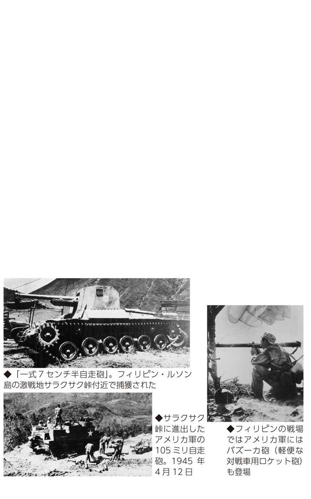
豆タンクの後継
「豆タンク」に三七ミリ戦車砲を搭載した軽戦車
占領地で住民を威圧するには十分な効果があった
「九七式軽装甲車」は「装甲車」といっても戦車に変わりはないことはしばしばふれてきた。
「九七式」とあるから皇紀二五九七年（一九三七年＝昭和十二年）の採用。量産は約二年後からの約四年間で、五九三両製造された。いわゆる「豆タンク」（九四式軽装甲車）の系統をひく戦車で、豆タンクと違っている点は、武装が七・七ミリ機関銃に代わって三七ミリ戦車砲が搭載されたことである。
装甲車だから本格的な戦闘を念頭においたものではなく、弾薬運びや通信線架設など後方任務が中心だった。しかし、より強力な武装を、という希望は兵器であれば本能に近いものがあり、その要望に応えたものである。
豆タンクでも南方の各戦場に投入されたぐらいだから、九七式も各戦場に派遣されている。
ビルマでは、ラングーン陥落後の戡定作戦で退却するイギリス軍が放火した村に突進していく九七式軽装甲車の写真が残っている。フィリピンでは一〇両近い九七式軽装甲車が列をなしてマニラ市へ入っていく光景や、マニラ市民が両側で見守るなか、市中を威圧するように行進してしているさまが写真に残っている。
太平洋戦争に入ってからの中国戦線は、いわゆる掃討作戦に近いものが多かった。そのせいか、九七式軽装甲車も第一線に出て歩兵とともに敵陣に迫るという戦闘にも投入されていた。中国軍相手なら、歩兵部隊の先頭に立っての露払い的な役割を十分に果たすことができたのだろう。
豆タンクの系統だけあって乗員はやはり二名、作戦中の騒音と震動は激しいものがあり、かなり難儀したといわれる。それでも製造費が安上がりだったので経済性のある〝戦車〟だったのだ。
水陸両用戦車
「特二式内火艇」という名の海軍の水陸両用戦車
陸軍に依頼して造らせた陸戦隊用の防衛兵器
フィリピンのレイテ島といえば、マッカーサー大将が率いるアメリカ軍が、フィリピンを奪還するためにまず上陸した島である。
日本陸軍は当初、ルソン島でアメリ軍と決戦するつもりだったが、急遽、レイテ決戦に切り替え、ルソン島から続々と部隊を送り込んだ。アメリカ軍の上陸地点はタクロバン、日本軍の上陸地点はオルモックである。
レイテに送られた戦車には九四式軽装甲車、九五式軽戦車、九七式中戦車などがあったが、「特二式内火艇」という変わった戦車も含まれていた。
特二内火艇は水陸両用戦車である。陸軍が海軍の依頼に応じて開発したものだ。日本にも水陸両用車があり、作戦にも参加していたが、試作車は太平洋戦争開戦後だったので、南方攻略作戦において行なわれた上陸作戦には間に合わなかった。
というより、海軍は太平洋やインド洋で占領した多くの小さな島々に陸戦隊を駐屯させたので、その防御兵器として特二式内火艇を必要としたのだった。実際にラバウルをはじめサイパンやグアム、パラオなどにも配備された。
レイテ島の日米攻防は、ルソン島から送られる日本軍増援部隊の輸送船が米空母機に攻撃され、着の身着のままで上陸しなければならない状況で、日本軍はアメリカ陸軍と戦う前から圧倒された。
ついには、その上陸地点であるオルモックまで占領されたが、特二式内火艇四両が、陸戦隊四〇〇人とともに送り込まれたのは、そういう時期だった（一九四四年＝昭和十九年十二月十一日夜）。
しかし、対岸に待ち構えていたＭ１型五七ミリ対戦車砲の不意打ちを受け、上陸は果たしたものの、ついにその戦力を発揮することはできなかった。
暗号戦
戦う前からことごとく敗れていた政府と軍
日米交渉、ミッドウェー海戦、山本連合艦隊司令長官機の撃墜...
太平洋戦争は主としてアメリカとの戦争だったが、戦う前にすでに敗れていた、という側面がある。日本の暗号が解読されていたからだ。
開戦前の一〇カ月間ほど、アメリカ政府と避戦のための交渉を行なったが、その際、日本政府の提案や、アメリカ政府の提案に対する日本政府の回答は、当然ながら暗号に組んでワシントンの日本大使館に送られた。それをアメリカ政府は事前に、ことごとく解読していたのである。
このことが初めてわかったのは、日本降伏後の東京裁判（Ａ級戦犯裁判）の際だった。日本の交渉打ち切り通告（最後通牒といわれる）を野村吉三郎日本大使が手渡したとき、すでに真珠湾奇襲は始まっていた。が、事前の解読でそれが最後通牒であることを知っていたハル国務長官は、そ知らぬふうで受け取り、アゴをしゃくって出口を指し示し、大使の退去を求めたのである。
開戦後は日本海軍の暗号も、ことごとく解読された。ミッドウェー海戦直前、日本海軍が攻略する島「ＡＦ」が、ミッドウェーであることを確認するため、アメリカはわざと平文で「ミッドウェーは水不足」と電波を流した。すると日本軍のある部隊が「ＡＦは水不足だそうだ」という暗号電波を流した。それをキャッチした米軍は、余裕をもって日本空母部隊を待ち伏せすることができたのだ。
それから約一〇カ月後の一九四三年（昭和十八）四月十八日、連合艦隊司令長官・山本五十六大将が乗った一式陸攻機が、アメリカ陸軍の戦闘機に撃墜され山本は戦死した。山本がラバウルからブーゲンビル島の日本軍基地を視察に行くという、分刻みの詳細な日程表を現地に発信したが、それを解読されて待ち伏せにあったのだった。
無線通信１
通信隊は立派な作戦部隊だった
「天気晴朗なれども...」から「ト連送」「トラ、トラ、トラ」まで
無線が実戦に使用されたのは日露戦争（一九〇四〜〇五年）からであった。バルチック艦隊を発見して第一報を連合艦隊司令部に報じた「信濃丸」も、それを受けて連合艦隊司令部が東京の軍令部にあてた出動報告も、無線だ。軍令部宛の電文は平文交じりの暗号電報で、「アテヨイカヌ見ゆとの警報に接し ノレツヲハイ直ちにヨシス これをワケフウメルせんとす 本日天気晴朗なれども浪高し」。訳すと「敵艦隊見ゆとの警報に接し 連合艦隊は直ちに出動 これを撃沈滅せんとす......」。
それから三六年六カ月後、太平洋戦争で軍令部が受け取った第一報は、真珠湾奇襲の航空部隊総指揮官・淵田美津雄中佐機が発した「突撃せよ」を意味する「ト、ト、ト、......」の連送や、「奇襲成功」を意味する「トラ、トラ、トラ、......」だった。軍令部庁舎（海軍省と同居、現在の農水省の位置）構内に受信用のアンテナが立っていたのだ。
トラ、トラ、トラを軍令部や広島湾の連合艦隊旗艦「長門」でも直接受信したことについて、淵田は「当時の小型航空機用電信機の能力では予期されなかった」といい、「学術的には短波の飛躍現象は説明されているが、略語がトラだったから、千里征くトラ、千里を還ったのだろう」と書いている。
こうした無線通信を扱う部隊は東京海軍通信隊といい、連合艦隊に属するれっきとした作戦部隊だった。各地に散らばる海軍部隊へ発信するときは、軍令部で電鍵を叩くと有線のケーブルで千葉県・船橋送信所に送られ、そこにそびえる鉄塔の通信用アンテナから地球上の隅々まで電波が飛んだのだ。
東京海軍通信隊は、のちに埼玉県の大和田海軍通信隊と第一連合通信隊を編成した。大和田通信隊は敵側の無線を傍受する部隊だった。
無線通信２
ハワイ奇襲「赤城」の無線封止は事実か？
ルーズベルト大統領の真珠湾疑惑の鍵を握る無線
真珠湾奇襲は日本の航空部隊による一方的な空襲で、多くの米戦艦が沈み、破壊され、数百機の飛行機も破壊された。戦争必至の緊迫した状況が何カ月も続いていたので、警戒も厳しかっただろうに、一方的にやられたことはどうしても腑に落ちない、とする疑惑があがったのは当然で、その延長線上で、ルーズベルト大統領は事前に日本の空母部隊の動静を知りながら、あえて奇襲させたのではないかという憶測が、当時からささやかれてきた。
そういう疑念が起こったのは、当時のアメリカ国民は第二次大戦（イギリス・ソ連とドイツ・イタリアのヨーロッパにおける戦争）への参戦を拒んでいたから、わざと日本に奇襲させて国民の戦意を高揚させようとしたのではないか、と疑われたのである。
六隻からなる真珠湾奇襲の空母機動部隊は、厳重な無線封止のもと、単冠湾（択捉島）を出撃し、一三日目に真珠湾を奇襲した。ところがスティネットの『真珠湾の真実』（邦訳は二〇〇一年、文藝春秋）では、じつは旗艦「赤城」（空母）をはじめ空母機動部隊の多くの艦船が、無線封止どころか真珠湾直前の二一日間に一二九通の無線電報を発し、「（「赤城」に乗っていた）南雲長官がもっともおしゃべりだった」とし、アメリカ側は日本の空母艦隊の動きを手に取るようにわかっていたという。
この説の肯定派も少なくないが、厳密な史料検証に立っての手厳しい反論もあり（たとえば秦郁彦編『検証・真珠湾の謎と真実』二〇〇一年、ＰＨＰ）、論争はまだまだ長引くだろう。
無線封止はレーダーが実用化されるまでの、きわめて原始的な防御法で、だからこそ日本海軍はレーダーを兵器として認めなかったのである。真珠湾の頃はアメリカ海軍のレーダーも初歩的段階だった。
レーダー１
日本海軍将校の電波兵器に対する暴言・蔑視の数々
科学者はレーダーの有効性を知っていたが、軍人たちはバカにし軽視した
「私たちが製作したレーダーに対しても、何かと難癖をつけて『こんなものは兵器として使えない』という軍人ばかりでした。とくに軍令部や艦政本部の兵器を管掌している実質的な責任者の連中さえ、『レーダーなんていらない』という人がほとんでした」（コンプトン調査団『日本での科学情報活動の調査に関するレポート』一九四五年十月）。
「工廠の造船の人たちが、電探の設置場所をくれないんです。『こんな簪みたいなもの、艦橋につけるわけにはいかない』と、アンテナのスペースを確保してもらえない。......きちんとした部屋をもらえずに、甲板の隅に架設の場所を作って、そこに電探の本体が置かれたのです」
「当時はいわゆる『大艦巨砲主義』ですから、大砲とか高角砲などの攻撃兵器が優先的に装備されていました。部隊の人たちの間では電探は『守りの兵器』という位置づけにされていたのです。それが電探軽視の、最も大きな原因だと思います」（海軍技術研究所で電離層研究者だった新川浩氏の話）。
「日本軍は電波探信儀を望遠鏡に毛が生えた程度のものと思っていました」（海軍技術研究所で電波探信儀の実用試験を担当していた松井宗昭氏）。
「いわゆる『鉄砲屋』でも、大砲を扱う兵隊はエリートとされていました。それにくらべて私たち対空射撃を受け持った兵隊は、『鉄砲屋のクズ』と呼ばれていました。これは海軍の大艦巨砲主義の弊害で、......『防御』になると、その扱いは極端に軽んじられるのです」（元海軍中佐・千早正隆氏）。
いずれも『太平洋戦争 日本の敗因３ 電子兵器『カミカゼ』を制す』（ＮＨＫ取材班）からの引用だ。レーダーを「卑怯者が使う兵器」（同書）とののしる軍人も少なくなかったそうだ。
レーダー２
英軍が使用していた「八木アンテナ」を日本軍は知らなかった
エレクトロニクス分野では世界水準の研究成果もあったのだが...
日本軍は、ほとんどレーダーに無関心のまま太平洋戦争に突入した。それは軍人が無関心だったというだけで、ある分野では世界水準に達していた。軍人が関心を示さなかっただけである。
その一つが東北大学の八木秀次が開発した指向性の強い、いわゆる八木アンテナである。太平洋戦争が始まる一五、六年も前の昭和初期のことだ。電子工学（エレクトロニクス）の分野も当時は国際交流がふつうに行なわれており、八木アンテナは海外で注目を集めていたのだ。
日本軍がイギリス領シンガポールを占領したとき、英軍はこの八木アンテナを実戦に使用していた。ところが日本軍の技術将校にはそれが何であるかわかる者がなく、「貴国で開発された八木アンテナをご存じないのか」と、皮肉まじりに反問されたそうだ。その価値を認めていたら、日本海軍は優秀な電波探信儀を軍艦に積んでいたことだろう。
こういう先駆的な研究がもう一つあった。マグネトロンである。波長の短いマイクロ波の発振に用いる特殊真空管で、電力磁電管という。通信機器メーカー・日本無線の中島茂氏が一九三一年（昭和六）頃から開発を始め、三年後からは海軍技術研究所との協同研究となった。そして一九三九年（太平洋戦争開始二年前）に完成させたのが「キャビネティ・マグネトロン」だった。
しかし、「レーダーの電波を出して敵を見つけて、その敵を攻撃するなんてことは夢にも考えないバカげた戦い方であると、ほとんどの軍人たちは考えていた」（前掲『電子兵器「カミカゼ」を制す』）時代だったから、問題にされなかったという。しかし戦後、アメリカの調査団は「マグネトロン」の研究だけは連合国と対等レベルにあったと記録している。
レーダー３
夜間のレーダー射撃に身をもって痛感した必要性
暗闇のサボ島沖海戦でいきなり命中弾を食らった重巡「青葉」の教訓
日本海軍がレーダー（電探）を無視してきた理由の一半は、遠目と夜目の利く兵隊を訓練して、夜間に奇襲作戦を行なうことに自信をもっていたからだ。
その自信を一挙に突き崩されたのがサボ島沖海戦（一九四二年＝昭和十七年十月十一日、ガダルカナル島から約二〇〇キロのソロモン海域）だった。
日本の第六戦隊（重巡「青葉」以下重巡三隻、駆逐艦二隻）がガ島に兵員、物資を揚陸した帰途、アメリカ海軍の巡洋艦隊（重巡二隻、軽巡一隻、駆逐艦五隻）と遭遇したが、日本側は〝夜目の威力〟で味方の輸送部隊と誤認、距離七〇〇〇メートルで「ワレアオバ」の発光信号を送った。
そのとたん、照明弾が打ち上げられ、敵の砲弾が雨あられと降ってきた。アメリカ側はとっくにレーダーによって日本艦隊を発見しており、レーダー射撃の機会をうかがっていたのである。
ただちに撃ち合いとなり、その結果は日本側の一方的な敗北ではなかったけれども（日本・重巡一沈没、一隻大破、一隻小破、駆逐艦一沈没。アメリカ・駆逐艦一沈没、軽巡一と駆逐艦一が大破、重巡一が小破）、アメリカ側が初弾から命中させてきたことでレーダー射撃を実用化していたことは確実だった。
以後、海軍技術陣に対する「『対水上見張、射撃用電探なくしては戦争はできぬ、一日も速やかに電探を』との要望が矢のように」注がれた（松井宗明「日本海軍の電波探信儀」〈財〉水交会編『回想の日本海軍』所収）。
技術陣も大急ぎで開発に没頭し、三号一型、三号三型という相当な精度の機種を開発したが、いかんせん完成が一九四四年末であり、もはや手遅れだった。もうその頃は日本海軍の軍艦そのものがほとんど沈没したり、燃料不足で繋留されていたのだ。
レーダー４
日本空襲のＢ29大編隊をどこで探知していたか
八丈島で発見しても、戦闘機が舞い上がるよりもＢ29が早く東京上空に達した
レーダーはアメリカ海軍のラジオ・ディテクション・アンド・レインジングの略で、アメリカ陸軍はラジオ・ポイント・ファインダーと呼んだ。同様に日本でも陸軍と海軍では呼び方が違った。
海軍は電波探信儀（電探）と呼んだが、陸軍には二種の呼称があった。敵機などの捜索用を電波警戒機と呼び、敵機や敵陣地との距離を測るものを電波標定機と呼んだ。
また、海軍の電波探知器は、敵のレーダーから発せられた電波を探知して、敵がどこにいるかを知る装置で、自らは電波を出さない。
そういうわけで、日本陸軍が担当していた本土防空任務の第一は、電波警戒機によってＢ29の大編隊を早く発見することだった。
電波警戒機には甲と乙があり、甲は二地点間で電波の警戒線を張り低空の敵機を二、三〇〇キロの範囲で発見した。乙は電波を発射し、その反射を受けて敵機を発見した。
警戒距離は約二五〇キロだが、高度八〇〇〇メートル以上や超低空の飛行機は発見できなかった。
硫黄島がアメリカ軍に占領される（一九四五年二月末）までは、硫黄島の電波警戒機乙が二時間前にＢ29来襲を伝えたが、そこから東京方面へ向かうのか大阪方面へ向かうのかはわからなかった。
硫黄島占領後は電波警戒機乙の最前線は八丈島へ後退したが、「八丈島での発見から航空部隊が一万メートル上空の待機位置に到達するまで約八〇分かかった。この間、Ｂ29は高度を上げながら約六、七〇分で東京上空に達したから、邀撃準備が不十分なまま侵入されることが多かった」（田藤博「本土防空体制はいかに行われたか」『別冊歴史読本』戦記シリーズ39）。
レーダー５
戦艦「大和」の電探が発見したアメリカ空母機大編隊
垂れ込める雲の彼方に「二号一型電探」は見事に「必殺の翼陣」を捉えたが...
一二二〇（一二時二〇分）対空用電探、大編隊ラシキモノ三目標ヲ探知ス同電探室長、長谷川兵曹持前ノ濁ミ声、流ルル如ク測距測角ヲ報ズ「目標捕捉 イズレモ大編隊 接近シテクル」（吉田満『戦艦大和ノ最期』）。
これは戦艦「大和」が沖縄へ向け水上特攻に出撃、南九州沖で、アメリカ空母機から発進した攻撃機の大編隊を初めて発見したときのようすだ。当日は雲が垂れ込めていた。
筆者の吉田少尉は、この電探が装備されていた艦橋の一番高い所（甲板から二六メートル）に陣取っていた。
このときのデータは「......三〇〇（距離三万米）、一六〇度......次の目標、二五〇（距離二万五千米）、八十五度」などであった。
「大和」艦橋に積まれていたこの電探は、二号一型（通称二一号）と呼ばれていた。航空機なら一機でも一二〇キロから一五〇キロ前方まで探知できた。
海軍の電探は一号が陸上設置で見張り用、二号が艦船設置で見張り用、三号が艦船設置で水上射撃用、四号が陸上設置で対空射撃用などと決まっていた。実際に各種軍艦に搭載したのは二号一型（二一号）、一号三型（一三号、艦船用として転用）、二号二型（二二号）の三種類だった。このときの「大和」にも三機種が装備されていたはずだ。
レーダーは敵機の襲来をいち早く発見するだけではなく、主砲・副砲や高角砲（高射砲）と直接連動させて射撃諸元を自動的に決められてこそ大きな戦力となるが、そこまでは整備されていなかった。
二号一型は日本海軍の主力電探となったが、量産が決定されても資材調達が間に合わなかったりで、軍艦への設置そのものは大きく遅れてしまった。
情報処理
ＣＩＣ、ＰＰＩ、ＣＸＢＬに太刀打ちできなかった日本海軍
攻撃精神が旺盛なだけでは絶対に日本が勝てなくなった米レーダー網
●ＣＩＣはコンバット・インフォメーション・センターで、戦闘情報処理センター、集中戦闘情報室などと訳される。「情報」は約二〇〇キロ前方の、
・敵攻撃機の水平方向をキャッチするＳＫレーダーやＳＣレーダー
・敵攻撃機の高度をキャッチするＳＭレーダー
・海上の敵艦船をキャッチするＳＧレーダー
などで得られたものだ。
●ＰＰＩはプレイン・ポイント・インディケーターで平面画像表示機、あるいは円形モニター画面、画像受信機などと訳される。ＣＩＣの中核的な機器。
●ＣＸＢＬはレーダーの機種の一つで、低空飛行機の探知ができる。
右にあげた電波兵器は、当然ながら日本軍の兵器ではない。アメリカ海軍の兵器だった。太平洋戦争開戦時には、アメリカといえどもまったく装備していなかった。
しかしながら、南太平洋海戦以来一年八カ月ぶりに演じられたマリアナ沖海戦（一九四四年六月十九〜二十日）では、アメリカの高速空母機動部隊はこれらの電波兵器を備えていた。ＰＰＩから読み取った情報は、飛行機の高度、方向、ある地点への到達時刻を計算し、無線電話で戦闘機部隊へ通報された。
それによってアメリカのグラマンＦ６Ｆヘルキャットは、日本軍機よりも六〇〇メートル以上の高度をもって待ち伏せし、逃げまどう眼下の〝七面鳥〟を撃つように攻撃できたのである。
また同様の情報は、空母の前方に位置する戦艦や重巡、駆逐艦などに通報され、その高角砲（対空砲）の標的を自動的に照準するＭＲＡＫ２を作動させた。
ここまで準備されたレーダー網に飛び込んでは、どんな敢闘精神をもってしてもかなわなかった。